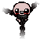
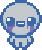

Estadísticas
• Los objetos afectan a tus estadísticas y cuando los recojas, podrás ver que aumentan o se reducen
• El daño afecta directamente a cada lágrima que dispares. Sin embargo, algunos objetos, solo aumentan el daño de un ojo. Esto se debe a que cuando disparas, si te fijas al disparar hacia abajo, verás que tu personaje disparará una lágrima por cada ojo, lo que hace que las lágrimas se vayan alternando de ojo derecho/izquierdo
• La cadencia es la forma en la que se miden las lágrimas que disparas por segundo. Tener más cadencia te permite disparar más y por lo tanto, hacer más daño
• Por otra parte, la velocidad de proyectiles se refiere a la velocidad a la que viajan tus lágrimas, tener poca velocidad de proyectiles hace que estos viajen a una velocidad más lenta
• La suerte influye en muchos factores dentro del juego. Desde la probabilidad de encontrar recolectables al despejar salas hasta la suerte al jugar en máquinas tragaperras. La suerte es importante sobre todo porque aumenta la posibilidad de que los objetos que 'tienen una probabilidad de...' se activen
• La prob. sala del ángel y prob. sala del diablo hacen referencia a la probabilidad que tienes de encontrar estas salas al final de cada piso, después de que derrotes al jefe. Estas estadísticas se verán alteradas por una serie de decisiones que tomes durante tu partida (puedes encontrar el funcionamiento de estas salas en otro consejo)
Salas del Ángel y Diablo
Las salas del ángel o del diablo, tienen una probabilidad de aparecer tras derrotar al jefe en cada piso tras Sótano/Bodega I (desde el segundo piso)
Las salas del ángel solo pueden aparecer si no has hecho ningún trato con el diablo anteriormente y si una sala del diablo ya ha aparecido en otro piso en esta partida
Acciones que aumentan tus probabilidades de encontrar salas del ángel:
• Donar 10 monedas por piso en la máquina de donación en la tienda (esto no incrementará si tu probabilidad de encontrar una sala del diablo es nula, ya que el efecto que provoca donar 10 monedas es darte + prob. sala del ángel a cambio de - prob. sala del diablo)
• Donar monedas a un mendigo hasta que de un objeto y desaparezca
• Explotar a un mendigo demonio
• Llevar la baratija 'Cuenta de Rosario'
Acciones que aumentan tus probabilidades de encontrar salas del diablo:
• Llevar cualquier objeto malvado como el 'Libro de Revelaciones' o el 'Pentagrama'
• Abrir un cofre rojo tiene una probabilidad de teletransportarte a una sala del diablo
• Usar la carta Joker te teletransportará a una sala del diablo
Acciones para que aumentan las probabilidades de encontrar ambas salas:
• Explotar a un mendigo
• Explotar a una momia en la tienda o en salas secretas
• No recibir daño en todo el piso o solo en la sala del jefe (solo recibir daño a corazones rojos eliminará este bonus)
Salas Secretas
En el juego existen varias salas secretas que se encuentran adyacentes a otras salas que cumplan ciertos requisitos. Existen la sala secreta y la super secreta
En cada piso, hay como mínimo una sala secreta que se puede descubrir colocando una bomba en la zona que se sospeche que puede contener la entrada. La sala super secreta puede estar o no en cada piso
Las salas secretas se muestran con un icono de interrogación en el mapa blanco. Las super secretas se muestran con un icono gris
Las salas secretas y super secretas nunca están junto a la sala del jefe
La sala secreta siempre está adyacente a como mínimo otras 2 salas, es decir, que las paredes de la sala secreta siempre están como mínimo dos de ellas al lado de otras dos salas, tal y como muestran estas imágenes en rojo, azul, y verde:
Las entradas a salas secretas siempre se encuentran en el medio de las paredes de las salas adyacentes, por lo que si la entrada a lo que se cree que es la sala secreta está bloqueada por rocas, cacas, etc es imposible que sea la entrada, algunos ejemplos de lo que puede y no puede ser una sala secreta:
De esta manera, muchas entradas a salas secretas se pueden descartar ya que sus entradas están bloqueadas. Una sala secreta NUNCA tiene una sola entrada. En su lugar, todas las salas adyacentes a ella actúan como entrada, como en esta imagen:
En cuanto a las salas super secretas, funcionan igual que las secretas, la única diferencia es que están adyacentes a UNA SOLA sala (esto hace que la sala super secreta sea mucho más difícil de encontrar que la sala secreta), y nuevamente, la mitad de su pared adyacente, no debe estar bloqueada por ningún obstáculo
La sala super secreta tiene una gran probabilidad de encontrarse en la sala anterior a la del jefe
• Las salas secretas se muestran con un icono de interrogación en el mapa blanco. Las super secretas se muestran con un icono gris
• Las salas secretas y super secretas nunca están adyacantes a la sala del jefe
• Algunos objetos como el 'Ácido Sulfúrico' hace que tengas una probabilidad de disparar lágrimas ácidas, que abren entradas a salas secretas y super secretas
Tipos de Cacas
Caca
• Tiene una probabilidad de dar monedas, corazones rojos o la baratija 'Popó Petrificado' al destruirla
• Puede rellenar un agujero si se destruye con una explosión en la dirección opuesta a este
• Destruir 100 cacas desbloqueará el 'Frijol Mantequilla'
Caca con Pepitas

• Igual que la caca normal, pero tiene una mosca en órbita que te atacara si la destruyes
• No puede soltar la baratija 'Popó Petrificado'
Caca roja

• Te hace medio corazón de daño si la tocas
• Hace 16 de daño a enemigos
• No suelta nada al destruirla
• Se vuelve a formar 3 segundos después de destruirla
Caca de oro

• Cuesta más romperlas que las cacas normales
• Suelta 5-9 al destruirlas o la baratija 'Moneda Falsificada'
Caca arcoíris

• Causa que aparezca un arcoíris y te cura la vida completa
Caca negra

• Oscurece la sala
• Hace 10 de daño a enemigos y les aplica confusión cuando se destruye
Caca blanca

• Emite un aura que aumenta tu daño x1.25, duplica tu cadencia, y tus lágrimas se vuelven guiadas
• El aura desaparece si la caca se destruye
• Tiene una pequeña probabilidad de soltar monedas o corazones cuando se destruye
Obstáculos
Rocas
• Bloquean el movimiento y los proyectiles a menos que tengas vuelo y lágrimas espectrales respectivamente
• Se pueden destruir con ciertos objetos como el 'Pico de Notch', 'Leo' o 'El Clavo'
• Puede rellenar un agujero si se destruye con una explosión en la dirección opuesta a este
• Tienen una pequeña probabilidad de revelar una trampilla a sala del tesoro retro cuando se destruyen
• Destruir 100 rocas desbloqueará la 'Roca de la Suerte'
• Las rocas con una bomba incrusatada explotarán si tienes algún objeto/efecto de lágrima que provoque algún tipo de explosión
• Las rocas con oro incrustado soltrán 2-4 monedas de oro al destruirlas. Estas rocas se desbloquean derrotando a Mega Satán con Lilith Corrupta
Rocas Tintadas

• Siempre están marcadas con una "x", y en algunos niveles están descoloridas diferenciándolas de las rocas normales. Solo puede haber una roca tintada por sala
• Destruir 10 rocas tintadas desbloqueará 'Sr. Mega'
• Destruir 100 rocas tintadas desbloqueará 'La Roca Pequeña'
Destruirlas soltará 1-3 recolectables, que pueden ser:
• Corazones de alma
• Llaves
• Bombas
• Cofres
• Cofres de oro
• 'La Roca Pequeña'
Rocas Super Especiales

• Las rocas super especiales son variantes de las Rocas Tintadas que tienen las marcas más pequeñas y no están descoloridas, lo que las hace mucho más difíciles de encontrar
• Las rocas super especiales requieren 2 bombas para destruirse y sueltan recompensas equivalentes a 2 rocas tintadas
• Se desbloquean obteniendo una racha de 3 victorias con un personaje distinto en cada una de ellas
Urnas
• Actúa como una roca
Destruirlas tiene una probabilidad de soltar:
• 1-3 Arañas enemigas
• Algunas monedas
• 'Un Cuarto' (1% de probabilidad)
• 'Moneda Tragada'
• Una moneda de plata (que da 5 monedas)
Champiñones

• Actúa como una roca
Destruirlos tiene una probabilidad de soltar:
• Píldoras
• Gas venenoso que te hace medio corazón de daño
• 'Monguis'
• 'Champiñón Mágico' (0.5% de probabilidad)
• 'Honguito' (0.5% de probabilidad)
Calaveras
• Actúa como una roca
Destruirlos tiene una probabilidad de soltar:
• Enemigos Host
• Cartas del tarot
• Runas
• 'Bebé Fantasma' (0.5% de probabilidad)
• 'Bebé Seco' (0.5% de probabilidad)
Pólipos
• Actúa como una roca
• Sólo aparece en pisos avanzados
Destruirlos tiene una probabilidad de soltar:
• Corazones rojos
• 'Cordón Umbilical'
• 'Coágulo' (0.5% de probabilidad)
• 'Placenta' (0.5% de probabilidad)
Cubos
• Actúa como una roca
Destruirlos tiene una probabilidad de soltar:
• 1-3 Arañas
• 1-3 Larvas
• Algunas monedas
• 'Moneda Tragada'
Los cubos también pueden soltar lo siguiente en el piso Deshechos:
• 1-3 Caquitas
• 'La Popó'
• 'Moneda de Trasero'
Efectos de Estado
Quemado
Los enemigos quemados sufrirán tu daño x2 en el tiempo
Envenenado
Los enemigos envenenados sufrirán tu daño x2 en el tiempo
Aterrorizado
Los enemigos aterrorizados huirán de ti
Encantado
Los enemigos encantados lucharán temporalmente a tu lado, atacando a otros enemigos y haciéndoles un 25% de su vida máxima de daño por tic
Si no quedan enemigos en la sala, los enemigos te atacarán a ti y te podrán dañar
Confundido

Los enemigos confundidos sufres una pérdida de velocidad y se mueven por la sala sin control y no podrán atacar
Relantizado
Los enemigos relantizados sufren una pérdida de velocidad de movimiento del 51.3% de su velocidad original
Cualquier proyectil que disparen también estará relantizado
Petrificado
Los enemigos petrificados se quedan paralizados. No pueden moverse o atacar
Sangrando
Los enemigos que sangren sufrirán daño dependiendo de su velocidad de movimiento, cuanto más rápido se muevan, más daño recibirán Al moverse, los enemigos que sangren dejarán un rastro rojo que puede dañar a otros enemigos
Encadenado
Los enemigos encadenados no podrán realizar ninguna acción
Congelado
Los enemigos congelados se convierten en estatuas que puedes patear. Si la estatua toca a otro enemigo, hace 35 de daño
Si una estatua colisiona con un obstáculo o recibe demasiado daño explotará en fragmentos que hacen 8 de daño y relantizan a enemigos
Marcado
Los enemigos marcados serán atacados por otros enemigos
Amistoso
Los enemigos amistosos lucharán a tu lado permanentemente hasta que mueran, sin embargo, si no hay enemigos en la sala, te podrán atacar a ti
Encogido
Los enemigos encogidos huirán de ti. Puedes pasar sobre enemigos encogidos para aplastarlos y matarlos
Recolectables
Corazones
 Recupera 1 corazón rojo
Recupera 1 corazón rojo
 Recupera 2 corazones rojos
Recupera 2 corazones rojos
 No se pueden recuperar y se colocan a la derecha de tus corazones rojos
No se pueden recuperar y se colocan a la derecha de tus corazones rojos
 No se pueden recuperar, se colocan a la derecha de tus corazones rojos y hacen 40 de daño a todos los enemigos cuando se vacían
No se pueden recuperar, se colocan a la derecha de tus corazones rojos y hacen 40 de daño a todos los enemigos cuando se vacían
 Si se mantiene hasta el siguiente piso te otorgará +1 corazón. Es recomendable no recogerlo hasta temrinar el piso actual
Si se mantiene hasta el siguiente piso te otorgará +1 corazón. Es recomendable no recogerlo hasta temrinar el piso actual
 Recupera 1 corazón entero rojo, si no tienes contenedores de corazones rojos vacíos, te otorgará un corazón de alma
Recupera 1 corazón entero rojo, si no tienes contenedores de corazones rojos vacíos, te otorgará un corazón de alma
 Hacen falta 3 golpes para que se vacíe y se puede rellenar con corazones rojos si consigues no recibir daño hasta hacerlo, pero desaparece para siempre cuando se vacía
Hacen falta 3 golpes para que se vacíe y se puede rellenar con corazones rojos si consigues no recibir daño hasta hacerlo, pero desaparece para siempre cuando se vacía
 Cada vez que despejes una sala, generarás 2 moscas azules por cada corazón podrido que tengas
Cada vez que despejes una sala, generarás 2 moscas azules por cada corazón podrido que tengas
 No te otorga vida. En su lugar, redondea un corazón que ya tengas y cuando este corazón se vacíe, genera 3-8 monedas
No te otorga vida. En su lugar, redondea un corazón que ya tengas y cuando este corazón se vacíe, genera 3-8 monedas
Monedas
Otorga 1 moneda
 Otorga 5 monedas
Otorga 5 monedas
Otorga 10 monedas
 Otorga 1 moneda y vuelve a aparecer en una ubicación al azar de la sala actual. Cada vez que la recojas tiene un 10% de probabilidades de desaparecer
Otorga 1 moneda y vuelve a aparecer en una ubicación al azar de la sala actual. Cada vez que la recojas tiene un 10% de probabilidades de desaparecer
Otorga 5 monedas, pero no podrás recogerla, la única manera de recoger esta moneda es poniéndole una bomba
Otros
Batería de Oro

Recarga tu objeto activo por completo cuando se recoge
También te hace un corazón completo de daño cuando lo recojas. Hacerlo provocará que esta Batería de Oro aparezca en algún otro sitio de este piso
Bomba de Oro

Ganas bombas ilimitadas en el piso actual
Llave de Oro

Ganas llaves ilimitadas en el piso actual
Puertas
Arcade
Esta sala se abre con una moneda en lugar de una llave y dentro contiene varias máquinas a las que puedes jugar a cambio de recolectables y objetos
También puede contener mendigos a los que puedes donar monedas a cambio de objetos
Sala Maldita
Te hacen daño al entrar y al salir. El daño se puede evitar con objetos que te vuelvan invencible temporalmente o que hagan que no sufras el primer ataque en una sala

Sala de Dado
Requiere 2 llaves para abrirse
Hay un dado dentro que si lo pulsas intercambiará recolectables, objetos u otros efectos, para más información sobre esta sala busca el objeto "Sala de Dado"
Habitación
Requiere 2 bombas para abrirla
Una vez dentro, si usas la cama, te curarás toda la vida
Poner una bomba en la alfombra te teletransportará a una sala del tesoro retro si la habitación está limpia o al siguiente piso si está sucia, dos ejemplos de habitación limpia y sucia respectivamente:

Sala de Sacrificio
Dentro de la sala de sacrificio hay unos pinchos, que si los tocas recibirás 1 corazón completo de daño. A cambio, una gran variedad de recompensas te pueden ser otorgadas. Incluso puede generar jefes que de otra manera sería imposible encontrar
La idea de esta sala es entre otras, dañarte cuando hayas derrotado al jefe del piso y tengas algún corazón que se vaya a perder en la transición hacia el siguiente piso. Así podrás recibir recompensas sin sacrificar tu vida

Sala de Desafío
Solo puedes acceder a esta sala si tu salud total contando todos los tipos de corazones, es igual o mayor que tu número de contenedores llenos y vacíos de corazones. Al entrar lucharás contra 3 oleadas de enemigos a cambio de recompensas

Sala de Desafío de Jefe
Esta sala solo se creará si tienes la vida completa al entrar en el piso actual. Además solo podrás entrar si tienes un corazón de vida o menos. Tendrás que derrotar a 2 jefes en esta sala a cambio de recompensas
Máquinas
Tragaperras
Una máquina que cuesta 1 moneda y si hace alguna pareja de 3 te otorga recolectables, que pueden ser:
• Bombas
• Llaves
• Corazones
• Píldoras
• Monedas
• 'Un Dólar'
• Una mosca negra enemiga
• Una mosca amiga
Destruir esta máquina con una bomba otorgará varios recolectables como moneda, llaves o bombas
Máquina de Intercambio
Una máquina que intercambia el objeto que se encuentre en la sala actual
Destruir esta máquina con una bomba provocará el mismo efecto anterior, pero no costará monedas
Máquina Adivinadora
Una máquina que cuesta 1 moneda y puede no otorgarte nada o varias posibilidades:
• Corazones de alma
• Baratijas
• Cartas/Runas
• 'Bola de Cristal'
Destruir esta máquina con una bomba otorgará varios recolectables como moneda, llaves o bombas
Máquina de Donación de Sangre
Te quita medio corazón a cambio de monedas, pero también puede otorgar baratijas
Si se usa hasta que se destruya, otorgará 'Bolsa I.V' o 'Bolsa de Sangre'
Destruir esta máquina con una bomba otorgará varios recolectables como moneda, llaves o bombas
Máquina de Grúa
Una máquina que cuesta 5 monedas e intenta coger el objeto que haya dentro de ella con unas pinzas.
Tiene un 25% de probabilidad de otorgarte el objeto que contiene
La máquina de grúa desaparece tras dar 3 objetos
Máquina de Donaciones
Una máquina que aumenta el número y la calidad de objetos que aparecen en la tienda
Las monedas que dones persistirán entre partidas, el máximo de monedas es 999
Donar 10 monedas aumenta tu probabilidad de encontrar una sala del ángel al final del piso actual
Donar muchas monedas en esta máquina puede provocar que se rompa, impidiéndote donar más en esta partida
Destruir esta máquina con una bomba otorgará 1-5 monedas y las restará de las donaciones, destruirla cuando tenga 999 monedas la reiniciará a 0 y te dará un puñadísimo de monedas. Las donaciones tienen una pequeña probabilidad de aumentar tu suerte
Rebirth Items (341)
Cebolla Triste
ItemID: 1
"+ Lágrimas"
Calidad: 3
+0.7 Cadencia
Tipo: Pasivo
Fuente: Sala del Tesoro
El Ojo Interior
ItemID: 2
"Lágrima triple"
Calidad: 2
Las lágrimas ahora se disparan de 3 en 3 (Disparo Triple)
Reduce significativamente la cadencia
Tipo: Pasivo, Modificador de Lagrimas
Fuente: Sala del Tesoro
Doblador de Cucharas
ItemID: 3
"Lágrimas dirigidas"
Calidad: 3
Otorga a las lágrimas un efecto de guiado
Tipo: Pasivo
Fuente: Sala del Tesoro
Cabeza de Cricket
ItemID: 4
"+ Daño"
Calidad: 4
+0.5 Daño
Todo el Daño x1.5
Tipo: Pasivo
Fuente: Sala del Tesoro
Mi Reflejo
ItemID: 5
"Lágrimas Búmeran"
Calidad: 0
Otorga a las lágrimas un efecto búmeran
+5.4 Alcance
+0.6 Velocidad de proyectiles
Tipo: Pasivo, Modificador de Lagrimas
Fuente: Sala del Tesoro
Número 1
ItemID: 6
"+ Lágrimas"
Calidad: 2
Otorga una gran cadencia de disparo a cambio de quitarte mucho alcance
+1.5 Cadencia
-2.5 Alcance
Tipo: Pasivo
Fuente: Sala del Tesoro
Sangre del Mártir
ItemID: 7
"+ Daño"
Calidad: 3
+1.0 Daño
Tipo: Pasivo
Fuente: Sala del Tesoro, Sala del Ángel
Hermano Bobby
ItemID: 8
"Amigos hasta el fin"
Calidad: 1
Un familiar que te sigue y dispara lágrimas normales que hacen 3.5 de daño
Cuenta como 1 de 3 objetos de familiares necesarios para la Transformación en Conjoined
Tipo: Pasivo, Familiar
Fuente: Sala del Tesoro, Sala del Diablo
Escatol
ItemID: 9
"Amor de mosca"
Calidad: 0
Muchos enemigos mosca ya no son agresivos
Mosca de Ataque, Mosca Dardo, Mosca Eterna, y Mosca Anillo se transforman en moscas neutrales negras
Mosca Búm, Mosca Roja Búm y Mosca Búm Ahogada vuelan más lentas, pero aún hacen daño de contacto
Mosca Doble, Mosca de Nivel 2, Mosca Entera, Pooter, y Super Pooter se mueven más lentas y no hacen daño de contacto
Solo puede ser obtenido en el juego de las 3 calaveras en el arcade
Cuenta como 1 de 3 objetos de mosca necesarios para la Transformación en Beelzebub
Cuenta como 1 de 3 objetos de caca necesarios para la Transformación en Oh Crap
Tipo: Pasivo
Fuente: Ninguna (Solo en el juego de las 3 calaveras en el arcade)
Halo de Moscas
ItemID: 10
"Protección antiproyectiles"
Calidad: 2
Te da 2 moscas que orbitan a tu alrededor y bloquean disparos enemigos
Cuenta como 1 de 3 objetos de mosca necesarios para la Transformación en Beelzebub
Tipo: Pasivo, Órbita
Fuente: Sala del Tesoro, Mendigo de Llaves
¡+1!
ItemID: 11
"Vida extra"
Calidad: 2
Te da una vida adicional
Cuando se revive, el champiñón rojo que sigue a Isaac desaparecerá y volverá a aparecer con la misma cantidad de corazones rojos con la vida al máximo
Tipo: Pasivo
Fuente: Sala Secreta
Champiñón Mágico
ItemID: 12
"Mejora todas las estadísticas"
Calidad: 4
+1 corazón
+0.3 Daño
Todo el Daño x1.5
+1.5 Alcance
+0.3 Velocidad
Aumenta el tamaño de tu personaje
Te cura por completo
Cuenta como 1 de 3 objetos de champiñón para la Transformación en Fun Guy
Cuenta como 1 de 3 objetos de aumento de tamaño para la Transformación en Stompy
Tipo: Pasivo
Fuente: Sala del Tesoro, Champiñones
El Virus
ItemID: 13
"Contacto Tóxico, + Velocidad"
Calidad: 2
Los enemigos que te toquen reciben 12 de daño, luego se les aplica un efecto de veneno durante unos segundos, haciéndoles daño igual a la cantidad de corazones rojos que tengas (Hasta 30.8 con 12 corazones rojos enteros)
+0.2 Velocidad
Cuenta como 1 de 3 objetos de jeringuilla necesarios para la Transformación en Spun
Tipo: Pasivo
Fuente: Sala del Tesoro, Mendigo Demonio, Mini-Jefe Codicia
Furia por Esteroides
ItemID: 14
"+ Velocidad, + Alcance"
Calidad: 2
+0.3 Velocidad
+1.5 Alcance
Cuenta como 1 de 3 objetos de jeringuilla necesarios para la Transformación en Spun
Tipo: Pasivo
Fuente: Sala del Tesoro, Sala del Jefe, Mendigo Demonio
<3
ItemID: 15
"+ Vida"
Calidad: 2
+1 corazón
Te cura por completo
Tipo: Pasivo
Fuente: Sala del Tesoro, Mini-Jefe Gula
Hígado Crudo
ItemID: 16
"+ Vida"
Calidad: 2
+2 corazones
Te cura por completo
Tipo: Pasivo
Fuente: Sala Secreta
Llave Esquelética
ItemID: 17
"99 llaves"
Calidad: 3
Te otorga 99 llaves
Tipo: Pasivo
Fuente: Sala del Tesoro, Sala Secreta
Un Dólar
ItemID: 18
"$$$"
Calidad: 3
Te da 100 monedas
Aparece a veces al usar tragaperras
Tipo: Pasivo
Fuente: Ninguna (Solo tragaperras)
¡Buum!
ItemID: 19
"10 bombas"
Calidad: 0
+10 Bombas
Tipo: Pasivo
Fuente: Sala del Tesoro
Transcendencia
ItemID: 20
"Todos flotamos aquí abajo..."
Calidad: 3
Te otorga la habilidad de volar
DESBLOQUEAR: Desbloquea este objeto derrotando al Corazón de Mamá 3 veces
Tipo: Pasivo
Fuente: Sala Secreta
La Brújula
ItemID: 21
"El fin se acerca"
Calidad: 2
Muestra la mayoría de los iconos en el mapa (tiendas, salas del tesoro, salas de jefes, etc)
No muestra la ubicación de salas secretas o super secretas
Tipo: Pasivo
Fuente: Tienda, Mendigo
Almuerzo
ItemID: 22
"+ Vida"
Calidad: 1
+1 Corazón
Restaura un corazón cuando se recoge
Tipo: Pasivo
Fuente: Sala del Jefe, Sala de Desafío, Mendigo
Cena
ItemID: 23
"+ Vida"
Calidad: 1
+1 Corazón
Cura un corazón cuando se recoge
Tipo: Pasivo
Fuente: Sala del Jefe, Mendigo, Sala de Desafío
Postre
ItemID: 24
"+ Vida"
Calidad: 1
+1 Corazón
Cura un corazón cuando se recoge
Tipo: Pasivo
Fuente: Sala del Jefe, Mendigo, Sala de Desafío
Desayuno
ItemID: 25
"+ Vida"
Calidad: 1
+1 Corazón
Cura un corazón cuando se recoge
Tipo: Pasivo
Fuente: Sala del Jefe, Sala de Desafío, Mendigo
Carne Podrida
ItemID: 26
"+ Vida"
Calidad: 1
+1 Corazón
Cura un corazón cuando se recoge
Tipo: Pasivo
Fuente: Sala del Jefe, Mendigo, Sala de Desafío
Cuchara de Madera
ItemID: 27
"+ Velocidad"
Calidad: 1
+0.3 Velocidad
Tipo: Pasivo
Fuente: Sala del Jefe
El Cinturón
ItemID: 28
"+ Velocidad"
Calidad: 1
+0.3 Velocidad
Tipo: Pasivo
Fuente: Sala del Jefe, Cofre de Oro/Piedra
Ropa Interior de Mamá
ItemID: 29
"+ Alcance"
Calidad: 1
+1.5 Alcance
Otorga 3-6 moscas azules de ataque cuando se recoge
Cuenta como 1 de 3 objetos de Mamá necesarios para la Transformación en Mamá
Tipo: Pasivo
Fuente: Sala del Jefe, Sala de Desafío, Cofres de Oro/Piedra, Cofre de Mamá
Tacones de Mamá
ItemID: 30
"+ Alcance"
Calidad: 1
+1.5 Alcance
Cuenta como 1 de 3 objetos de Mamá necesarios para la Transformación en Mamá
REPENTANCE - Tocar a los enemigos les hace 12 de daño
Tipo: Pasivo
Fuente: Sala del Jefe, Sala de Desafío, Cofre de Mamá
Labial de Mamá
ItemID: 31
"+ Alcance"
Calidad: 1
+2.25 Alcance
Suelta un corazón aleatorio cuando se recoge
Cuenta como 1 de 3 objetos de Mamá necesarios para la Transformación en Mamá
Tipo: Pasivo
Fuente: Sala del Jefe, Sala de Desafío, Cofre de Mamá
Percha de Alambre
ItemID: 32
"+ Lágrimas"
Calidad: 3
+0.7 Cadencia
DESBLOQUEAR: Desbloquea este objeto derrotando al Corazón de Mamá 4 veces
Tipo: Pasivo
Fuente: Sala del Jefe, Cofre de Oro/Piedra
La Biblia
ItemID: 33
"Vuelo (temporal)"
Calidad: 1
Te da unas alas de ángel durante la sala actual, permitiéndote volar
Mata instantáneamente a los jefes Pie de Mamá, Corazón de Mamá y Está Vivo
Si se usa durante la pelea contra Satán, La Biblia te matará instantáneamente
Cuenta como 1 de 3 objetos de ángel necesarios para la Transformación en Seraphim
Cuenta como 1 de 3 objetos de libro necesarios para la Transformación en Bookworm
Tipo: Activo
Tiempo de Recarga: 4 salas
Fuente: Tienda, Librería, Sala del Ángel
Libro de Belial
ItemID: 34
"+ Daño (temporal)"
Calidad: 3
Cuando se usa, otorga +2 de daño en la sala actual
Incrementa tus posibilidades de encontrar salas del angel/diablo en un +12.5%
Judas empieza con este objeto
Cuenta como 1 de 3 objetos de libro necesarios para la Transformación en Bookworm
Tipo: Activo
Tiempo de Recarga: 3 salas
Fuente: Librería, Sala del Diablo
El Necronomicón
ItemID: 35
"Daño masivo en sala"
Calidad: 1
Hace 40 de daño a todos los enemigos en la sala actual al usarse
Cuenta como 1 de 3 objetos de libro necesarios para la Transformación en Bookworm
DESBLOQUEAR: Desbloquea este objeto usando 4 veces la carta XIII - Muerte
Tipo: Activo
Tiempo de Recarga: 3 salas
Fuente: Librería, Sala Secreta, Sala del Diablo
La Popó
ItemID: 36
"¡Plop!"
Calidad: 0
Genera una caca en el suelo
??? empieza con este objeto
Se puede colocar junto a un agujero y hacer que explote para crear un puente
Se puede colocar sobre una caca roja rota para reemplazarla, lo que hace que ya no se regenere
Cuenta como 1 de 3 objetos de caca necesarios para la Transformación en Oh Crap
Tipo: Activo
Tiempo de Recarga: 1 sala
Fuente: Sala del Tesoro
Sr. Buum
ItemID: 37
"Compañero bomba reutilizable"
Calidad: 1
Suelta una gran bomba bajo el jugador que hace 185 de daño
Tipo: Activo
Tiempo de Recarga: 2 salas
Fuente: Sala del Tesoro, Mini-Jefe Ira, Mendigo de Bombas
Cabeza de Tammy
ItemID: 38
"Estallido de lágrimas (varios usos)"
Calidad: 3
Dispara 10 lágrimas en un círculo a tu alrededor
Cada lágrima hace tu daño +25
Las lágrimas generadas por la cabeza de Tammy retienen los efectos de las lágrimas, como el veneno o el guiado
Tipo: Activo
Tiempo de Recarga: 1 sala
Fuente: Sala del Tesoro, Cofre de Oro
Sostén de Mamá
ItemID: 39
"Parálisis Masiva"
Calidad: 1
Cuando se usa, congela a todos los enemigos en la sala actual durante unos 4 segundos
Cuenta como 1 de 3 objetos de Mamá necesarios para la Transformación en Mamá
Tipo: Activo
Tiempo de Recarga: 3 salas
Fuente: Sala del Tesoro, Sala de Desafío, Cofre de Mamá
Kamikaze
ItemID: 40
"¡Sé la bomba!"
Calidad: 0
Provoca una explosión cerca que te quita medio corazón y hace 40 de daño a todos los enemigos cercanos
Tipo: Activo
Tiempo de Recarga: Instantaneo
Fuente: Sala del Tesoro
Toallita de Mamá
ItemID: 41
"Temor masivo"
Calidad: 0
Cuando se usa, hace que todos los enemigos en la sala actual huyan de ti aterrados durante 5 segundos
Cuenta como 1 de 3 objetos de Mamá necesarios para la Transformación en Mamá
Tipo: Activo
Tiempo de Recarga: 3 salas
Fuente: Sala del Tesoro, Sala de Desafío, Cofre de Mamá
Cabeza Podrida de Bob
ItemID: 42
"Bomba a distancia (varios usos)"
Calidad: 1
Una bomba venenosa que se puede lanzar y deja un efecto venenoso en cualquier enemigo dentro del radio de explosión. También deja una nube de gas en el lugar donde explote
La bomba hace tu daño + 185 y deja un efecto de veneno en el tiempo que hace tu daño x3 por tic
Cuenta como 1 de 3 objetos de veneno necesarios para la Transformación en Bob
Tipo: Activo
Tiempo de Recarga: 2 salas
Fuente: Sala del Tesoro, Mini-Jefe Pereza
¡Teletransporte!
ItemID: 44
"¡Teletransporte!"
Calidad: 0
Te teletransporta a una sala aleatoria en el mapa
REPENTANCE - ¡Teletransporte! ahora permite al jugador influir en la dirección del teletransporte (usando la dirección en la que te muevas al activar el objeto)
Tipo: Activo
Tiempo de Recarga: 2 salas
Fuente: Sala del Tesoro
Delicioso Corazón
ItemID: 45
"Regeneración (varios usos)"
Calidad: 1
Te cura un corazón entero
Magdalena empieza con este objeto
Tipo: Activo
Tiempo de Recarga: 4 salas
Fuente: Sala del Tesoro, Mini-Jefe Super Codicia
Pie de la Suerte
ItemID: 46
"+ Suerte"
Calidad: 2
+1.0 Suerte
REPENTANCE - Pie de la Suerte ahora garantiza los efectos positivos de las píldoras
Tipo: Pasivo
Fuente: Sala del Tesoro, Mendigo
Control Remoto de Doctor
ItemID: 47
"Ataque Aéreo (varios usos)"
Calidad: 1
Se coloca un objetivo en el suelo que se puede controlar. Después de unos segundos, un gran misil golpea al objetivo y causa tu daño x20 a cualquier enemigo cercano
Tipo: Activo
Tiempo de Recarga: 2 salas
Fuente: Sala del Tesoro
Flecha de Cupido
ItemID: 48
"Lágrimas Perforantes"
Calidad: 3
Tus lágrimas ahora tienen un efecto perforante que les permite atravesar a los enemigos en lugar de romperse al golpearles
Tipo: Pasivo
Fuente: Sala del Tesoro
Kamehame... ¡¿Eeeeeeh?!
ItemID: 49
"¡BLLLARRRRGGG!"
Calidad: 2
Cuando se usa, dispara un láser de alto daño en línea recta a través de la sala
Hace tu daño x2. El láser golpea hasta 13 veces si un enemigo permanece dentro de él mientras dure
Tipo: Activo
Tiempo de Recarga: 2 salas
Fuente: Sala del Tesoro, Mini-Jefe Envidia, Mini-Jefe Super Envidia
Steven
ItemID: 50
"+ Daño"
Calidad: 3
+1 Daño
DESBLOQUEAR: Desbloquea este objeto completando el Sótano 40 veces y derrotando a Steven
Tipo: Pasivo
Fuente: Jefe Steven
Pentáculo
ItemID: 51
"+ Daño"
Calidad: 3
+1.0 Daño
+10 % de probabilidad de que se abra una sala del diablo/ángel mientras se tenga
Un segundo Pentáculo dará un +5 % adicional de probabilidad
Cuenta como 1 de 3 objetos malvados necesarios para la Transformación en Leviathan
Tipo: Pasivo
Fuente: Sala del Jefe, Sala Maldita, Sala del Diablo, Mendigo Demonio, Juego de Grúa
Dr. Fetus
ItemID: 52
"???"
Calidad: 4
En lugar de lágrimas, ahora disparas bombas, que explotan y hacen daño a todos los enemigos cercanos
Daño de Bombas = Daño x10
- Cadencia (Retraso de Lágrimas x2.5)
DESBLOQUEAR: Desbloquea este objeto derrotando al Corazón de Mamá 9 veces
Tipo: Pasivo, Modificador de Lágrimas
Fuente: Sala del Tesoro
Magneto
ItemID: 53
"Ladrón de objetos"
Calidad: 1
Causa que los recolectables del suelo se muevan hacia ti
Funciona a través de agujeros, pero no a través de bloques de llave
REPENTANCE - Magneto ahora puede abrir cofres desde una pequeña distancia. No se aplica a cofres cerrados
Tipo: Pasivo
Fuente: Sala del Tesoro
Mapa del Tesoro
ItemID: 54
"Mapa complétamente visible"
Calidad: 2
Revela el mapa completo para cada piso excepto las ubicaciones de salas secretas
No muestra los iconos de las salas sin explorar
Puede ayudarte a adivinar en qué dirección está la sala del jefe, debido a que la sala del jefe suele estar en la sala más alejada de la sala inicial
Tipo: Pasivo
Fuente: Tienda, Mendigo
Ojo de Mamá
ItemID: 55
"Un ojo en tu nuca"
Calidad: 1
A veces disparas una lágrima adicional desde la parte trasera de tu personaje
Cuenta como 1 de 3 objetos de Mamá necesarios para la Transformación en Mamá
Tipo: Pasivo, Modificador de Lágrimas
Fuente: Sala del Tesoro, Sala de Desafío, Cofre de Mamá
Accidente de Limón
ItemID: 56
"Ups..."
Calidad: 1
Cuando se usa, deja caer un charco de 'limonada' en el suelo que daña a los enemigos que pasan por encima haciéndoles 8 de daño por tic
Tipo: Activo
Tiempo de Recarga: 2 salas
Fuente: Sala del Tesoro
Admiración Lejana
ItemID: 57
"Mosca de Asalto"
Calidad: 2
Te otorga una mosca en órbita que hace 5 de daño a los enemigos cercanos por tic
Cuenta como 1 de 3 objetos de mosca necesarios para la Transformación en Beelzebub
Tipo: Pasivo, Órbita
Fuente: Sala del Tesoro, Mendigo de Llaves
Libro de las Sombras
ItemID: 58
"Invencibilidad Temporal"
Calidad: 3
Te vuelve invencible durante 10 segundos
Se puede usar para obtener tiradas gratuitas en las máquinas de donación de sangre y con mendigos demonios
Cuenta como 1 de 3 objetos de libro necesarios para la Transformación en Bookworm
Tipo: Activo
Tiempo de Recarga: 3 salas
Fuente: Sala del Tesoro, Librería
La Escalera
ItemID: 60
"Construyendo Puentes"
Calidad: 1
Te permite caminar sobre agujeros de pequeño tamaño
Tipo: Pasivo
Fuente: Tienda
Encanto del Vampiro
ItemID: 62
"Matar sana"
Calidad: 1
+0.3 Daño
Cura medio corazón por cada 13 enemigos que mates
Tipo: Pasivo
Fuente: Sala del Tesoro
La Batería
ItemID: 63
"Almacena energía"
Calidad: 2
Todos los objetos activos ahora se pueden sobrecargar, permitiéndoles cargarse dos veces en lugar de una
Las cargas adicionales aparecen en amarillo encima de las barras verdes normales
Tipo: Pasivo
Fuente: Tienda
Rebajas de Steam
ItemID: 64
"Descuento del 50%"
Calidad: 2
Los objetos de la tienda cuestan un 50% menos
Los artículos de 15c se reducen a 7c. Los objetos de 5c se convierten en 3c. Los objetos de 3c se convierten en 2c
Comprar más de 1 rebaja de Steam reduce aún más el precio de todos los artículos
Tipo: Pasivo
Fuente: Tienda, Mini-Jefe Codicia, Tenderos
Recetario de Anarquista
ItemID: 65
"Invocas bombas"
Calidad: 1
Genera 6 bombas troll en lugares aleatorios de la sala
Cuenta como 1 de 3 objetos de libro necesarios para la Transformación en Bookworm
Tipo: Activo
Tiempo de Recarga: 3 salas
Fuente: Sala del Tesoro, Librería, Mini-Jefe Orgullo
El Reloj de Arena
ItemID: 66
"Lentitud de enemigos temporal"
Calidad: 1
Cuando se usa, ralentiza a todos los enemigos en la sala actual y sus proyectiles durante unos 8 segundos
Tipo: Activo
Tiempo de Recarga: 2 salas
Fuente: Sala del Tesoro
Hermana Magdalena
ItemID: 67
"Amigos hasta el fin"
Calidad: 1
Un familiar que te sigue y dispara lágrimas de sangre que hacen 5 de daño
Las lágrimas aparecen rojas pero no hacen daño adicional
Cuenta como 1 de 3 objetos de familiares necesarios para la Transformación en Conjoined
Tipo: Pasivo, Familiar
Fuente: Sala del Tesoro, Sala del Diablo
Teconología
ItemID: 68
"Lágrimas láser"
Calidad: 3
Tus lágrimas se reemplazan con un láser que tiene un alcance ilimitado y solo puede disparar en ángulos rectos
Los láseres viajan a través de los enemigos pero no de los obstáculos en la sala
Tipo: Pasivo, Modificador de Lágrimas
Fuente: Sala del Tesoro
Batido de Chocolate
ItemID: 69
"Recarga disparos"
Calidad: 3
Ahora puedes cargar disparos para causar más daño manteniendo presionado el botón de disparo
Al máximo, tus lágrimas hacen 4 veces más daño
Las lágrimas disparadas con la carga mínima posible hacen aproximadamente 1/3 de tu daño normal
- Cadencia: Retraso x2.5
Tipo: Pasivo, Modificador de Lágrimas
Fuente: Sala del Tesoro
Hormonas de Crecimiento
ItemID: 70
"+ Velocidad, + Daño"
Calidad: 3
+1.0 Daño
+0.2 Velocidad
Cuenta como 1 de 3 objetos de jeringuilla necesarios para la Transformación en Spun
Tipo: Pasivo
Fuente: Sala del Jefe, Mendigo Demonio
Honguito
ItemID: 71
"+ Velocidad, + Alcance"
Calidad: 2
+0.3 Velocidad
+1.5 Alcance
Se reduce tu tamaño
Puede aparecer al explotar hongos y setas en el escenario, que normalmente se encuentran en las Cuevas/Catacumbas y en salas secretas
Cuenta como 1 de 3 objetos de champiñón para la Transformación en Fun Guy
Tipo: Pasivo
Fuente: Sala del Tesoro, Hongos, Sala Secreta
Rosario
ItemID: 72
"+ Lágrimas, + Fe"
Calidad: 2
+3 Corazones de alma
+0.5 Cadencia
Cuenta como 1 de 3 objetos de ángel necesarios para la Transformación en Seraphim
Tipo: Pasivo
Fuente: Sala del Tesoro, Sala del Ángel
Cubo de Carne
ItemID: 73
"Cómelos a todos"
Calidad: 2
Un objeto que orbita a tu alrededor, bloquea disparos y hace 7 de daño por tic a enemigos cercanos
2 cubos transforman la órbita en una cabeza de carne que dispara lágrimas de sangre que hacen 3.5 de daño
3 cubos de carne lo transforman en un familiar carnívoro que camina y causa 3.5 de daño por tic a enemigos cercanos
4 cubos de carne causa que el familiar crezca en tamaño y haga 5.5 de daño por tic
Cualquier otro cubo de carne después de 4 comenzará el ciclo nuevamente
DESBLOQUEAR: Desbloquea este objeto derrotando a Mamá por primera vez
Tipo: Pasivo
Fuente: Ninguna (Sólo Jefe Jinete del Apocalipsis)
Un Cuarto
ItemID: 74
"+25 Monedas"
Calidad: 1
+25 Monedas
Tiene una probabilidad muy pequeña de aparecer al destruir una de las macetas que aparecen en los pisos del Sótano y la Bodega
DESBLOQUEAR: Desbloquea este objeto derrotando al Corazón de Mamá 8 veces
Tipo: Pasivo
Fuente: Sala del Diablo, Cofre de Oro, Mini-Jefe Super Codicia, Macetas
PhD
ItemID: 75
"Mejores píldoras"
Calidad: 2
Convierte la mayoría de píldoras negativas en su contraparte positiva, por ejemplo: - Estadística se convierte en + Estadística, Mal Viaje se convierte en Bolas de Acero, etc
Las píldoras se identifican antes de haberlas usado
Suelta una píldora cuando se recoge
Cura 2 corazones enteros cuando se recoge
Añade 0-2 monedas a la recompensa cuando usas una máquina de donación de sangre o una Bolsa I.V
Tipo: Pasivo
Fuente: Sala del Tesoro, Tienda
Visión de Rayos X
ItemID: 76
"Lo he visto todo"
Calidad: 2
Revela la entrada a las salas secretas y abre automáticamente su agujero, quitando la necesidad de poner bombas para entrar
Tipo: Pasivo
Fuente: Sala del Tesoro
Mi Pequeño Unicornio
ItemID: 77
"Rudeza Temporal"
Calidad: 1
Cuando lo uses, te vuelves invencible y ganas +0.28 de velocidad durante 6 segundos
Mientras esté activo, no puedes disparar lágrimas, pero tocar a enemigos hará 40 de daño por segundo
Permite usar la máquina de donación de sangre y el mendigo demonio sin sufrir daño
Tipo: Activo
Tiempo de Recarga: 4 salas
Fuente: Sala del Tesoro
Libro de Revelaciones
ItemID: 78
"Protección de alma (varios usos)"
Calidad: 3
Cuando se usa, te da un corazón de alma
Usar este objeto aumenta la posibilidad de encontrar un jefe Jinete del Apocalipsis al final del piso
+17.5% de probabilidad de que se abra una sala del diablo después de la pelea contra el jefe
Cuenta como 1 de 3 objetos de libro necesarios para la Transformación en Bookworm
DESBLOQUEAR: Desbloquea este objeto derrotando a uno de los jefes Jinetes del Apocalipsis por primera vez
Tipo: Activo
Tiempo de Recarga: 6 salas
Fuente: Sala del Tesoro, Librería
La Marca
ItemID: 79
"+ Daño, + Velocidad"
Calidad: 3
+1.0 Daño
+0.2 Velocidad
+1 Corazón de alma
Cuenta como 1 de 3 objetos malvados necesarios para la Transformación en Leviathan
Tipo: Pasivo
Fuente: Sala Maldita, Sala del Diablo, Mendigo Demonio
El Pacto
ItemID: 80
"+ Daño, + Lágrimas"
Calidad: 3
+0.5 Daño
+0.7 Cadencia
+2 Corazones negros
Cuenta como 1 de 3 objetos malvados necesarios para la Transformación en Leviathan
Tipo: Pasivo
Fuente: Sala del Diablo, Sala Maldita, Mendigo Demonio
Gato Muerto
ItemID: 81
"9 vidas extra"
Calidad: 3
Tu salud se establece en 1 corazón máximo y ganas 9 vidas extra
Cada vez que mueras, volverás a la vida con 1 corazón de vida
Cuenta como 1 de 3 objetos de gato necesarios para la Transformación en Guppy
Tipo: Pasivo
Fuente: Sala del Diablo, Sala Maldita, Cofre Rojo, Mini-Jefe Super Orgullo
Señor del Abismo
ItemID: 82
"Alas demoniacas"
Calidad: 3
Te da alas de demonio y la habilidad de volar
+0.3 Velocidad
Cuenta como 1 de 3 objetos malvados necesarios para la Transformación en Leviathan
Tipo: Pasivo
Fuente: Sala del Diablo, Mendigo Demonio
El Clavo
ItemID: 83
"Forma demoniaca (temporal)"
Calidad: 3
Te otorga +0.7 Daño, -0.18 Velocidad y te permite destruir la mayoría de obstáculos en la sala actual
Cada uso también te otorga medio corazón negro, que se mantiene entre salas
Si tocas a algún enemigo en la sala que lo actives, le harás 40 de daño, pero no previene que tú recibas daño como lo harías normalmente al tocarlos
Cuenta como 1 de 3 objetos malvados necesarios para la Transformación en Leviathan
DESBLOQUEAR: Desbloquea este objeto completando Boss Rush con Azazel
Tipo: Activo
Tiempo de Recarga: 6 salas
Fuente: Sala del Diablo, Mendigo Demonio
¡Necesitamos Ir Más Profundo!
ItemID: 84
"Salto de nivel (varios usos)"
Calidad: 2
Crea una trampilla en tu posición que te permite viajar al siguiente piso
Cavar en ciertos lugares con objetos o marcas en el suelo garantizará una Sala del Tesoro Retro una vez por piso
En Sheol, Catedral, Cuarto Oscuro y cualquier Sala del Tesoro este objeto abrirá una Sala del Tesoro Retro, o no hará nada
No puede crear una trampilla justo enfrente de la entrada a una sala secreta
Puede destruir rocas al usarse cuando estás volando sobre una roca
Tipo: Activo
Tiempo de Recarga: 6 salas
Fuente: Sala Secreta, Sala del Diablo
Mazo de Cartas
ItemID: 85
"Generador de cartas (varios usos)"
Calidad: 2
Cuando se usa, te da una carta del tarot al azar
Cuenta como 1 de 3 objetos de astrología necesarios para desbloquear Los Planetarios
Tipo: Activo
Tiempo de Recarga: 6 salas
Fuente: Sala del Tesoro, Tienda
Diente de Monstro
ItemID: 86
"Invoca a Monstro"
Calidad: 1
Cuando se usa, invoca a Monstro que saltará sobre un enemigo aleatorio en la sala, haciéndole 120 de daño y destruirá los obstáculos cercanos
DESBLOQUEAR: Desbloquea este objeto completando el Sótano II por primera vez
Tipo: Activo
Tiempo de Recarga: 3 salas
Fuente: Sala del Tesoro
Cuernos de Loki
ItemID: 87
"Lágrimas en cruz"
Calidad: 1
Cada vez que disparas una lágrima, hay una posibilidad de que también dispares 3 lágrimas más en todas las direcciones cardinales
DESBLOQUEAR: Desbloquea este objeto derrotando a Lokii por primera vez
Tipo: Pasivo, Modificador de Lágrimas
Fuente: Sala del Tesoro, Mendigo Demonio
Pequeño Chubby
ItemID: 88
"Compañero de ataque"
Calidad: 1
Un familiar que te sigue y carga hacia delante, haciendo 3.5 de daño por tic a cualquier enemigo al que toque
DESBLOQUEAR: Desbloquea este objeto completando las Cuevas II por primera vez
Tipo: Pasivo, Familiar
Fuente: Sala del Tesoro
Picadura de Araña
ItemID: 89
"Efecto de lentitud"
Calidad: 2
Tus lágrimas ahora tienen una posibilidad de relantizar enemigos y sus proyectiles durante 2.5 segundos
Tipo: Pasivo
Fuente: Sala del Tesoro
La Roca Pequeña
ItemID: 90
"+ Daño"
Calidad: 3
+1.0 Daño
+0.2 Cadencia
-0.2 Velocidad
Tiene una probabilidad de aparecer al destruir una roca tintada
DESBLOQUEAR: Desbloquea este objeto destruyendo 100 rocas tintadas
Tipo: Pasivo
Fuente: Ninguna (Solo rocas tintadas)
Sombrero de Espeleólogo
ItemID: 91
"Mira a través de las puertas"
Calidad: 2
Revela las salas adyacentes en una distancia de hasta 2 salas, esto incluye las salas secretas y super secretas
Bloquea el daño de los proyectiles que caen desde arriba
Tipo: Pasivo
Fuente: Sala del Tesoro
Super Vendaje
ItemID: 92
"+2 Corazones"
Calidad: 2
+1 Corazón
+2 Corazones de alma
Cura un corazón cuando se recoge
DESBLOQUEAR: Desbloquea este objeto Derrotando a los Jinetes del Apocalipsis
Tipo: Pasivo
Fuente: Sala del Tesoro, Sala del Jefe
El Gamekid
ItemID: 93
"Man-Pac temporal"
Calidad: 2
Cuando se usa, te transforma en pacman, que te hace invencible durante 6 segundos y hace 40 de daño por mordisco
Cada vez que te 'comas' a 2 enemigos, recuperas medio corazón rojo
No puedes disparar mientras este objeto está activo
DESBLOQUEAR: Desbloquea este objeto visitando 10 arcade
Tipo: Activo
Tiempo de Recarga: 4 salas
Fuente: Sala del Tesoro
Bolsa de Centavos
ItemID: 94
"Da dinero"
Calidad: 1
Una bolsa que flota alrededor siguiéndote y suelta una moneda al azar cada 2 salas
DESBLOQUEAR: Desbloquea este objeto derrotando a Isaac con Caín
Tipo: Pasivo, Familiar
Fuente: Sala del Tesoro
Robo-Baby
ItemID: 95
"Amigos hasta el bbbbzzzzt..."
Calidad: 1
Un familiar que te sigue y dispara láseres
El láser de Robo-Baby es espectral y perforante (pasará a través de rocas y objetos en el entorno)
El láser de Robo-Baby hace 3.5 de daño por disparo
Cuenta como 1 de 3 objetos de familiares necesarios para la Transformación en Conjoined
Tipo: Pasivo, Familiar
Fuente: Sala del Tesoro
Pequeño C.H.A.D.
ItemID: 96
"Da besos"
Calidad: 2
Un familiar que te sigue y suelta medio corazón rojo cada 3 salas
DESBLOQUEAR: Desbloquea este objeto completando las Cuevas 30 veces y derrotando a C.H.A.D
Tipo: Pasivo, Familiar
Fuente: Sala del Tesoro, Jefe C.H.A.D.
El Libro del Pecado
ItemID: 97
"Generador de objetos (varios usos)"
Calidad: 2
Genera un recolectable aleatorio
Se puede generar cualquier recolectable con este objeto, incluyendo bombas, corazones, monedas, llaves, píldoras, baterías, cartas del tarot, runas, etc
Cuenta como 1 de 3 objetos de libro necesarios para la Transformación en Bookworm
DESBLOQUEAR: Desbloquea este objeto derrotando a cada uno de los Siete Pecados al menos una vez
Tipo: Activo
Tiempo de Recarga: 4 salas
Fuente: Sala del Tesoro, Librería, Sala del Diablo
La Reliquia
ItemID: 98
"Generador de alma"
Calidad: 3
Una cruz azul que te sigue y genera un corazón de alma cada 7-8 salas
DESBLOQUEAR: Desbloquea este objeto derrotando a Isaac con Magdalena
Tipo: Pasivo, Familiar
Fuente: Sala del Tesoro, Sala del Ángel
Pequeño Gish
ItemID: 99
"Amigo pegajoso"
Calidad: 2
Un familiar que te sigue y dispara lágrimas negras, que relantizan enemigos y sus proyectiles durante unos segundos
Sus lágrimas hacen 3.5 de daño
DESBLOQUEAR: Desbloquea este objeto completando las Profundidades 20 veces y derrotando a Gish
Tipo: Pasivo, Familiar
Fuente: Sala del Tesoro, Jefe Gish
Pequeño Steven
ItemID: 100
"Amigo Psíquico"
Calidad: 1
Un familiar que te sigue y dispara lágrimas guiadas que hacen 3.5 de daño
Cuenta como 1 de 3 objetos de familiares necesarios para la Transformación en Conjoined
DESBLOQUEAR: Desbloquea este objeto derrotando a Steven
Tipo: Pasivo, Familiar
Fuente: Sala del Tesoro, Jefe Steven
El Halo
ItemID: 101
"Mejora todas las estadísticas"
Calidad: 2
+1 Corazón
+0.3 Daño
+0.2 Cadencia
+0.38 Alcance
+0.3 Velocidad
Cura un corazón cuando se recoge
Cuenta como 1 de 3 objetos de ángel necesarios para la Transformación en Seraphim
DESBLOQUEAR: Desbloquea este objeto derrotando al Pie de Mamá o al Corazón de Mamá usando La Biblia
Tipo: Pasivo
Fuente: Sala del Tesoro, Sala del Ángel
Botella de Píldoras de Mamá
ItemID: 102
"Generador de píldoras (varios usos)"
Calidad: 1
Cuando se usa, te da una píldora al azar
Cuenta como 1 de 3 objetos de Mamá necesarios para la Transformación en Mamá
Tipo: Activo
Tiempo de Recarga: 6 salas
Fuente: Sala del Tesoro, Tienda, Sala de Desafío, Mendigo, Mendigo Demonio, Cofre de Mamá
El Resfriado Común
ItemID: 103
"Daño tóxico"
Calidad: 1
Las lágrimas ahora tienen una probabilidad de aplicar un efecto de veneno, causando tu daño x2 periódicamente
Tipo: Pasivo
Fuente: Sala del Tesoro
El Parásito
ItemID: 104
"Separa el disparo"
Calidad: 3
Tus lágrimas ahora se dividen en dos al entrar en contacto con enemigos o con el entorno
Las lágrimas que se dividan de la lágrima principal hacen menos daño (tu daño x0.5)
Tipo: Pasivo
Fuente: Sala del Tesoro
El D6
ItemID: 105
"Vuelve a cambiar tu destino"
Calidad: 4
Cuando se usa, reemplaza todos los objetos en la sala actual con otros objetos al azar
Isaac comienza con este objeto cuando se haya desbloqueado
DESBLOQUEAR: Desbloquea este objeto derrotando a Isaac con ???
Tipo: Activo
Tiempo de Recarga: 6 salas
Fuente: Sala del Tesoro
Sr. Mega
ItemID: 106
"Un ¡Buuum! más grande"
Calidad: 2
+5 Bombas
Las bombas hacen 185 de daño
DESBLOQUEAR: Desbloquea este objeto destruyendo 10 Rocas Tintadas
Tipo: Pasivo
Fuente: Sala Secreta, Sala del Tesoro, Mendigo de Bombas, Mini-Jefe Super Ira
Las Tijeras Dentadas
ItemID: 107
"Corta y corre"
Calidad: 2
Corta la cabeza de tu personaje en la sala actual, permitiéndole volar y dejando el cuerpo decapitado correteando que ataca a los enemigos y les hace 5.5 de daño por tic
Tipo: Activo
Tiempo de Recarga: 4 salas
Fuente: Sala del Tesoro
La Hostia
ItemID: 108
"Resistencia al daño"
Calidad: 4
Todo el daño recibido se reduce a medio corazón
La reducción de daño se reduce de todas las fuentes del juego, excepto los tratos con el diablo y píldoras de reducción de salud
Se vuelve especialmente efectivo a partir de Matriz I, donde los enemigos empiezan a hacer 1 corazón completo de daño por golpe
Tipo: Pasivo
Fuente: Sala del Tesoro, Sala del Ángel
Dinero = Poder
ItemID: 109
"$$$ = Daño"
Calidad: 3
+0.04 Daño por cada moneda que tengas
Con 99 monedas, este objeto otorga +3.96 de daño
Tipo: Pasivo
Fuente: Sala del Tesoro, Sala del Diablo
Lentillas de Mamá
ItemID: 110
"Efecto congelante"
Calidad: 3
Las lágrimas ahora tienen una probabilidad de congelar a los enemigos
+0.38 Alcance
Cuenta como 1 de 3 objetos de Mamá necesarios para la Transformación en Mamá
DESBLOQUEAR: Desbloquea este objeto recogiendo 3 objetos de Mamá en una partida
Tipo: Pasivo
Fuente: Sala del Tesoro, Sala de Desafío, Cofre de Mamá
El Frijol
ItemID: 111
"Sueltalo a placer"
Calidad: 0
Cuando se usa, este objeto causa que te tires un pedo y envenenes a cualquier enemigo que esté cerca
El Frijol hace 5 de daño y envenena a los enemigos haciéndoles 6 tics de daño
El veneno hace tu daño por tic
Tipo: Activo
Tiempo de Recarga: 1 sala
Fuente: Sala del Tesoro, Mendigo
Ángel Guardián
ItemID: 112
"Protección extra"
Calidad: 2
Un objeto que hace 7 de daño de contacto por tic, bloquea disparos y aumenta la velocidad de todos los demás objetos que orbitan
Cuenta como 1 de 3 objetos de ángel necesarios para la Transformación en Seraphim
Cuenta como 1 de 3 objetos de familiares necesarios para la Transformación en Conjoined
DESBLOQUEAR: Desbloquea este objeto derrotando a Satán con Magdalena
Tipo: Pasivo, Órbita
Fuente: Sala del Ángel
Bebé Demonio
ItemID: 113
"Amigo torreta-automatica"
Calidad: 2
Un familiar que te sigue y dispara automáticamente lágrimas que hacen 3 de daño a cualquier enemigo a corto alcance
Cuenta como 1 de 3 objetos de familiares necesarios para la Transformación en Conjoined
DESBLOQUEAR: Desbloquea este objeto completando la Cuarto Oscuro con Azazel
Tipo: Pasivo, Familiar
Fuente: Sala del Tesoro, Sala del Diablo
Cuchillo de Mamá
ItemID: 114
"Corta, corta, corta"
Calidad: 4
Las lágrimas son reemplazadas con un cuchillo que puede ser cargado y lanzado con un efecto búmeran
El cuchillo también puede hacer daño sin ser lanzado como un arma cuerpo a cuerpo de corto alcance
Cuando se usa como un arma cuerpo a cuerpo, el Cuchillo de Mamá hace tu daño x2 por tic
En el punto más alejado de tu personaje, el cuchillo hace tu daño x6
Cuenta como 1 de 3 objetos de Mamá necesarios para la Transformación en Mamá
DESBLOQUEAR: Desbloquea este objeto derrotando a Satán con Isaac
Tipo: Pasivo, Modificador de Lágrimas
Fuente: Sala del Tesoro, Sala del Diablo, Sala de Desafío, Cofre de Mamá
Tabla Ouija
ItemID: 115
"Lágrimas espectrales"
Calidad: 2
Te otorga lágrimas espectrales que les permite viajar a través de objetos en el escenario, (por ejemplo, rocas)
Tipo: Pasivo
Fuente: Sala del Tesoro, Sala del Diablo
9 Voltios
ItemID: 116
"Recarga rápida"
Calidad: 2
Te da 1 barra de carga al usar tu objeto activo si este aún no está cargado
Recarga por completo tu objeto activo cuando se recoge
Tipo: Pasivo
Fuente: Tienda
Ave Muerta
ItemID: 117
"Compañero protector"
Calidad: 0
Cuando recibes daño, el Ave Muerta aparece y ataca a enemigos cercanos en la sala actual haciéndoles 2 de daño por tic
Eva comienza con este objeto
Tipo: Pasivo, Familiar
Fuente: Sala del Tesoro
Azufre
ItemID: 118
"Avalancha de sangre láser"
Calidad: 4
Las lágrimas se reemplazan con la habilidad de cargar y disparar un potente láser que viaja en línea recta en la sala, haciendo mucho daño a cualquier enemigo con el que haga contacto
Tipo: Pasivo, Modificador de Lágrimas
Fuente: Sala del Diablo
Bolsa de Sangre
ItemID: 119
"+ Vida, + Velocidad"
Calidad: 2
+1 Corazón
+0.3 Velocidad
Te cura 5 corazones
Tiene una probabilidad de aparecer al usar cualquier máquina de donación de sangre
DESBLOQUEAR: Desbloquea este objeto usando la Máquina de Donación de Sangre 30 veces
Tipo: Pasivo
Fuente: Ninguna (Solo Máquina de Donación de Sangre )
Hongo Raro
ItemID: 120
"+ Lágrimas, - Daño"
Calidad: 2
Te da más cadencia a cambio de reducir tu daño
+1.7 Cadencia
+0.3 Velocidad
- Daño (daño x0.9 -0.4)
Cuenta como 1 de 3 objetos de champiñón para la Transformación en Fun Guy
Tipo: Pasivo
Fuente: Sala del Tesoro, Sala Secreta
Hongo Raro
ItemID: 121
"+ Vida, + Daño, - Velocidad"
Calidad: 2
+1 Corazón
+1.0 Daño
+0.38 Alcance
-0.2 Velocidad
Cura un corazón cuando se recoge
Cuenta como 1 de 3 objetos de champiñón para la Transformación en Fun Guy
Tipo: Pasivo
Fuente: Sala del Tesoro, Sala Secreta
Ramera de Babilonia
ItemID: 122
"+ Maldición"
Calidad: 2
Cuando solo te queda medio corazón rojo o menos, entras en un estado de maldición que te otorga +1.5 de daño y +0.3 de velocidad
Eva empieza con este objeto
Tipo: Pasivo
Fuente: Sala del Diablo, Mendigo Demonio
Manual de Monstruos
ItemID: 123
"Generador de compañero temporal"
Calidad: 1
Cuando se usa, genera un familiar al azar durante todo el piso
Puede generar familiares que aún no has desbloqueado
Tipo: Activo
Tiempo de Recarga: 6 salas
Fuente: Sala del Tesoro, Sala del Diablo, Librería
Pergaminos del Mar Muerto
ItemID: 124
"Es un misterio"
Calidad: 1
Cuando se usa, otorga el efecto de un objeto activo
Tipo: Activo
Tiempo de Recarga: 2 salas
Fuente: Sala del Tesoro, Sala del Ángel
Bobby-Bomba
ItemID: 125
"Bombas dirigidas"
Calidad: 2
+5 Bombas
Tus bombas ahora tienen un efecto de guiado cuando se colocan
Tipo: Pasivo
Fuente: Sala del Tesoro, Mendigo de Bombas
Hoja de Afeitar
ItemID: 126
"Siente mi dolor"
Calidad: 0
Cuando se usa, te hace daño a cambio de +1.2 de daño que se prolonga hasta abandonar la sala actual
Este objeto hace 1 corazón entero de daño por uso, y quitará primero corazones rojos antes que cualquier otro
Eva empieza con este objeto después de donar 439 monedas en la máquina de codicia
DESBLOQUEAR: Desbloquea este objeto derrotando a Satán con Eva
Tipo: Activo
Tiempo de Recarga: Instantaneo
Fuente: Sala del Tesoro, Sala Maldita, Mendigo Demonio
Olvídame Ya
ItemID: 127
"No me acuerdo..."
Calidad: 3
Cuando se usa, este objeto reinicia el piso actual con nuevas salas, enemigos y objetos, como si hubieras entrado en un piso nuevo
DESBLOQUEAR: Desbloquea este objeto derrotando a Satán con ???
Tipo: Activo
Tiempo de Recarga: Instantaneo (Un solo uso)
Fuente: Sala del Tesoro, Sala Secreta, Sala del Diablo, Mendigo Demonio
Siempre Solo
ItemID: 128
"Mosca de ataque"
Calidad: 1
Una mosca que orbita a tu alrededor y hace 2 de daño de contacto por tic a enemigos
Cuenta como 1 de 3 objetos de mosca necesarios para la Transformación en Beelzebub
Tipo: Pasivo, Órbita
Fuente: Sala del Tesoro
Cubo de Manteca
ItemID: 129
"+ Vida"
Calidad: 1
+2 Corazones
-0.2 Velocidad
Tipo: Pasivo
Fuente: Sala del Tesoro, Mini-Jefe Super Gula
Un Poni
ItemID: 130
"Vuelo y ataque embestida"
Calidad: 2
Te permite volar
Cambia tu velocidad a 1.5 si ya no está así de alta
Cuando el objeto activo se usa, te moverás rápido por la pantalla haciendo daño a los enemigos que toques
Tipo: Activo
Tiempo de Recarga: 2 salas
Fuente: Ninguna (Solo Jinete sin Cabeza)
Bolsa de Bombas
ItemID: 131
"Da bombas"
Calidad: 2
Una bolsa de Bombas que soltará un recolectable de bomba cada 2 salas
DESBLOQUEAR: Desbloquea este objeto derrotando a Satán con Caín
Tipo: Pasivo, Familiar
Fuente: Sala del Tesoro
Un Trozo de Carbón
ItemID: 132
"Mi regalo de Navidad"
Calidad: 3
Las lágrimas ganan un bonus de daño y tamaño basado en la distancia que recorren
La longitud de una sala normal da aprox +6 de daño, pero puede ser mayor con salas dobles
Tipo: Pasivo
Fuente: Ninguna (Solo Mini-Jefe Krampus)
Pata de Guppy
ItemID: 133
"Conversor de almas"
Calidad: 3
Cuando se usa, elimina un corazón rojo máximo y otorga 3 corazones de alma
Cuenta como 1 de 3 objetos de gato necesarios para la Transformación en Guppy
Tipo: Activo
Tiempo de Recarga: Instantaneo
Fuente: Sala del Diablo, Sala Maldita, Cofre Rojo
Cola de Guppy
ItemID: 134
"¿Maldito?"
Calidad: 2
Otorga 1/3 de probabilidad de que las recompensas al despejar una sala se conviertan en un cofre normal o cerrado, y 1/3 de probabilidad de no recompensar nada en absoluto
Cuenta como 1 de 3 objetos de gato necesarios para la Transformación en Guppy
Tipo: Pasivo
Fuente: Sala del Diablo, Sala Maldita, Cofre Rojo
Bolsa I.V
ItemID: 135
"Banco de sangre portátil"
Calidad: 1
Cuando se usa, la Bolsa I.V. te quita medio corazón y genera 1-3 monedas (El mismo efecto que la máquina de donación de sangre)
Puede aparecer en una máquina de donación de sangre al usarla
En la Matriz y más allá, este objeto hace un corazón entero de daño
Si no tienes corazones rojos, se consumirán otro tipo de corazones
Tipo: Activo
Tiempo de Recarga: Instantaneo
Fuente: Ninguna (Solo Máquina de Donación de Sangre)
Mejor Amigo
ItemID: 136
"Amigos hasta el fin"
Calidad: 1
Coloca un señuelo en el suelo que atrae a los enemigos y explota después de un periodo de tiempo
Cuando explota, hace 185 de daño a todos a su alrededor
Tipo: Activo
Tiempo de Recarga: 3 salas
Fuente: Sala del Tesoro
Detonador Remoto
ItemID: 137
"Detonación de bombas a distancia"
Calidad: 1
+5 Bombas
Revienta las bombas que coloques al usar este objeto
Tipo: Activo
Tiempo de Recarga: Instantaneo
Fuente: Sala del Tesoro, Tienda, Mendigo de Bombas
Estigma
ItemID: 138
"+ Daño, + Vida"
Calidad: 2
+1 Corazón
+0.3 Daño
Cura un corazón cuando se recoge
Tipo: Pasivo
Fuente: Sala del Tesoro
Bolso de Mamá
ItemID: 139
"Puedes llevar más baratijas"
Calidad: 3
Ahora puedes llevar 2 baratijas al mismo tiempo
Crea una baratija al azar cuando se recoge
Cuenta como 1 de 3 objetos de Mamá necesarios para la Transformación en Mamá
Tipo: Pasivo
Fuente: Tienda, Cofre de Mamá
Maldición de Bob
ItemID: 140
"+5 bombas venenosas"
Calidad: 1
Todas tus bombas ahora dejan un efecto de veneno en cualquier enemigo dentro del radio de explosión
+5 Bombas
Además de hacer 60 de daño, aplicará un efecto periódico en el tiempo que hace 4-6 de daño por tic
Cuenta como 1 de 3 objetos de veneno necesarios para la Transformación en Bob
Tipo: Pasivo
Fuente: Sala del Tesoro, Mini-Jefe Super Pereza, Mendigo de Bombas
Chico del Desfile
ItemID: 141
"Pequeños Grandes Primores"
Calidad: 0
Crea 7 monedas al azar
Tipo: Pasivo
Fuente: Sala del Jefe
Escapulario
ItemID: 142
"Reza por un milagro"
Calidad: 2
Una vez por sala, cuando te quiten tu segunda mitad de un corazón, ganas 1 corazón de alma
Cuenta como 1 de 3 objetos de ángel necesarios para la Transformación en Seraphim
REPENTANCE - No otorga un corazón de alma cuando se usa con una máquina de donación de sangre o similares
Tipo: Pasivo
Fuente: Sala del Tesoro, Sala del Ángel
Bola Rápida
ItemID: 143
"+ Velocidad, + Velocidad de lágrimas"
Calidad: 2
+0.3 Velocidad
+0.2 Velocidad de proyectiles
Cuenta como 1 de 3 objetos de jeringuilla necesarios para la Transformación en Spun
Tipo: Pasivo
Fuente: Sala del Tesoro, Sala del Jefe, Mendigo Demonio
Amigo Pordiosero
ItemID: 144
"Es codicioso"
Calidad: 0
Un mendigo que te sigue y recoge las monedas cercanas automáticamente
Al recoger 6 monedas, soltará un recolectable al azar, por ejemplo: corazones, llaves, monedas, baratijas, etc
Despues de soltar el primer recolectable, tiene un 67% de probabilidad de soltar un recolectable al coger 3 monedas y un 33% de soltarlo al coger 4
Cuenta como 1 de 3 objetos de bum necesarios para la Transformación en Super Bum
Tipo: Pasivo, Familiar
Fuente: Sala del Tesoro
Cabeza de Guppy
ItemID: 145
"Nido de moscas reutilizable"
Calidad: 3
Cuando se usa, Genera 2-4 moscas azules amistosas
Las moscas azules hacen tu daño x2
Cuenta como 1 de 3 objetos de gato necesarios para la Transformación en Guppy
Tipo: Activo
Tiempo de Recarga: 1 sala
Fuente: Sala del Diablo, Sala Maldita, Cofre Rojo, Cofre de Oro/Piedra
Carta de Plegaria
ItemID: 146
"Eternidad reutilizable"
Calidad: 3
Te otorga un corazón eterno
Tipo: Activo
Tiempo de Recarga: 6 salas
Fuente: Sala del Tesoro, Sala del Ángel
Pico de Notch
ItemID: 147
"Las rocas no tienen oportunidad"
Calidad: 1
Al activarse, sacas un pico y te da la habilidad de romper rocas y dañar a los enemigos con él
Tiene usos limitados por piso, que se reducen cuando el pico hace contacto con una roca/enemigo
No puede romper los bloques de cemento
Cuando se rompe una roca que está junto a un agujero, creará un puente que te permite cruzarlo
Tipo: Activo
Tiempo de Recarga: Al comienzo de cada piso
Fuente: Tienda, Juego de Grúa
Infestación
ItemID: 148
"Venganza de mosca"
Calidad: 0
Cuando recibes daño, aparecerán 2-6 moscas azules
Las moscas azules hacen tu daño x2
Cuenta como 1 de 3 objetos de mosca necesarios para la Transformación en Beelzebub
Tipo: Pasivo
Fuente: Sala del Tesoro
Ipecac
ItemID: 149
"Lágrimas explosivas"
Calidad: 4
Tus lágrimas se reemplazan con bombas explosivas venenosas, que formarán un arco hacia arriba y explotarán al entrar en contacto con el suelo, haciendo un gran daño y dejando un efecto de veneno en los enemigos cercanos
- Cadencia (Retraso de lágrima x2 + 10)
Las explosiones te dañarán si estás dentro del radio de explosión
Cuenta como 1 de 3 objetos de veneno necesarios para la Transformación en Bob
DESBLOQUEAR: Desbloquea este objeto derrotando al Corazón de Mamá 6 veces
Tipo: Pasivo, Modificador de Lágrimas
Fuente: Sala del Tesoro
Amor Rudo
ItemID: 150
"Lanza un diente"
Calidad: 3
Tienes una probabilidad de disparar un diente en lugar de una lágrima
Estos disparos hacen tu daño x3.2(aprox el triple)
Tipo: Pasivo
Fuente: Sala del Tesoro
Miasis
ItemID: 151
"Ellos crecen dentro"
Calidad: 3
Tienes un 1/6 de probabilidad de crear una mosca azul cuando una lágrima impacta con un enemigo
Las moscas azules hacen tu daño x2
Cuenta como 1 de 3 objetos de mosca necesarios para la Transformación en Beelzebub
Tipo: Pasivo
Fuente: Sala del Tesoro
Tecnología 2
ItemID: 152
"Láser extra"
Calidad: 2
Ahora también disparas un láser con alcance ilimitado que dispara de forma continua. Puedes disparar lágrimas al mismo tiempo
El láser hace 1/7 de tu daño, pero muy frecuentemente
Tipo: Pasivo, Modificador de Lágrimas
Fuente: Sala del Tesoro
Araña Mutante
ItemID: 153
"Disparo cuádruple"
Calidad: 3
Las lágrimas ahora se disparan de 4 en 4
Reduce tu cadencia significativamente (Retraso de lágrimas x2.1 + 3)
Cuenta como 1 de 3 objetos de araña necesarios para la Transformación en Spider Baby
Tipo: Pasivo, Modificador de Lágrimas
Fuente: Sala del Tesoro
Exfoliación Química
ItemID: 154
"+ Daño"
Calidad: 2
+2 De daño a las lágrimas disparadas desde el ojo izquierdo
Tipo: Pasivo
Fuente: Sala del Tesoro
El Fisgón
ItemID: 155
"¡Plop!"
Calidad: 2
Te otorga un ojo compañero que flota alrededor de la sala y hace 8 de daño por tic al tocar enemigos
El daño de tu ojo izquierdo aumenta un +35%
Tipo: Pasivo, Familiar
Fuente: Sala del Tesoro
Hábito
ItemID: 156
"Objeto de mártir"
Calidad: 2
Cuando te hacen daño este objeto suma +1 a la recarga de tu objeto activo
Tipo: Pasivo
Fuente: Tienda, Sala del Ángel
Lujuria de Sangre
ItemID: 157
"¡Rabia!"
Calidad: 3
Cada vez que recibes daño, ganas + daño durante todo el piso actual
Tras haber recibido 6 golpes, no seguirá aumentando tu daño
El daño aumentado sigue este patrón: +0.5, +0.7, +0.9, +1.1, +1.3, +1.5
Sansón empieza con este objeto
DESBLOQUEAR: Desbloquea este objeto derrotando a Isaac con Sansón
Tipo: Pasivo
Fuente: Sala del Tesoro, Sala del Diablo
Bola de Cristal
ItemID: 158
"Veo mi futuro"
Calidad: 3
Cuando se usa, revela el mapa y suelta un corazón de alma o una carta/runa al azar (50% de probabilidad cada una)
Revela la ubicación de las salas secretas, pero no de las super secretas
Tiene la probabilidad de aparecer al jugar en la Máquina Adivinadora
Cuenta como 1 de 3 objetos de astrología necesarios para desbloquear Los Planetarios
Tipo: Activo
Tiempo de Recarga: 6 salas
Fuente: Ninguna (Solo Máquina Adivinadora)
Espíritu de la Noche
ItemID: 159
"Tenebroso"
Calidad: 3
Te otorga vuelo y lágrimas espectrales
Cuenta como 1 de 3 objetos malvados necesarios para la Transformación en Leviathan
Tipo: Pasivo
Fuente: Sala del Diablo, Mendigo Demonio
Desgarra el Cielo
ItemID: 160
"Santa muerte blanca"
Calidad: 2
Crea 5 haces de luz que hacen tu daño +20 a cualquier enemigo que los toque
Los haces tienen una gran probabilidad de aparecer donde haya enemigos
Tipo: Activo
Tiempo de Recarga: 4 salas
Fuente: Sala del Tesoro
Anj
ItemID: 161
"¿Vida eterna?"
Calidad: 1
Al morir, resucitas en la sala anterior como ??? con 3 corazones de alma
Solo se puede activar una vez
Tipo: Pasivo
Fuente: Sala del Tesoro
Cruz Celta
ItemID: 162
"Bendición de protección"
Calidad: 1
Al recibir daño, tienes un 20% de probabilidades de ser invencible durante 7 segundos
Cuenta como 1 de 3 objetos de ángel necesarios para la Transformación en Seraphim
DESBLOQUEAR: Desbloquea este objeto completando el Cofre con Magdalena
Tipo: Pasivo
Fuente: Sala del Tesoro, Sala del Ángel
Bebé Fantasma
ItemID: 163
"Compañero espectral"
Calidad: 1
Un familiar que te sigue y dispara lágrimas espectrales que hacen 3.5 de daño
Puede aparecer al destruir calaveras en los pisos de Profundidades y Necrópolis
Cuenta como 1 de 3 objetos de familiares necesarios para la Transformación en Conjoined
Tipo: Pasivo, Familiar
Fuente: Sala del Tesoro, Sala del Diablo
La Vela
ItemID: 164
"Llamas reutilizables"
Calidad: 2
Un objeto que permite disparar lágrimas de fuego azul que hacen 23 de daño a todo a su paso
Puede causar hasta 276 de daño potencial
Los disparos destruyen disparos enemigos
DESBLOQUEAR: Desbloquea este objeto donando 900 monedas en la tienda
Tipo: Activo
Tiempo de Recarga: Temporizado (Unos segundos)
Fuente: Tienda
Gato de Nueve Colas
ItemID: 165
"+ Velocidad de lágrimas, + Daño"
Calidad: 3
+1.0 Daño
+0.23 Velocidad de proyectiles
Tipo: Pasivo
Fuente: Sala del Jefe
D20
ItemID: 166
"Vuelve a cambiar lo esencial"
Calidad: 2
Cuando se usa, cambia los recolectables en la sala actual por otros recolectables al azar
Incluye todos los tipos de recolectables, como corazones, bombas, llaves, monedas, cartas del tarot, cofres, baratijas, etc
DESBLOQUEAR: Desbloquea este objeto Completando el Cofre con Isaac
Tipo: Activo
Tiempo de Recarga: 6 salas
Fuente: Sala del Tesoro
Bebé Arlequín
ItemID: 167
"Compañero de doble disparo"
Calidad: 1
Un familiar que te sigue y dispara dos lágrimas normales a la vez en patrón de V
Cada disparo hace 4 de daño
Cuenta como 1 de 3 objetos de familiares necesarios para la Transformación en Conjoined
Tipo: Pasivo, Familiar
Fuente: Sala del Tesoro
Fetus Épico
ItemID: 168
"Ataque aéreo a pedido"
Calidad: 4
Las lágrimas ahora se convierten en misiles que hacen gran daño a cualquier enemigo
Daño misiles = Daño x20
DESBLOQUEAR: Desbloquea este objeto completando el Desafío #19
Tipo: Pasivo, Modificador de Lágrimas
Fuente: Sala Secreta
Polifemo
ItemID: 169
"Mega lágrimas"
Calidad: 4
Gran aumento de daño - (Daño + 4) x2
Gran reducción de cadencia (Retraso de lágrimas x2.1 + 3)
Si una lágrima mata a un enemigo, seguirá su recorrido con el daño restante
Tipo: Pasivo
Fuente: Sala del Tesoro
Papá Patas-largas
ItemID: 170
"Amor de papá"
Calidad: 3
Una sombra que te sigue y ataca a enemigos al azar, haciéndoles 40 de daño por golpe
Cuenta como 1 de 3 objetos de araña necesarios para la Transformación en Spider Baby
Tipo: Pasivo, Familiar
Fuente: Sala del Tesoro
Trasero Aracnido
ItemID: 171
"Lentitud masiva de enemigo, + Daño"
Calidad: 1
Cuando se usa, hace 10 de daño a todos los enemigos en la sala y los relantiza durante 4 segundos
Cuenta como 1 de 3 objetos de araña necesarios para la Transformación en Spider Baby
REPENTANCE - Los enemigos que mate este objeto, hará que aparezcan arañas azules amistosas
Tipo: Activo
Tiempo de Recarga: 2 salas
Fuente: Sala del Tesoro
Daga de Sacrificio
ItemID: 172
"Mi destino me protege"
Calidad: 2
Otorga un cuchillo que orbita a tu alrededor, bloquea disparos y hace 15 de daño a los enemigos que toque
DESBLOQUEAR: Desbloquea este objeto completando el Cofre con Eva
Tipo: Pasivo, Órbita
Fuente: Sala del Tesoro, Sala del Diablo
Mitra
ItemID: 173
"Bendición de pureza"
Calidad: 3
Otorga un 33% de probabilidad de convertir los corazones rojos recogidos en corazones de alma
Cuenta como 1 de 3 objetos de ángel necesarios para la Transformación en Seraphim
Tipo: Pasivo
Fuente: Sala del Tesoro, Sala del Ángel
Bebé Arcoíris
ItemID: 174
"Compañero aleatorio"
Calidad: 1
Un familiar que te sigue y dispara lágrimas con efectos aleatorios
Cuenta como 1 de 3 objetos de familiares necesarios para la Transformación en Conjoined
Tipo: Pasivo, Familiar
Fuente: Sala del Tesoro
Llave de Papá
ItemID: 175
"Abre todas las puertas..."
Calidad: 1
Cuando se usa, abre todas las puertas cerradas en la sala actual, incluyendo las salas secretas
Se puede usar para abrir la puerta dorada que aparece en la Cuarto Oscuro o el Cofre
DESBLOQUEAR: Desbloquea este objeto recogiendo Trozo de Llave #1 & #2 por primera vez
Tipo: Activo
Tiempo de Recarga: 2 salas
Fuente: Sala del Tesoro, Mendigo de Llaves
Células Madre
ItemID: 176
"+ Vida"
Calidad: 1
+1 Corazón
+0.16 Velocidad de proyectiles
Cura un corazón cuando se recoge
Tipo: Pasivo
Fuente: Sala del Tesoro, Sala del Jefe
Tragamonedas Portátil
ItemID: 177
"Juega 24/7"
Calidad: 0
Usarlo te quita una moneda y tiene una probabilidad de darte un recolectable, similar a como funcionan las tragaperras normales
Tipo: Activo
Tiempo de Recarga: Instantaneo
Fuente: Tienda, Mendigo
Agua Bendita
ItemID: 178
"¡Splash!"
Calidad: 3
REPENTANCE - Al disparar lágrimas, el agua será disparada como un proyectil a través de la sala. Si toca un enemigo, se rompe y deja un charco en el suelo que congela a los enemigos y les hace 8 de daño por tic
Tipo: Pasivo, Familiar
Fuente: Sala del Tesoro, Sala del Ángel
Destino
ItemID: 179
"Vuelo eterno"
Calidad: 3
Te otorga un corazón eterno y Vuelo
DESBLOQUEAR: Desbloquea este objeto completando el Cofre con ???
Tipo: Pasivo
Fuente: Cofre de Oro
El Frijol Negro
ItemID: 180
"Flatulencia al contacto"
Calidad: 0
Al recibir daño, te tiras un pedo, causando que todos los enemigos cercanos se envenenen
Hace tu daño por 6 tics
Tipo: Pasivo
Fuente: Sala del Tesoro, Mendigo
Poni Blanco
ItemID: 181
"Vuelo y santa muerte"
Calidad: 2
Te permite volar mientras esté activo
Cuando está activo, Cambia tu velocidad a 1.5 si ya no está así de alta. Si tienes más velocidad, se cambiará también mientras el efecto esté activo
Cuando se usa, cargas en la dirección frente al Poni, volviéndote invulnerable durante la carga
Tipo: Activo
Tiempo de Recarga: 2 salas
Fuente: Ninguna (Solo Jefe Conquista)
Sagrado Corazón
ItemID: 182
"+ Lágrimas dirigidas, + Daño"
Calidad: 4
Las lágrimas ahora son blancas, hacen mucho más daño y se mueven más lentas con un efecto de guiado
+1 Corazón
+ Daño (Daño x2.3 + 1)
-0.4 Cadencia
-0.25 Velocidad de proyectiles
Te cura por completo
Cuenta como 1 de 3 objetos de ángel necesarios para la Transformación en Seraphim
Tipo: Pasivo, Modificador de Lágrimas
Fuente: Sala del Ángel
Mondadientes
ItemID: 183
"+ Lágrimas, + Velocidad de lágrimas"
Calidad: 3
+0.7 Cadencia
+0.16 Velocidad de proyectiles
No aumenta tu daño, solo hace que tus lágrimas sean rojas
Tipo: Pasivo
Fuente: Sala del Jefe
Santo Grial
ItemID: 184
"+ Vuelo, + Vida"
Calidad: 3
+1 Corazón
Te otorga vuelo
Cura un corazón cuando se recoge
Cuenta como 1 de 3 objetos de ángel necesarios para la Transformación en Seraphim
Tipo: Pasivo
Fuente: Sala del Ángel
Paloma Muerta
ItemID: 185
"Vuelo y Lagrimas espectrales"
Calidad: 3
Te otorga vuelo y lágrimas espectrales
Cuenta como 1 de 3 objetos de ángel necesarios para la Transformación en Seraphim
Tipo: Pasivo
Fuente: Sala del Ángel
Derechos de Sangre
ItemID: 186
"Daño masivo a enemigos por un costo"
Calidad: 0
Cuando se usa, te hace 1 corazón entero de daño y hace 40 de daño a todos los enemigos en la sala
Es imposible no recibir el daño que hace este objeto
Usar este objeto como El Perdido, le matará instantáneamente
DESBLOQUEAR: Desbloquea este objeto derrotando a Satán con Sansón
Tipo: Activo
Tiempo de Recarga: Instantaneo
Fuente: Sala del Tesoro, Sala del Diablo
Bola de Pelo de Guppy
ItemID: 187
"Muevelo"
Calidad: 1
Te sigue y puede moverse de un lado a otro, haciendo 5 de daño por tic a cualquier enemigo que golpee
Cada vez que mata a un enemigo, crece en tamaño, lo que le permite hacer más daño
Cambiar de piso, reinicia el tamaño de Bola de Pelo de Guppy
Cuenta como 1 de 3 objetos de gato necesarios para la Transformación en Guppy
Tipo: Pasivo, Familiar
Fuente: Sala del Diablo
Abel
ItemID: 188
"Compañero reflejado"
Calidad: 0
Un familiar que refleja los movimientos del jugador y lanza lágrimas directamente hacia ti
Sus lágrimas hacen 3.5 de daño, a no ser que se juegue con Caín, que harán 5
Cuenta como 1 de 3 objetos de familiares necesarios para la Transformación en Conjoined
DESBLOQUEAR: Desbloquea este objeto completando la Cuarto Oscuro con Caín
Tipo: Pasivo, Familiar
Fuente: Sala del Tesoro
Súper Fan de SMB
ItemID: 189
"Mejora todas las estadísticas"
Calidad: 3
Te vuelves rojo como Meatboy
+1 Corazón
+0.3 Daño
+0.2 Cadencia
+1.5 Alcance
+0.2 Velocidad
Te cura por completo
DESBLOQUEAR: Desbloquea este objeto completando el Desafío #14
Tipo: Pasivo
Fuente: Sala del Tesoro
Piro
ItemID: 190
"99 Bombas"
Calidad: 3
Te da 99 bombas
Tipo: Pasivo
Fuente: Sala del Tesoro, Sala Secreta, Mendigo de Bombas
Billete de 3 Dólares
ItemID: 191
"Lágrimas arcoíris"
Calidad: 2
Te otorga efectos de lágrimas aleatorios
Los tipos de lágrima cambian cada pocos segundos
Tipo: Pasivo, Modificador de Lágrimas
Fuente: Sala del Tesoro
Telepatía para Tontos
ItemID: 192
"Disparo psíquico (temporal)"
Calidad: 1
Cuando se usa, ganas lágrimas dirigidas y +3.0 de alcance en la sala actual
Cuenta como 1 de 3 objetos de libro necesarios para la Transformación en Bookworm
Tipo: Activo
Tiempo de Recarga: 2 salas
Fuente: Sala del Tesoro, Librería
¡CARNE!
ItemID: 193
"+ Daño, + Vida"
Calidad: 2
+1 Corazón
+0.3 Daño
Cura un corazón cuando se recoge
Tipo: Pasivo
Fuente: Sala del Jefe
Bola 8 Mágica
ItemID: 194
"+ Velocidad de lágrimas"
Calidad: 1
+0.16 Velocidad de proyectiles
Te da una carta del tarot al azar cuando se recoge
Cuenta como 1 de 3 objetos de astrología necesarios para desbloquear Los Planetarios
Tipo: Pasivo
Fuente: Sala del Jefe, Cofre de Oro/Piedra
Monedero de Mamá
ItemID: 195
"¿Qué es todo esto...?"
Calidad: 1
Crea 4 píldoras al azar cuando se recoge
Cuenta como 1 de 3 objetos de Mamá necesarios para la Transformación en Mamá
Tipo: Pasivo
Fuente: Tienda, Sala del Jefe, Sala de Desafío, Mendigo, Mendigo Demonio, Cofre de Mamá
Squeezy
ItemID: 196
"+ Lágrimas"
Calidad: 3
+2 Corazones de alma
+0.4 Cadencia
Tipo: Pasivo
Fuente: Sala del Jefe, Cofre de Oro/Piedra
Jugo de Jesús
ItemID: 197
"+ Daño, + Alcance"
Calidad: 2
+0.5 Daño
+0.38 Alcance
Tipo: Pasivo
Fuente: Sala del Jefe, Sala del Ángel
Caja
ItemID: 198
"Cosas"
Calidad: 1
Al recogerlo, genera 1 corazón rojo, 1 llave, 1 bomba, 1 moneda, 1 carta/runa, 1 píldora y 1 baratija
Tipo: Pasivo
Fuente: Sala del Jefe, Sala de Desafío
Llave de Mamá
ItemID: 199
"Mejor botin de cofres, +2 llaves"
Calidad: 3
+2 Llaves
Duplica la cantidad de corazones, monedas, bombas y llaves que generan los cofres
Cuenta como 1 de 3 objetos de Mamá necesarios para la Transformación en Mamá
Tipo: Pasivo
Fuente: Tienda, Sala de Desafío, Mendigo de Llaves, Cofre de Mamá
Sombra de Ojos de Mamá
ItemID: 200
"Lágrimas encantadoras"
Calidad: 1
Las lágrimas tienen una probabilidad de encantar a los enemigos
Cuenta como 1 de 3 objetos de Mamá necesarios para la Transformación en Mamá
Tipo: Pasivo
Fuente: Sala del Tesoro, Sala de Desafío, Cofre de Mamá
Barra de Hierro
ItemID: 201
"+ Daño, Lágrimas de conmoción"
Calidad: 2
+0.3 Daño
Las lágrimas tienen una probabilidad de confundir a los enemigos
Tipo: Pasivo
Fuente: Sala del Tesoro
Toque de Midas
ItemID: 202
"Toque dorado"
Calidad: 2
Tocar a los enemigos ahora los petrifica y los convierte en oro durante unos segundos
Si un enemigo muere mientras está petrificado, soltará 1-4 monedas
El daño de contacto también lo reciben los enemigos, y es igual a la cantidad de monedas que tengas actualmente
Tipo: Pasivo
Fuente: Sala del Tesoro
Humbleing Bundle
ItemID: 203
"1+1 gratis X siempre"
Calidad: 3
Desde ahora, todas las monedas, llaves, bombas y corazones tienen una probabilidad de generarse en pares
No funciona para los demás recolectables
Tipo: Pasivo
Fuente: Tienda
Riñonera
ItemID: 204
"Repleto de cosas"
Calidad: 1
Cuando recibes daño, hay un 50% de probabilidad de soltar un corazón al azar, una bomba, una llave o una moneda
Tipo: Pasivo
Fuente: Tienda, Mendigo
Enchufe Afilado
ItemID: 205
"Recarga infinita... a un costo"
Calidad: 1
Cuando tu objeto activo no está completamente cargado, puedes usar el botón de tu objeto activo para recargarlo al coste de medio corazón por carga
No te matará si se usa solo con medio corazón restante
Los corazones rojos se priorizarán antes que los demás
Tipo: Pasivo
Fuente: Tienda
Guillotina
ItemID: 206
"+ Daño, + Lágrimas ¡Una experiencia extracorporativa"
Calidad: 2
+1.0 Daño
-1 Retraso de Lágrimas (+Cadencia)
Hace que tu cabeza se separe y orbite alrededor de tu cuerpo, bloqueando disparos y haciendo 7 de daño por tic
DESBLOQUEAR: Desbloquea este objeto derrotando a Isaac con Judas
Tipo: Pasivo
Fuente: Sala del Tesoro
Bola de Vendas
ItemID: 207
"¡Lámelos a todos!"
Calidad: 2
Te da una bola de vendajes que orbita a tu alredor. Hace 7 de daño al tocar enemigos por tic y bloquea los disparos enemigos
Recoger una segunda Bola de Vendas la convierte en una cabeza rosa que dispara lágrimas que hacen 7 de daño y tiene una probabilidad de encantar a enemigos
Recoger una tercera Bola de Vendas convertirá la cabeza en una chica venda que perseguirá a enemigos haciéndoles 3.5 de daño por tic mientras dispara lágrimas encantadoras
Una cuarta hará que la cabeza se vuelva más grande y fuerte, aumentando su daño de 3.5 a 5.5
Cualquier recogida futura repetirá este ciclo
Tipo: Pasivo, Órbita
Fuente: Ninguna (Solo Jefe Jinete del Apocalipsis)
Cinturón de Campeón
ItemID: 208
"+ Daño, + Desafío"
Calidad: 3
+1.0 Daño
Aumenta un 15% la probabilidad de que aparezcan enemigos campeones
Tipo: Pasivo
Fuente: Tienda
Bombas de Trasero
ItemID: 209
"Explosión Tóxica, +5 Bombas"
Calidad: 2
+5 Bombas
Las bombas se convierten en bombas caca, que hacen 10 de daño a todos los enemigos en la sala y les aturde durante unos segundos
Las bombas caca curan a los jefes caca un 25% de su salud máxima
Cuenta como 1 de 3 objetos de caca necesarios para la Transformación en Oh Crap
Tipo: Pasivo
Fuente: Sala del Tesoro, Mendigo de Bombas
Hoja Roída
ItemID: 210
"Irrompible"
Calidad: 1
Si te quedas quieto y dejas de disparar durante un segundo, te conviertes en piedra, haciéndote invencible hasta que te muevas/dispares de nuevo
Usar bombas o tu objeto activo, también cancelará este efecto
Tipo: Pasivo
Fuente: Sala del Tesoro
Bebé-Araña
ItemID: 211
"Venganza aracnida"
Calidad: 1
Genera 2-5 arañas amistosas cada vez que recibes daño
Cuenta como 1 de 3 objetos de araña necesarios para la Transformación en Spider Baby
Tipo: Pasivo
Fuente: Sala del Tesoro
Collar de Guppy
ItemID: 212
"¿Vida eterna?"
Calidad: 2
Cuando mueres, tiene un 50% de probabilidad de resucitar con medio corazón
Cuenta como 1 de 3 objetos de gato necesarios para la Transformación en Guppy
Tipo: Pasivo
Fuente: Sala del Diablo, Sala Maldita, Cofre Rojo
Lentilla Perdida
ItemID: 213
"Lágrimas blindadas"
Calidad: 2
Todas tus lágrimas ahora poseen un escudo, permitiéndoles bloquear proyectiles enemigos
Si una lágrima bloquea un proyectil, tanto este como tu lágrima se destruirán
-0.16 Velocidad de proyectiles
Tipo: Pasivo
Fuente: Sala del Tesoro, Sala Secreta
Anémico
ItemID: 214
"Sangre tóxica"
Calidad: 1
+1.5 Alcance
Cuando recibes daño, dejarás un rastro de sangre detrás de ti. Hace 2 de daño a enemigos sobre el rastro
Tipo: Pasivo
Fuente: Sala del Tesoro
Cabeza de Cabra
ItemID: 215
"Él acepta tu oferta"
Calidad: 3
Te garantiza encontrar una Sala del Diablo o Sala del Ángel en cada piso
Tipo: Pasivo
Fuente: Sala del Diablo, Sala Maldita
Manto Ceremonial
ItemID: 216
"+ Daño, + Maldad"
Calidad: 3
+3 Corazones negros
+1 Daño
Tipo: Pasivo
Fuente: Sala del Diablo, Sala Maldita, Mendigo Demonio
Peluca de Mamá
ItemID: 217
"Te escuece..."
Calidad: 3
Ahora posees una pequeña probabilidad de crear arañas amistosas cada vez que disparas una lágrima
Se pueden crear hasta 5 arañas en la sala al mismo tiempo
Te cura 1 corazón cuando se recoge
Cuenta como 1 de 3 objetos de Mamá necesarios para la Transformación en Mamá
Tipo: Pasivo
Fuente: Sala del Tesoro, Sala de Desafío, Cofre de Mamá
Placenta
ItemID: 218
"+ Regeneración, + Vida"
Calidad: 2
+1 Corazón
Te otorga una probabilidad de curarte medio corazón cuando el reloj contador del juego cuente 1 minuto nuevo
Cura un corazón cuando se recoge
Se puede encontrar en la Matriz, haciendo explotar las extrañas rocas rojas que hay en ese piso
Tipo: Pasivo
Fuente: Sala del Jefe
Vendaje Viejo
ItemID: 219
"+ Vida"
Calidad: 2
+1 Corazón
El contenedor de corazón que te otorgue estará vacío
Cuando recibas daño, hay una probabilidad de que caigan corazones al suelo
Tipo: Pasivo
Fuente: Sala del Jefe
Bombas Tristes
ItemID: 220
"Lágrimas explosivas, +5 Bombas"
Calidad: 2
+5 Bombas
Cada vez que una bomba explota, librará un círculo de 10 lágrimas
Las lágrimas hacen 25 de daño
Tipo: Pasivo
Fuente: Sala del Tesoro, Mendigo de Bombas
Pegamento Elástico
ItemID: 221
"Lágrimas con rebote"
Calidad: 3
Tus lágrimas ahora rebotan en paredes y objetos
DESBLOQUEAR: Desbloquea este objeto derrotando al Corazón de Mamá 2 veces
Tipo: Pasivo
Fuente: Sala del Tesoro
Anti-Gravedad
ItemID: 222
"Lágrimas antigravedad, + Lágrimas"
Calidad: 2
-2 Retraso de lágrimas (+ Cadencia)
Al mantener el botón de disparo, tus lágrimas se quedarán en el sitio hasta que sueltes el botón
Tipo: Pasivo, Modificador de Lágrimas
Fuente: Sala del Tesoro
Piromaníaco
ItemID: 223
"Duele genial, +5 Bombas"
Calidad: 4
+5 Bombas
Todas las explosiones ahora te curan medio corazón en lugar de hacerte daño
Tipo: Pasivo
Fuente: Sala del Tesoro
Cuerpo de Cricket
ItemID: 224
"Ráfagas, + Lágrimas"
Calidad: 3
-1 Retraso de lágrimas (+ Cadencia)
-1.3 Alcance
x1.2 Tamaño de lágrimas
Hace que las lágrimas se rompan en 4 más pequeñas al impactar con cualquier cosa, que hacen la mitad de tu daño
Tipo: Pasivo
Fuente: Sala del Tesoro
Máscara BDSM
ItemID: 225
"Dulce sufrimiento"
Calidad: 2
Cuando recibas daño, este objeto tiene una probabilidad de soltar un corazón de alma o negro
Los enemigos tienen una probabilidad de soltar medio corazón cuando mueren
Tipo: Pasivo
Fuente: Sala del Tesoro, Sala del Diablo, Sala Maldita, Mendigo Demonio
Loto Negra
ItemID: 226
"+ Vida x3"
Calidad: 2
+1 Corazón
+1 Corazón de alma
+1 Corazón negro
Cura un corazón cuando se recoge
Tipo: Pasivo
Fuente: Sala Secreta
El Cochinito
ItemID: 227
"Mis ahorros de vida"
Calidad: 1
+3 Monedas cuando se recoge
Cuando recibes daño, sueltas 1-2 monedas en el suelo
Tipo: Pasivo
Fuente: Sala del Tesoro, Tienda
Perfume de Mamá
ItemID: 228
"Lagrima terrorífica, + Lágrimas"
Calidad: 2
-1 Retraso de lágrimas (+ Cadencia)
Tus lágrimas tienen un 15% de probabilidad de causar terror a los enemigos
Cuenta como 1 de 3 objetos de Mamá necesarios para la Transformación en Mamá
Tipo: Pasivo
Fuente: Sala del Tesoro, Sala de Desafío, Cofre de Mamá
Pulmón de Monstro
ItemID: 229
"Ataque recargado"
Calidad: 2
Las lágrimas ahora se deben cargar con un efecto de escopeta
- Cadencia (Retraso de lágrimas x4.3)
No se puede cargar parcialmente
Tipo: Pasivo, Modificador de Lágrimas
Fuente: Sala del Tesoro
Abaddón
ItemID: 230
"+ Maldad, + Daño, + Lágrima terrorífica"
Calidad: 3
Cuando se recoge, convierte todos tus corazones en corazones negros + 2 más
+1.5 Daño
+0.2 Velocidad
Ahora las lágrimas tienen una probabilidad de aplicar terror a tus enemigos
Cuenta como 1 de 3 objetos malvados necesarios para la Transformación en Leviathan
DESBLOQUEAR: Desbloquea este objeto completando el Cofre con Azazel
Tipo: Pasivo
Fuente: Sala del Diablo, Mendigo Demonio
Bola de Alquitrán
ItemID: 231
"Pies pegajosos..."
Calidad: 2
Dejas un rastro tras de ti que hace que los enemigos se relanticen
Las lágrimas tienen una probabilidad de relantizar a los enemigos y sus proyectiles
Tipo: Pasivo
Fuente: Sala del Tesoro
Cronómetro
ItemID: 232
"Calmemos esto un poco..."
Calidad: 4
+0.3 Velocidad
Aplica un efecto que relantiza a los enemigos y sus proyectiles
DESBLOQUEAR: Desbloquea este objeto donando 999 monedas en la tienda
Tipo: Pasivo
Fuente: Tienda
Mini-Planeta
ItemID: 233
"Lágrimas orbitales, + Alcance"
Calidad: 0
+6.5 Alcance
Las lágrimas ahora se revuelven alrededor tuya
Tipo: Pasivo, Modificador de Lágrimas
Fuente: Sala del Tesoro
Infestación 2
ItemID: 234
"Disparo infestado"
Calidad: 4
Crea una araña azul amistosa cuando matas a un enemigo
Las arañas aparecen donde el enemigo muera
Cuenta como 1 de 3 objetos de araña necesarios para la Transformación en Spider Baby
Tipo: Pasivo
Fuente: Sala del Tesoro
E. Coli
ItemID: 236
"Toque sucio"
Calidad: 1
E. Coli convierte a los enemigos normales en caca cuando te atacan
Cuenta como 1 de 3 objetos de caca necesarios para la Transformación en Oh Crap
Tipo: Pasivo
Fuente: Sala del Tesoro
Toque de la Muerte
ItemID: 237
"+ Lágrimas perforantes, + Daño"
Calidad: 3
+1.5 Daño
-0.3 Cadencia
x2 Tamaño de lágrimas
Tus lágrimas se convierten en guadañas que atraviesan a los enemigos
DESBLOQUEAR: Desbloquea este objeto completando el Desafío #17
Tipo: Pasivo, Modificador de Lágrimas
Fuente: Sala del Tesoro, Sala del Diablo
Trozo de Llave #1
ItemID: 238
"???"
Calidad: 0
Aumenta tu probabilidad de encontrar una Sala del Ángel en lugar de una Sala del Diablo
Primer trozo de llave requerido para entrar a la puerta de Satán
Aparece derrotando a uno de los ángeles que aparecen al bombardear una estatua en la Sala del Ángel, también puede aparecer en una Sala de Sacrificio al hacerte daño
Tipo: Pasivo, Familiar
Fuente: Ninguna (Solo Ángel Estatua)
Trozo de Llave #2
ItemID: 239
"???"
Calidad: 0
Aumenta tu probabilidad de encontrar una Sala del Ángel en lugar de una Sala del Diablo
Segundo trozo de llave requerido para entrar a la puerta de Satán
Aparece derrotando a uno de los ángeles que aparecen al bombardear una estatua en la Sala del Ángel, también puede aparecer en una Sala de Sacrificio al hacerte daño
Tipo: Pasivo, Familiar
Fuente: Ninguna (Solo Ángel Estatua)
Tratamiento Experimental
ItemID: 240
"Mejoran algunas estadísticas, otras empeoran"
Calidad: 1
Aumenta 4 de tus estadísticas al azar, y reduce otras 2
Cuenta como 1 de 3 objetos de jeringuilla necesarios para la Transformación en Spun
DESBLOQUEAR: Desbloquea este objeto derrotando al Corazón de Mamá 7 veces
Tipo: Pasivo
Fuente: Sala del Tesoro, Sala del Jefe, Mendigo Demonio
Contrato de Abajo
ItemID: 241
"Riqueza... ¿pero a qué costo?"
Calidad: 3
Duplica los recolectables y cofres al despejar una sala
También da un 30% de probabilidad de que las recompensas por despejar una sala no aparezcan
Tipo: Pasivo
Fuente: Sala del Diablo, Sala Maldita, Mendigo Demonio
Infamia
ItemID: 242
"Bloquea el daño... a veces"
Calidad: 2
Te da un 50% de probabilidad de que un proyectil no te haga daño
Tipo: Pasivo
Fuente: Sala del Tesoro, Sala Secreta
Escudo de Trinidad
ItemID: 243
"Te sientes protegido"
Calidad: 3
Pone un escudo frente a ti que bloquea los proyectiles
El escudo rotará dependiendo de en qué direccion dispares
Tipo: Pasivo
Fuente: Sala del Ángel
Tech.5
ItemID: 244
"Aún está en pruebas..."
Calidad: 3
Te otorga un láser que dispara a intervalos al azar
El láser hace tu daño
DESBLOQUEAR: Desbloquea este objeto completando el Desafío #18
Tipo: Pasivo, Modificador de Lágrimas
Fuente: Sala del Tesoro
20/20
ItemID: 245
"Disparo doble"
Calidad: 4
Ahora disparas 2 lágrimas a la vez
Tipo: Pasivo, Modificador de Lágrimas
Fuente: Sala del Tesoro
Mapa Azul
ItemID: 246
"Secretos"
Calidad: 2
Revela la ubicación de las salas secretas y super secretas en todos los pisos
DESBLOQUEAR: Desbloquea este objeto donando 10 monedas en la tienda
Tipo: Pasivo
Fuente: Tienda, Mendigo, Mendigo de Llaves
Amigos X Siempre
ItemID: 247
"Tus amigos mandan"
Calidad: 2
Mejora todos los familiares
Tipo: Pasivo
Fuente: Tienda, Mendigo de Llaves
Mente de Colmena
ItemID: 248
"Arañas y moscas gigantes"
Calidad: 2
Mejora todas las arañas y moscas amistosas
Cuenta como 1 de 3 objetos de mosca necesarios para la Transformación en Beelzebub
Cuenta como 1 de 3 objetos de araña necesarios para la Transformación en Spider Baby
Tipo: Pasivo
Fuente: Tienda
Hay Opciones
ItemID: 249
"Más opciones"
Calidad: 3
Ahora al derrotar a un jefe aparecen dos objetos, sin embargo, solo se puede coger uno
DESBLOQUEAR: Desbloquea este objeto donando 50 monedas a la Tienda
Tipo: Pasivo
Fuente: Tienda
Bombas 2x1
ItemID: 250
"1+1 = ¡Buuum!"
Calidad: 1
Todas las bombas recogidas son ahora bombas 1+1
Tipo: Pasivo
Fuente: Tienda
Mazo Inicial
ItemID: 251
"Puedes llevar otra carta"
Calidad: 2
Crea una carta aleatoria cuando se recoge
Ahora puedes llevar 2 cartas o runas
Todas las píldoras encontradas serán ahora cartas
Tipo: Pasivo
Fuente: Tienda
Pequeña Bolsa
ItemID: 252
"Espacio extra para píldoras"
Calidad: 1
Ahora puedes llevar 2 píldoras
Crea una píldora cuando se recoge
Cambia todas las runas y cartas por píldoras
DESBLOQUEAR: Desbloquea este objeto recogiendo 2 objetos relacionados con jeringuillas en la misma partida
Tipo: Pasivo
Fuente: Tienda
Costra Mágica
ItemID: 253
"+ Vida, + Suerte"
Calidad: 2
+1 Corazón
+1.0 Suerte
Cura un corazón cuando se recoge
Tipo: Pasivo
Fuente: Sala del Jefe
Coágulo
ItemID: 254
"+ Daño, + Alcance"
Calidad: 2
+1.0 Daño (Solo ojo izquierdo)
+1.5 Alcance (Solo ojo izquierdo)
Tipo: Pasivo
Fuente: Sala del Jefe
Tornillo
ItemID: 255
"+ Lagrimas, + Velocidad de lagrimas"
Calidad: 3
+0.5 Cadencia
+0.2 Velocidad de proyectiles
Tipo: Pasivo
Fuente: Sala del Jefe, Cofre de Oro/Piedra
Bombas Ardientes
ItemID: 256
"Explosión ígnea, +5 Bombas"
Calidad: 1
+5 Bombas
Te vuelve inmune al fuego
Los enemigos que toquen bombas recibirán 16 de daño
Otorga a las bombas un efecto ígneo cuando explotan, dejando el suelo ardiendo, que hace 22 de daño
Tipo: Pasivo
Fuente: Sala del Tesoro, Mendigo de Bombas
Mente en Llamas
ItemID: 257
"Lágrimas ígneas"
Calidad: 2
Ahora tus lágrimas hacen que los enemigos ardan, dejándoles un daño periódico que hace 4-6 de daño por tic
Hay una probabilidad de que las lágrimas exploten y dejen un rastro en el suelo que hace daño a los enemigos cercanos
Las lágrimas que exploten harán tu daño x2 + 22 por tic
Tipo: Pasivo
Fuente: Sala del Tesoro
Missing No.
ItemID: 258
"Error de sintaxis"
Calidad: 1
Cuando se recoge, y al comienzo de cada piso, se aleatorizan todos objetos, reemplazando los que antes tenías
También aleatoriza todas tus estadísticas cada vez que el efecto anterior sucede
DESBLOQUEAR: Desbloquea este objeto completando Boss Rush con Lázaro
Tipo: Pasivo
Fuente: Sala Secreta
Materia Oscura
ItemID: 259
"+ Daño, + Lágrima terrorífica"
Calidad: 3
+1.0 Daño
Las lágrimas ahora tienen una probabilidad de aplicar terror en los enemigos
Tipo: Pasivo
Fuente: Sala del Diablo, Mendigo Demonio
Vela Negra
ItemID: 260
"Inmunidad a maldición, + Maldad"
Calidad: 3
+1 Corazón negro
Inmunidad a todas las maldiciones de pisos
Incrementa la probabilidad de encontrar una Sala del Ángel o Sala del Diablo en +15%
DESBLOQUEAR: Desbloquea este objeto donando 150 monedas en la Tienda
Tipo: Pasivo
Fuente: Tienda, Sala Maldita
Proptosis
ItemID: 261
"Mega lágrimas de corto alcance"
Calidad: 4
Te otorga lágrimas de gran daño con poco alcance
Cuanto más lejos lleguen tus lágrimas, menos daño harán
El daño comienza con un +300% y va disminuyendo con la distancia hasta llegar a 0%
Tipo: Pasivo, Modificador de Lágrimas
Fuente: Sala del Tesoro
Hoja 2 Faltante
ItemID: 262
"+ Maldad. ¡Tus enemigos pagarán caro!"
Calidad: 0
+1 Corazón negro
REPENTANCE - Duplica el daño hecho por los corazones negros
Tipo: Pasivo
Fuente: Sala del Diablo, Mendigo Demonio, Sala Secreta
Mosca Inteligente
ItemID: 264
"Mosca de venganza"
Calidad: 2
Una mosca amarilla que orbita a tu alrededor y bloquea disparos. Cuando recibas daño, irá a por el enemigo más cercano y le atacará
Cuenta como 1 de 3 objetos de mosca necesarios para la Transformación en Beelzebub
Tipo: Pasivo, Familiar
Fuente: Sala del Tesoro, Mendigo de Llaves
Bebé Seco
ItemID: 265
"Amigo inmortal"
Calidad: 3
Te sigue y bloquea los proyectiles entrantes
Si bloquea un proyectil, tiene un 10% de probabilidades de hacer 40 de daño a todos los enemigos en la sala
Puede aparecer al destruir calaveras en los pisos de las Profundidades y Necrópolis
Cuenta como 1 de 3 objetos de familiares necesarios para la Transformación en Conjoined
Tipo: Pasivo, Familiar
Fuente: Sala del Tesoro
Nido Jugoso
ItemID: 266
"Bebés pegajosos"
Calidad: 2
Un familiar que te sigue y desprende un rastro blanco que relantiza a los enemigos que pasen por encima
Genera 1-2 arañas azules amistosas tras cada sala
Las arañas hacen tu daño x2
Cuenta como 1 de 3 objetos de araña necesarios para la Transformación en Spider Baby
Tipo: Pasivo, Familiar
Fuente: Sala del Tesoro
Robo-Baby 2.0
ItemID: 267
"Resolvimos todos los problemas"
Calidad: 1
Un familiar que te sigue y dispara en el ángulo que miras a cualquier enemigo que esté a la vista
Hace 3.5 de daño por disparo
Cuenta como 1 de 3 objetos de familiares necesarios para la Transformación en Conjoined
DESBLOQUEAR: Desbloquea este objeto completando el Desafío #16
Tipo: Pasivo, Familiar
Fuente: Sala del Tesoro
Bebé Podrido
ItemID: 268
"Amigo infestado"
Calidad: 3
Un familiar que te sigue y genera una mosca azul mientras dispares lágrimas
Solo puede haber una mosca a la vez creada por él
Las moscas azules hacen tu daño x2
Cuenta como 1 de 3 objetos de familiares necesarios para la Transformación en Conjoined
Tipo: Pasivo, Familiar
Fuente: Sala del Tesoro, Sala del Diablo
Bebé sin Cabeza
ItemID: 269
"Bloody friend"
Calidad: 1
Un familiar que te sigue y deja un rastro de sangre en el suelo que daña a los enemigos que pasen sobre él haciéndoles 2 de daño por tic
Cuenta como 1 de 3 objetos de familiares necesarios para la Transformación en Conjoined
Tipo: Pasivo, Familiar
Fuente: Sala del Tesoro, Sala del Diablo
Sanguijuela
ItemID: 270
"Chupasangres"
Calidad: 1
Crea un familiar Sanguijuela en el suelo que ataca a enemigos y te cura medio corazón cada vez que se come a uno
Hace 1.5 de daño por tic
Tipo: Pasivo, Familiar
Fuente: Sala del Tesoro
Bolsa Misteriosa
ItemID: 271
"¿?"
Calidad: 2
Una bolsa que te sigue y suelta un corazón, llave, moneda o bomba al azar cada 5-6 salas (alternando entre, 5 salas luego 6, luego se repite)
Puede soltar cualquier tipo de corazón, moneda, bomba o llave
DESBLOQUEAR: Desbloquea este objeto completando la Cuarto Oscuro con Edén
Tipo: Pasivo, Familiar
Fuente: Sala del Tesoro, Mendigo, Sala Secreta
Mosca Hermosa
ItemID: 272
"Está como para morirse"
Calidad: 1
Un familiar que rebota en la sala, explotando al tocar a enemigos, haciéndoles 70 de daño
No explota si te toca a ti, sin embargo, si explota y estás cerca, sufrirás daño tu también
Vuelve a aparecer tras 10 segundos o al cambiar de sala
Cuenta como 1 de 3 objetos de mosca necesarios para la Transformación en Beelzebub
Tipo: Pasivo, Familiar
Fuente: Sala del Tesoro
Cerebro de Bob
ItemID: 273
"Pensamientos explosivos"
Calidad: 1
Un cerebro verde que se lanza en las direcciones en las que estés disparando y explotará al tocar a enemigos, haciéndoles daño y envenenándoles
Hace 100 de daño y su veneno hace tu daño x2 por tic
Se regenera con el tiempo
Te dañará si estás cerca del radio de explosión
Cuenta como 1 de 3 objetos de veneno necesarios para la Transformación en Bob
Tipo: Pasivo, Familiar
Fuente: Sala del Tesoro, Mendigo Podrido
Gran Amigo
ItemID: 274
"Protector fiel"
Calidad: 0
Cuando recibes daño, una mosca blanca orbitará alrededor de ti
Hace 10 de daño a enemigos cercanos
Cuenta como 1 de 3 objetos de mosca necesarios para la Transformación en Beelzebub
Tipo: Pasivo, Órbita
Fuente: Sala del Tesoro, Mendigo de Llaves
Mini-Azufre
ItemID: 275
"Amigo malvado"
Calidad: 3
Un familiar que te sigue y puede disparar y cargar disparos de azufre
Cada láser hace 2.5 de daño por tic, hasta 8 veces para un total de 31.5 de daño
Cuenta como 1 de 3 objetos de familiares necesarios para la Transformación en Conjoined
Tipo: Pasivo, Familiar
Fuente: Sala del Tesoro, Sala del Diablo
Corazón de Isaac
ItemID: 276
"Protégelo"
Calidad: 0
Previene que recibas daño, en lugar de eso, invoca un corazón familiar que te sigue. Si el corazón es golpeado, tu recibirás el daño
La mayoría de enemigos irán a por el corazón en lugar de ti
REPENTANCE - El Corazón de Isaac ahora tiene un ataque de carga, que empuja a enemigos y dispara lágrimas de sangre en todas las direcciones. Se intentará esconder detrás tuya cuando se dispare
DESBLOQUEAR: Desbloquea este objeto derrotando a Isaac con El Perdido
Tipo: Pasivo, Familiar
Fuente: Sala del Tesoro
Mini-Espectro
ItemID: 277
"Témelo"
Calidad: 1
Un familiar fantasma que te sigue y ataca a enemigos, haciéndoles 2 de daño al tocarles, y al hacerlo les causa terror
Tipo: Pasivo, Familiar
Fuente: Sala del Tesoro
Pordiosero Oscuro
ItemID: 278
"Quiere tomar tu vida"
Calidad: 3
Un familiar mendigo que te sigue y recolecta corazones rojos, dándote corazones negros, píldoras, cartas, runas o arañas en retorno
Por cada 1.5 corazones rojos, te dará una recompensa
Probabilidad de recompensas: Corazón negro - 40%, Carta/runa - 20%, Píldora - 20%, Araña azul - 10%, Araña 10%
Cuenta como 1 de 3 objetos de bum necesarios para la Transformación en Super Bum
Tipo: Pasivo, Familiar
Fuente: Sala del Tesoro, Sala del Diablo, Mendigo Demonio
Gran Fan
ItemID: 279
"Protector obeso"
Calidad: 2
Un gran familiar muy lento que gira a tu alredor, bloqueando disparos y haciéndo 2 de daño a los enemigos que toque por tic
Cuenta como 1 de 3 objetos de mosca necesarios para la Transformación en Beelzebub
Tipo: Pasivo, Órbita
Fuente: Sala del Tesoro
Sissy Patitas-Largas
ItemID: 280
"Te ama"
Calidad: 1
Una araña azul adorable que camina alrededor de la sala creando otras arañas azules que atacan a los enemigos
Las arañas azules hacen tu daño x2
Solo puede crear 5 arañas al mismo tiempo y solo lo hará cuando haya enemigos en la sala
Cuenta como 1 de 3 objetos de araña necesarios para la Transformación en Spider Baby
REPENTANCE - Ahora Sissy encanta a enemigos cuando los toca
Tipo: Pasivo, Familiar
Fuente: Sala del Tesoro
Saco de Boxeo
ItemID: 281
"Chivo expiatorio"
Calidad: 1
Crea un familiar amistoso que camina por la sala. El familiar puede ser golpeado por disparos enemigos, lo que lo hace un buen escudo
Los enemigos a veces le atacarán a el si está más cerca que tú
Tipo: Pasivo, Familiar
Fuente: Sala del Tesoro
Cómo Saltar
ItemID: 282
"Es hora de que aprendas"
Calidad: 1
Cuando se usa, hace que saltes
Saltarás en la dirección que te muevas
Si tienes un objeto que te permita volar, este efecto se convierte en un esquive
Tipo: Activo
Tiempo de Recarga: Instantaneo
Fuente: Sala del Tesoro, Librería
D100
ItemID: 283
"¡CAMBIALOOO!"
Calidad: 3
Cuando se usa, cambia cada objeto que tengas actualmente. También cambia todos los recolectables de la sala en la que se use y los objetos
DESBLOQUEAR: Desbloquea este objeto completando Boss Rush con El Perdido
Tipo: Activo
Tiempo de Recarga: 6 salas
Fuente: Sala del Tesoro
D4
ItemID: 284
"Cambialo por otra cosa"
Calidad: 3
Cuando se usa, intercambia tus objetos por otros distintos
DESBLOQUEAR: Desbloquea este objeto destruyendo 30 tragaperras
Tipo: Activo
Tiempo de Recarga: 6 salas
Fuente: Sala del Tesoro
D10
ItemID: 285
"Elige otro enemigo"
Calidad: 0
Cuando se usa, intercambia a todos los enemigos que estén vivos en la sala actual por otros distintos
No se puede usar con mini-jefes o jefes
REPENTANCE - Ahora este objeto intenta cambiar los enemigos por otros que tengan la misma salud, lo que elimina el peligro al usarlo en los primeros pisos
Tipo: Activo
Tiempo de Recarga: 1 sala
Fuente: Sala del Tesoro
Carta en Blanco
ItemID: 286
"Imita cartas"
Calidad: 2
Cuando se usa, copia el efecto de la carta que poseas actualmente sin gastarla
El tiempo de recarga varía dependiendo de la calidad de la carta que tengas
Usarlo con la carta ¿? te teletransportará a la sala YO SOY ERROR
DESBLOQUEAR: Desbloquea este objeto derrotando a Isaac con Edén
Tipo: Activo
Tiempo de Recarga: Varía
Fuente: Tienda, Sala Secreta
Libro de Secretos
ItemID: 287
"Tomo de conocimiento"
Calidad: 0
Cuando se usa, tienes una probabilidad de obtener uno de estos 3 efectos: descubrir el diseño del mapa, conocer los iconos del mapa o dónde están las salas secretas
Cuenta como 1 de 3 objetos de libro necesarios para la Transformación en Bookworm
DESBLOQUEAR: Desbloquea este objeto derrotando a Satán con Edén
Tipo: Activo
Tiempo de Recarga: 6 salas
Fuente: Sala del Tesoro, Librería, Sala Secreta
Caja de Arañas
ItemID: 288
"Es una caja de arañas"
Calidad: 1
Cuando se usa, genera 4-8 arañas azules amistosas
Las arañas azules hacen tu daño x2
Cuenta como 1 de 3 objetos de araña necesarios para la Transformación en Spider Baby
Tipo: Activo
Tiempo de Recarga: 2 salas
Fuente: Sala del Tesoro
Vela Roja
ItemID: 289
"Enciéndelo"
Calidad: 2
Te permite disparar una llama roja frente a ti
Cada llama hace 125 de daño total antes de desaparecer tras 10 segundos
La llama se reducirá de tamaño cuando haga daño a algo hasta que eventualmente desaparecerá
DESBLOQUEAR: Desbloquea este objeto donando 400 monedas en la tienda
Tipo: Activo
Tiempo de Recarga: Temporizado (Unos segundos)
Fuente: Tienda
El Jarro
ItemID: 290
"Ahorra tu vida"
Calidad: 0
Ahora puedes recoger corazones rojos con la vida al máximo, que serán almacenados en El Jarro y se pueden sacar de él usando el objeto activo
Se pueden almacenar 4 corazones como máximo
No se pueden almacenar otros corazones
Tipo: Activo
Tiempo de Recarga: Instantaneo
Fuente: Tienda
¡Flush!
ItemID: 291
"..."
Calidad: 1
Cuando se usa, convierte a los enemigos normales en cacas
Puede matar a los jefes caca
Cuenta como 1 de 3 objetos de caca necesarios para la Transformación en Oh Crap
Tipo: Activo
Tiempo de Recarga: 4 salas
Fuente: Sala del Tesoro
Biblia Satánica
ItemID: 292
"Maldad reutilizable... ¿pero a que costo?"
Calidad: 4
Cuando se usa, te da +1 corazón negro
Cuenta como 1 de 3 objetos de libro necesarios para la Transformación en Bookworm
REPENTANCE - Usar este libro antes de que el jefe del piso muera, causa que el objeto del jefe se convierta en un trato con el diablo, haciendo que coger el objeto en cuestión cueste corazones máximos igual que en las Salas del Diablo
DESBLOQUEAR: Desbloquea este objeto derrotando a Isaac con Azazel
Tipo: Activo
Tiempo de Recarga: 6 salas
Fuente: Sala del Tesoro, Librería, Sala del Diablo
Cabeza de Krampus
ItemID: 293
"Ira de Krampus"
Calidad: 2
Cuando se usa, disparas un láser en las 4 direcciones cardinales, haciendo mucho daño a cualquier enemigo
DESBLOQUEAR: Desbloquea este objeto derrotando a Krampus (Krampus se desbloquea haciendo 20 tratos con el Diablo)
Tipo: Activo
Tiempo de Recarga: 3 salas
Fuente: Ninguna (Solo Krampus)
Frijol Mantequilla
ItemID: 294
"Empujón reutilizable"
Calidad: 1
Cuando se usa, te tiras un pedo que hace retroceder a los enemigos cercanos
Te permite devolver proyectiles enemigos al usarlo
DESBLOQUEAR: Desbloquea este objeto destruyendo 100 cacas
Tipo: Activo
Tiempo de Recarga: Temporizado (Unos segundos)
Fuente: Sala del Tesoro, Mendigo
Dedos Mágicos
ItemID: 295
"¡Paga y gana!"
Calidad: 1
Cuando se usa, consume una moneda y hace tu daño x2 +10 a todos los enemigos en la sala
Tipo: Activo
Tiempo de Recarga: Instantaneo
Fuente: Sala del Tesoro, Tienda
Conversor
ItemID: 296
"Convierte tu alma"
Calidad: 2
Cuando se usa, convierte 1 corazón de alma/negro en 1 contenedor de corazón rojo
Los corazones de alma se consumen primero
Tipo: Activo
Tiempo de Recarga: 3 salas
Fuente: Tienda
Caja de Pandora
ItemID: 297
"??"
Calidad: 2
Cuando se usa, este objeto generará un conjunto de objetos o recolectables basado en qué piso te encuentres
Sótano I: 2 corazones de alma. Sótano II: 2 bombas y 2 llaves
Cuevas I: 1 objeto de sala del jefe. Cuevas II: 1 objeto de sala de jefe y 2 corazones de alma
Profundidades I: 4 corazones de alma. Profundidades II: 20 monedas
Matriz I: 2 objetos de sala del jefe. Matriz II: Biblia
???: nada El Vacío: nada
Sheol I: 1 objeto de sala del diablo y un corazón negro. Catedral I: 1 objeto de sala del ángel y 1 corazón eterno
Cofre: 1 moneda. Cuarto Oscuro: nada
Casa: Llave Roja
Los pisos alternativos generan lo mismo, por ejemplo, Cadaver II genera lo mismo que Matriz II
DESBLOQUEAR: Desbloquea este objeto completando la Cuarto Oscuro con Lázaro
Tipo: Activo
Recharge Time: Solo un Uso
Fuente: Tienda, Cofre Rojo
Paso de Unicornio
ItemID: 298
"Te sientes perplejo"
Calidad: 1
Cuando se usa, te hace invencible y te otorga +0.28 de velocidad durante 5 segundos
No puedes disparar mientras esté activo
Tipo: Activo
Tiempo de Recarga: 1 sala
Fuente: Sala del Tesoro
Tauro
ItemID: 299
"- Velocidad; sientes la ira crecer"
Calidad: 1
-0.3 Velocidad
Cada vez que entres a una sala con enemigos, empezará a aumentar tu velocidad constantemente, hasta llegar a +2.0 de velocidad.
Cuando llegues a +2.0 de velocidad, serás invencible durante 5 segundos, y harás 40 de daño a los enemigos que toques
Cuenta como 1 de 3 objetos de astrología necesarios para desbloquear Los Planetarios
Tipo: Pasivo
Fuente: Sala del Tesoro
Aries
ItemID: 300
"Velocidad de embestida"
Calidad: 2
+0.25 Velocidad
Te permite hacer daño cuerpo a cuerpo y no recibirlo tú si te mueves con suficiente velocidad (al menos +0.8 de velocidad)
Cuenta como 1 de 3 objetos de astrología necesarios para desbloquear Los Planetarios
Tipo: Pasivo
Fuente: Sala del Tesoro
Cancer
ItemID: 301
"+ Vida, Te sientes protegido"
Calidad: 3
+3 Corazones de alma
Cuando recibas daño, recibes una reducción al daño recibido durante el resto de la sala actual(-50% daño recibido)
Cuenta como 1 de 3 objetos de astrología necesarios para desbloquear Los Planetarios
Tipo: Pasivo
Fuente: Sala del Tesoro
Leo
ItemID: 302
"Pisadas fuertes"
Calidad: 1
Incrementa tu tamaño y hace que puedas destruir rocas y otros obstáculos al pasar sobre ellos
Las rocas y las cacas destruidas pueden crear puentes en agujeros pequeños cercanos
Cuenta como 1 de 3 objetos de astrología necesarios para desbloquear Los Planetarios
Cuenta como 1 de 3 objetos de aumento de tamaño para la Transformación en Stompy
Tipo: Pasivo
Fuente: Sala del Tesoro
Virgo
ItemID: 303
"Te sientes revitalizado y protegido"
Calidad: 2
Cuando recibas daño hay una probabilidad de que te vuelvas invencible durante 7 segundos
Convierte todas las píldoras negativas en su contraparte positiva, por ejemplo: - Estadística se convierte en + Estadística, Mal Viaje se convierte en Bolas de Acero, etc'
Cuenta como 1 de 3 objetos de astrología necesarios para desbloquear Los Planetarios
Tipo: Pasivo
Fuente: Sala del Tesoro
Libra
ItemID: 304
"Te sientes en equilibrio"
Calidad: 1
Te da 6 llaves, 6 bombas y 6 monedas
Equilibra tus estadísticas más altas y más bajas para que estén más cerca de ser iguales
Todas las mejoras futuras de estadísticas, se repatirán entre todas las demás
Cuenta como 1 de 3 objetos de astrología necesarios para desbloquear Los Planetarios
Tipo: Pasivo
Fuente: Sala del Tesoro
Escorpio
ItemID: 305
"Lágrimas tóxicas"
Calidad: 3
Tus lágrimas se vuelven verdes y siempre aplican veneno a enemigos, que hace en total tu daño x2 en el tiempo
Cuenta como 1 de 3 objetos de astrología necesarios para desbloquear Los Planetarios
Tipo: Pasivo
Fuente: Sala del Tesoro
Sagitario
ItemID: 306
"+ Lágrimas perforantes, + Velocidad"
Calidad: 3
+0.2 Velocidad
Te otorga lágrimas perforantes
Cuenta como 1 de 3 objetos de astrología necesarios para desbloquear Los Planetarios
Tipo: Pasivo
Fuente: Sala del Tesoro
Capricornio
ItemID: 307
"Mejora todas las estadísticas"
Calidad: 3
+1 Corazón
+0.5 Daño
-1 Retraso de lágrimas (+ cadencia)
+0.1 Velocidad
+0.75 Alcance
+1 Llave, +1 Bomba, +1 Moneda
Cura un corazón cuando se recoge
Cuenta como 1 de 3 objetos de astrología necesarios para desbloquear Los Planetarios
Tipo: Pasivo
Fuente: Sala del Tesoro
Acuario
ItemID: 308
"Rastro de lágrimas"
Calidad: 1
Deja un rastro de lágrimas en el suelo que hace 2 de daño por tic a enemigos que pasen sobre él
Cuenta como 1 de 3 objetos de astrología necesarios para desbloquear Los Planetarios
Tipo: Pasivo
Fuente: Sala del Tesoro
Piscis
ItemID: 309
"+ Lágrimas; contraataque"
Calidad: 2
-1 Retraso de lágrimas (+ Cadencia)
x1.25 Tamaño de lágrimas
Las lágrimas causan más empuje
Cuenta como 1 de 3 objetos de astrología necesarios para desbloquear Los Planetarios
Tipo: Pasivo
Fuente: Sala del Tesoro
Rímel de Eva
ItemID: 310
"+ Daño, - Lágrimas, - Velocidad de lágrimas"
Calidad: 2
Multiplica todo el daño x2
Reduce tu cadencia a la mitad
-0.5 Velocidad de proyectiles
DESBLOQUEAR: Desbloquea este objeto completando Boss Rush con Eva
Tipo: Pasivo
Fuente: Sala del Tesoro
Sombra de Judas
ItemID: 311
"Dulce venganza"
Calidad: 3
Cuando mueras con este objeto, resucitarás en la sala anterior como Judas Oscuro con 2 corazones negros de vida
Judas Oscuro tiene un multiplicador de daño de 2 y +0.1 de velocidad adicional
REPENTANCE - Judas Oscuro no puede obtener corazones rojos, las mejoras a la vida te darán corazones de alma en su lugar
DESBLOQUEAR: Desbloquea este objeto completando Boss Rush con Judas
Tipo: Pasivo
Fuente: Sala del Diablo
Moño de Maggy
ItemID: 312
"+ Vida; te sientes en plena forma"
Calidad: 2
+1 Corazón
Cura un corazón cuando se recoge
Todos los corazones futuros ahora curan el doble. Medio corazón cura un corazón entero y un corazón completo te cura 2
DESBLOQUEAR: Desbloquea este objeto completando Boss Rush con Magdalena
Tipo: Pasivo
Fuente: Sala del Tesoro
Manto Sagrado
ItemID: 313
"Escudo sagrado"
Calidad: 4
Cada vez que entres a una sala nueva, el daño recibido se niega la primera vez que lo fueras a sufrir
Se puede usar para entrar y salir de la Sala Maldita sin sufrir daño
Cuenta como 1 de 3 objetos de ángel necesarios para la Transformación en Seraphim
El Perdido empieza con este objeto tras donar 879 monedas en la máquina de codicia
REPENTANCE - Este objeto no puede ser cambiado con objetos de dado como el D4
Tipo: Pasivo
Fuente: Sala del Tesoro, Sala del Ángel
Curvas Gruesas
ItemID: 314
"+ Vida, - Velocidad; pisas fuerte"
Calidad: 1
+1 Corazón
-0.4 Velocidad
Ahora puedes romper obstáculos pasando sobre ellos
Cura un corazón cuando se recoge
Los agujeros del suelo ahora pueden ser rellenados con rocas o cacas adyacentes
Tipo: Pasivo
Fuente: Sala del Tesoro
Atractor Extraño
ItemID: 315
"Lágrimas magnéticas"
Calidad: 0
Los enemigos y los recolectables (llaves, bombas, etc) son ahora magnéticamente atraídos hacia tus lágrimas
Puede causar que algunos enemigos tengan movimientos impredecibles
Tipo: Pasivo
Fuente: Sala del Tesoro
Ojo Maldito
ItemID: 316
"Recarga disparos malditos"
Calidad: 0
Las lágrimas ahora se cargan y se disparan rápidamente en una ráfaga de 5 disparos a la vez
La cantidad de lágrimas disparadas en la carga depende de cuánto cargues el disparo
Tipo: Pasivo, Modificador de Lágrimas
Fuente: Sala del Tesoro, Sala Secreta
Líquido Misterioso
ItemID: 317
"Daño tóxico derramado"
Calidad: 3
Cuando tus lágrimas toquen algo, dejan un rastro venenoso en el suelo que hace 1 de daño por tic a los enemigos cercanos
Tipo: Pasivo
Fuente: Sala del Tesoro
Géminis
ItemID: 318
"Amigo inseparable"
Calidad: 1
Un familiar unido a ti, que atacará a cualquier enemigo cercano haciéndole 3 de daño
Cuenta como 1 de 3 objetos de astrología necesarios para desbloquear Los Planetarios
Tipo: Pasivo, Familiar
Fuente: Sala del Tesoro
El Otro Ojo de Caín
ItemID: 319
"Amigo corto de vista"
Calidad: 0
Un ojo familiar que rebota por la sala lentamente y dispara lágrimas en la misma dirección que tú
El daño de este objeto escala con el tuyo
DESBLOQUEAR: Desbloquea este objeto completando Boss Rush con Caín
Tipo: Pasivo, Familiar
Fuente: Sala del Tesoro
Único amigo de ???
ItemID: 320
"Amigo controlable"
Calidad: 2
Un familiar mosca que se puede mover disparando, hace 2.5 de daño a los enemigos que toque por tic
Cuenta como 1 de 3 objetos de mosca necesarios para la Transformación en Beelzebub
DESBLOQUEAR: Desbloquea este objeto completando Boss Rush con ???
Tipo: Pasivo, Familiar
Fuente: Sala del Tesoro
Cadenas de Sansón
ItemID: 321
"La vieja bola y cadena"
Calidad: 1
Una bola de hierro y cadenas unidas a ti que hará 5 de daño por tic
La bola bloqueará disparos enemigos y también puede destruir objetos del entorno como rocas, hongos y calaveras
DESBLOQUEAR: Desbloquea este objeto completando Boss Rush con Sansón
Tipo: Pasivo, Familiar
Fuente: Sala del Tesoro, Sala Secreta
Bebé Mongo
ItemID: 322
"Amigo Mongo"
Calidad: 2
Un familiar que te seguirá y copiará el efecto de otro de tus familiares
Si no tienes ningún familiar, disparará lágrimas normales
Cuenta como 1 de 3 objetos de familiares necesarios para la Transformación en Conjoined
Tipo: Pasivo, Familiar
Fuente: Sala del Tesoro
Lágrimas de Isaac
ItemID: 323
"Lágrimas acumuladas"
Calidad: 0
Dispara 8 de tus lágrimas en un círculo alrededor tuya
DESBLOQUEAR: Desbloquea este objeto derrotando a Isaac con Isaac
Tipo: Activo
Tiempo de Recarga: 1 Barra por lágrima disparada
Fuente: Sala del Tesoro
Undefined
ItemID: 324
"Undefined"
Calidad: 2
Cuando se usa, te teletransporta a una de las siguientes salas al azar: sala del tesoro, sala secreta, sala super secreta, thesala YO SOY ERROR o la sala del mercado oscuro
DESBLOQUEAR: Desbloquea este objeto completando Boss Rush con Edén
Tipo: Activo
Tiempo de Recarga: 6 salas
Fuente: Sala del Tesoro
Tijeras
ItemID: 325
"Pierde la cabeza"
Calidad: 1
Cuando se usa te cortará la cabeza del cuerpo. Tu cabeza disparará lágrimas. Tu cuerpo sigue siendo controlable y dispara sangre cerca
DESBLOQUEAR: Desbloquea este objeto muriendo 100 veces
Tipo: Activo
Tiempo de Recarga: 4 salas
Fuente: Sala del Tesoro
Respiración de Vida
ItemID: 326
"Invencible a un costo"
Calidad: 0
Al poseerlo, mientras mantengas pulsado el botón de objeto activo, se irá gastando la barra de carga gradualmente. Cuando se vacíe por completo te otorgará un breve periodo en el que serás invencible
Tipo: Activo
Tiempo de Recarga: Temporizado (1 barra por segundo)
Fuente: Sala del Ángel
La Polaroid
ItemID: 327
"Destino elegido"
Calidad: 2
Tras recibir daño, si tienes medio corazón restante o menos de vida, este objeto te otorgará un escudo que te vuelve invencible durante 5 segundos
Otorga acceso al piso el Cofre
Te permite abrir la puerta al principio de Profundidades II, que lleva al Mausoleo
DESBLOQUEAR: Desbloquea este objeto derrotando a Isaac 5 veces
Tipo: Pasivo
Fuente: Ninguna (Solo Pie de Mamá)
El Negativo
ItemID: 328
"Destino elegido"
Calidad: 1
+1.0 Daño
Tras recibir daño, si tienes medio corazón restante o menos de vida, Hará 40 de daño a todos los enemigos en la sala
Te da acceso al piso de la Cuarto Oscuro
Te permite abrir la puerta al principio de Profundidades II, que lleva al Mausoleo
DESBLOQUEAR: Desbloquea este objeto derrotando a Satán 5 veces
Tipo: Pasivo
Fuente: Ninguna (Mom's foot boss only)
La Técnica de Ludovico
ItemID: 329
"Lágrimas controlables"
Calidad: 2
Ya no disparas lágrimas y en su lugar controlas una sola lágrima grande con el botón de disparo
Tipo: Pasivo, Modificador de Lágrimas
Fuente: Sala del Tesoro
Leche de Soya
ItemID: 330
"- Daño, ++Lágrimas"
Calidad: 2
Aumenta enormemente la cadencia: Lágrimas x5.5
-80% Daño
x0.5 Tamaño de tus lágrimas
Tipo: Pasivo, Modificador de Lágrimas
Fuente: Sala del Tesoro
Deidad
ItemID: 331
"Lágrimas de Dios"
Calidad: 4
Tus lágrimas ahora tienen guiado y tienen un aura a su alrededor, que hace 2 de daño por tic a cualquier enemigo en su radio
+0.5 Daño
-0.3 Cadencia
-0.3 Velocidad de proyectiles
Cuenta como 1 de 3 objetos de ángel necesarios para la Transformación en Seraphim
DESBLOQUEAR: Desbloquea este objeto completando todas las Marcas de Completación en Modo Difícil con El Perdido
Tipo: Pasivo, Modificador de Lágrimas
Fuente: Sala del Ángel
Harapos de Lázaro
ItemID: 332
"¿Vida eterna?"
Calidad: 2
Te otorga una vida extra cuando mueres
Cuando mueras con este objeto, aparecerás en la misma sala con un corazón y el objeto Anémico
DESBLOQUEAR: Desbloquea este objeto derrotando a Isaac con Lázaro
Tipo: Pasivo
Fuente: Sala del Tesoro, Sala del Ángel
La Mente
ItemID: 333
"Lo sé todo"
Calidad: 3
Te revela todo el mapa y la ubicación de todas las salas secretas
DESBLOQUEAR: Desbloquea este objeto derrotando a Satán con El Perdido
Tipo: Pasivo
Fuente: Sala del Tesoro, Sala del Ángel
El Cuerpo
ItemID: 334
"Lo siento todo"
Calidad: 3
+3 Corazones
Te da los 3 corazones llenos
DESBLOQUEAR: Desbloquea este objeto completando el Cofre con El Perdido
Tipo: Pasivo
Fuente: Sala del Tesoro, Sala del Ángel
El Alma
ItemID: 335
"Lo soy todo"
Calidad: 3
+2 Corazones de alma
Los proyectiles enemigos ahora se desvían lentamente de ti y evitan impactarte
DESBLOQUEAR: Desbloquea este objeto completando la Cuarto Oscuro con El Perdido
Tipo: Pasivo
Fuente: Sala del Tesoro, Sala del Ángel
Cebolla Muerta
ItemID: 336
"Lágrimas de aura tóxica"
Calidad: 3
Tus lágrimas se vuelven más grandes, marrones y penetrarán todos los objetos y enemigos
-1.2 Alcance
-0.4 Velocidad de proyectiles
x1.5 Tamaño de lágrimas
A pesar de incrementar el tamaño de tus lágrimas, no incrementa su daño
Tipo: Pasivo
Fuente: Sala del Tesoro
Reloj Roto
ItemID: 337
"Creo que está roto"
Calidad: 1
Al entrar a cada 4ta sala sin explorar, este objeto relentizará o acelerará a todos los enemigos de la sala
El efecto de relentización es mucho más común que el de aceleración
Tipo: Pasivo
Fuente: Tienda
El Búmeran
ItemID: 338
"Nunca te abandonará"
Calidad: 1
Un búmeran azul que se puede lanzar para aturdir a los enemigos y hacerles daño
Hace tu daño x2
El búmeran también puede ser usado para recoger recolectables y consumibles a distancia
El búmeran se puede usar para destruir los cuerpos de las momias permitiéndote encontrar objetos en ellos
Tipo: Activo
Tiempo de Recarga: Temporizado (Unos segundos)
Fuente: Tienda
El Gancho
ItemID: 339
"+ Maldad, + Alcance, + Velocidad de lágrimas"
Calidad: 1
+1.5 Alcance
+0.16 Velocidad de proyectiles
+1 Corazón negro
Tipo: Pasivo
Fuente: Sala del Jefe
Píldora de Cafeína
ItemID: 340
"+ Velocidad; - Estatura"
Calidad: 1
+0.3 Velocidad
Reduce tu tamaño, haciendo mas difícil que recibas daño
Te otorga una píldora al azar al recogerlo
Tipo: Pasivo
Fuente: Sala del Jefe
Foto Destruida
ItemID: 341
"+ Lágrimas, + Velocidad de lágrimas"
Calidad: 3
+0.7 Cadencia
+0.16 Velocidad de proyectiles
Tipo: Pasivo
Fuente: Sala del Jefe, Cofre de Oro/Piedra
Hongo Azul
ItemID: 342
"+ Vida, + Lágrimas, - Velocidad de lágrimas"
Calidad: 3
+1 Corazón
+0.7 Cadencia
-0.16 Velocidad de proyectiles
Cura un corazón cuando se recoge
Cuenta como 1 de 3 objetos de champiñón para la Transformación en Fun Guy
Tipo: Pasivo
Fuente: Sala del Jefe
Llave de Casa
ItemID: 343
"+ Suerte"
Calidad: 2
+1 Suerte
+1 Corazón de alma
Genera 2 llaves cuando se recoge
Tipo: Pasivo
Fuente: Sala del Jefe, Cofre de Oro/Piedra, Mendigo de Llaves
Caja de Fósforos
ItemID: 344
"+ Maldad"
Calidad: 1
+1 Corazón negro
+3 Bombas
REPENTANCE - También genera la baratija Fósforo
Tipo: Pasivo
Fuente: Sala del Jefe, Cofre de Oro/Piedra
Synthol
ItemID: 345
"+ Daño, + Alcance"
Calidad: 3
+1.0 Daño
+1.5 Alcance
Cuenta como 1 de 3 objetos de jeringuilla necesarios para la Transformación en Spun
Tipo: Pasivo
Fuente: Sala del Jefe
Un Bocadillo
ItemID: 346
"+ Vida"
Calidad: 1
+1 Corazón
Cura un corazón cuando se recoge
Tipo: Pasivo
Fuente: Sala del Jefe
Afterbirth Items (95)
Diplopia
ItemID: 347
"Doble visión de objeto"
Calidad: 3
Un objeto de un solo uso que duplicará cualquier objeto o consumible en la sala actual
Si se usa en una tienda, el objeto duplicado se puede obtener gratis
Si se usa con una baratija, aparecerá otra baratija al azar
Si se usa en una sala del diablo o en un mercado oscuro los duplicados se pueden obtener gratis
Tipo: Activo
Tiempo de Recarga: Instantaneo (Un solo uso)
Fuente: Tienda
Placebo
ItemID: 348
"Imitador de píldora"
Calidad: 2
Cuando se usa, copia los efectos de la píldora que poseas actualmente sin consumirla
El tiempo de recarga de este objeto depende de la calidad de la píldora que poseas
Tipo: Activo
Tiempo de Recarga: Varía
Fuente: Tienda
Moneda de Madera
ItemID: 349
"Lanza una moneda"
Calidad: 1
Cuando se usa, tiene un 50% de probabilidad de generar una moneda al azar
DESBLOQUEAR: Desbloquea este objeto donando 33 monedas a la máquina de codicia
DESBLOQUEAR: Keeper empieza con este objeto al derrotar a Isaac con Keeper
Tipo: Activo
Tiempo de Recarga: 1 sala
Fuente: Tienda
Shock Tóxico
ItemID: 350
"Toxicidad masiva"
Calidad: 3
Con este objeto, al comienzo de cada sala se hará tu daño x2 a todos los enemigos durante un tiempo
Tipo: Pasivo
Fuente: Sala del Tesoro
Mega Frijol
ItemID: 351
"¡Gran gas!"
Calidad: 1
Cuando se usa, congelará a todos los enemigos en la sala actual durante unos segundos, hará 5 de daño y envenenará a cualquier enemigo cercano y enviará una ola de pinchos por la sala frente a ti
Los pinchos hacen 10 de daño a cualquier enemigo que toquen
Se puede usar para abrir salas secretas
Tipo: Activo
Tiempo de Recarga: 3 salas
Fuente: Sala del Tesoro
Cañón de Cristal
ItemID: 352
"Con cuidado..."
Calidad: 1
Te permite disparar una gran lágrima espectral que hace mucho daño
Si el cañón se rompe recibirás 2 corazones enteros de daño
Tipo: Activo
Tiempo de Recarga: 5 segundos
Fuente: Sala del Tesoro
Bomber Boy
ItemID: 353
"Exploxión en cruz, +5 bombas"
Calidad: 2
+5 Bombas
Tus bombas ahora explotarán en un gran patrón con forma de cruz
Esto también afecta a las bombas troll
Tipo: Pasivo
Fuente: Sala del Tesoro, Mendigo de Bombas
Crack Jacks
ItemID: 354
"+ Vida. ¡No te tragues el premio!"
Calidad: 2
+1 Corazón
Genera una baratija cuando se recoge
Tipo: Pasivo
Fuente: Sala del Jefe, Cofre de Oro/Piedra
Perlas de Mamá
ItemID: 355
"+ Alcance, + Suerte"
Calidad: 2
+0.38 Alcance
+1 Corazon de Alma
Cuenta como 1 de 3 objetos de Mamá necesarios para la Transformación en Mamá
Tipo: Pasivo
Fuente: Sala del Jefe, Cofre de Oro/Piedra, Cofre de Mamá
Batería de Coche
ItemID: 356
"¡Más potencia!"
Calidad: 3
Causa que tu objeto activo se active 2 veces cada vez que lo usas
Tipo: Pasivo
Fuente: Tienda
Cajón de Amigos
ItemID: 357
"Duplica tus amigos"
Calidad: 1
Cuando se usa, otorga un duplicado de cada familiar que tengas durante la sala actual
Si se usa cuando no tengas familiares, te dará un bebé demonio temporalmente
DESBLOQUEAR: Desbloquea este objeto completando el modo codicia con Lilith
Tipo: Activo
Tiempo de Recarga: 3 salas
Fuente: Tienda
El Genio
ItemID: 358
"¡Doble disparo a lo genio!"
Calidad: 1
Disparas dos lágrimas a la vez en diagonal
Te otorga lágrimas espectrales
Tipo: Pasivo
Fuente: Sala del Tesoro
Clavos de 8 Pulgadas
ItemID: 359
"¡Clávaselos!"
Calidad: 3
+1.5 Daño
Reemplaza tus lágrimas por clavos, que tienen empuje adicional
Tipo: Pasivo, Modificador de Lágrimas
Fuente: Sala del Tesoro
Íncubo
ItemID: 360
"Amigo oscuro"
Calidad: 4
Te otorga un familiar demonio que te sigue y dispara lágrimas que escalan con el daño de las tuyas
Imitará cualquier efecto que tengan tus lágrimas como el veneno o el fuego
Lilith comenzará con este objeto
El daño se reduce un 25% cuando juegas con otro personaje que no sea Lilith
Cuenta como 1 de 3 objetos de familiares necesarios para la Transformación en Conjoined
DESBLOQUEAR: Desbloquea este objeto completando ??? (Silencio...) con Lilith
Tipo: Pasivo, Familiar
Fuente: Sala del Diablo
Premio del Destino
ItemID: 361
"Tu destino a tu lado"
Calidad: 2
Una cabeza azul que te sigue y dispara lágrimas, su daño es igual al tuyo
DESBLOQUEAR: Desbloquea este objeto completando el ??? (Silencio...) con ??? (Blue baby)
Tipo: Pasivo, Familiar
Fuente: Sala del Tesoro
Mini-Cofre
ItemID: 362
"¿Qué hay en la caja?"
Calidad: 2
Un cofre que te sigue y tene un 25% de probabilidad de soltar un recolectable al despejar una sala
Los recolectables posibles incluyen corazones, monedas, bombas, llaves, píldoras, cartas, runas, baterías y baratijas
Hay un 10% de probabilidad de que aparezca una baratija
DESBLOQUEAR: Desbloquea este objeto completando el modo codicia con Isaac
Tipo: Pasivo, Familiar
Fuente: Sala del Tesoro, Mendigo
Protector Fiel
ItemID: 363
"Amigo protector"
Calidad: 3
Un ángel que orbita a tu alrededor, hace 7 de daño y bloquea disparos
El ángel atraerá los proyectiles hacia él y los bloqueará
Soltará un corazón eterno si bloquea 10 proyectiles en una sola sala
Cuenta como 1 de 3 objetos de ángel necesarios para la Transformación en Seraphim
Cuenta como 1 de 3 objetos de familiares necesarios para la Transformación en Conjoined
DESBLOQUEAR: Desbloquea este objeto completando el ??? (Silencio...) con El Perdido
Tipo: Pasivo, Familiar
Fuente: Sala del Ángel
Solo Amigos
ItemID: 364
"Mosca amigable"
Calidad: 1
Una mosca blanca que orbita a tu alrededor y hace 3 de daño por tic a enemigos cercanos
Cuenta como 1 de 3 objetos de mosca necesarios para la Transformación en Beelzebub
Tipo: Pasivo, Familiar
Fuente: Sala del Tesoro, Mendigo de Llaves
Mosca perdida
ItemID: 365
"Protector perdido"
Calidad: 1
Una mosca que se mueve en línea recta y se pega al primer obstáculo o pared con el que entre en contacto en cada sala
Si un enemigo se cruza en su camino le hará 7 de daño en el tiempo
Los enemigos cercanos serán forzados a atacarla
Tipo: Pasivo, Familiar
Fuente: Sala del Tesoro, Mendigo de Llaves
Bombas de Dispersión
ItemID: 366
"¡Ponemos bombas en tus bombas!"
Calidad: 1
+5 Bombas
Causa que tus bombas exploten en otras 2-4 pequeñas bombas
Las bombas pequeñas hacen la mitad de daño
Tipo: Pasivo
Fuente: Sala del Tesoro, Mendigo de Bombas
Bombas Pegajosas
ItemID: 367
"¡Bombas de nidos de huevos!"
Calidad: 1
+5 Bombas
Causa que tus bombas se peguen a los enemigos
Cuando una de tus bombas mata a un enemigo un montón de arañas azules aparecen para pelear a tu lado y hacen tu daño x2
Cuenta como 1 de 3 objetos de araña necesarios para la Transformación en Spider Baby
Tipo: Pasivo, Modificador de Bombas
Fuente: Sala del Tesoro, Mendigo de Bombas, Mendigo de Bombas
Epífora
ItemID: 368
"Lágrimas a incrementar"
Calidad: 1
Disparar en una dirección aumenta tu cadencia hasta alcanzar un límite
El límite se alcanza en aprox 10 segundos
Tu precisión se reduce cuando la cadencia aumenta
Cuando cambias de dirección de disparo, tu cadencia de fuego se resetea a su valor normal
Tipo: Pasivo
Fuente: Sala del Tesoro
Continuo
ItemID: 369
"Lágrimas transcendentales"
Calidad: 2
+3 Alcance
Las lágrimas ahora viajan a través de las paredes y aparecen en la pared opuesta
Tus lágrimas ahora también viajan a través de rocas y objetos del entorno
Tipo: Pasivo
Fuente: Sala del Tesoro
Sr. Muñeca
ItemID: 370
"+ Alcance, + Lágrimas"
Calidad: 3
+0.7 Cadencia
+1.5 Alcance
Genera 3 tipos de corazones aleatorios
Tipo: Pasivo
Fuente: Sala del Jefe, Cofre de Oro/Piedra
Maldición de la Torre
ItemID: 371
"Abraza el caos..."
Calidad: 1
Cuando recibas daño se generan 6 bombas troll
No sucede cuando recibes daño por máquinas de donación de sangre y mendigos demonios
Tipo: Pasivo
Fuente: Sala del Tesoro, Cofre Rojo, Sala Maldita
Bebé Recargado
ItemID: 372
"¡Bbbzzzzzt!"
Calidad: 3
Un familiar bebé que tiene una probabilidad de soltar una batería o de congelar a todos los enemigos en la sala durante unos segundos
También tiene una probabilidad de agregar una carga a tu objeto activo
Tipo: Pasivo, Familiar
Fuente: Tienda
Ojo Muerto
ItemID: 373
"¡Precisión trae poder!"
Calidad: 3
Te otorga un +25% de daño por cada lágrima que impacte con éxito en un enemigo
Si una lágrima falla, hay una probabilidad de que el multiplicador se reinicie. En el primer fallo hay un 20%, el segundo un 33% y desde el tercero un 50% de reiniciarse
El límite es alcanzar tu daño x2
Tipo: Pasivo
Fuente: Sala del Tesoro
Luz Sagrada
ItemID: 374
"¡Disparo de muerte sagrada!"
Calidad: 3
Tienes una probabilidad de disparar una lágrima sagrada, que cuando golpea a un enemigo, generará un haz de luz en el mismo enemigo haciéndole daño
Los haces de este objeto hacen tu daño x4
Cuenta como 1 de 3 objetos de ángel necesarios para la Transformación en Seraphim
Tipo: Pasivo
Fuente: Sala del Tesoro, Sala del Ángel
Sombrero Host
ItemID: 375
"Resistencia a explosiones"
Calidad: 3
Un familiar que se sienta en tu cabeza y tiene un 20% de probabilidad de bloquear disparos enemigos
Cuando se bloquea un disparo, disparará 3 balas hacia el enemigo
Te vuelve inmune a explosiones
Bloquea el daño de proyectiles desde arriba
Tipo: Pasivo
Fuente: Sala del Tesoro
Reponer
ItemID: 376
"¡Tiendas sin fin!"
Calidad: 2
Cuando compras objetos en las tiendas hace que se reabastezcan automáticamente
El precio aumenta cada vez que compras un objeto
Tipo: Pasivo
Fuente: Tienda, Mendigo
Nido Repleto
ItemID: 377
"Amor arácnido"
Calidad: 1
La mayoria de las arañas enemigas ya no te hacen daño
Cuenta como 1 de 3 objetos de araña necesarios para la Transformación en Spider Baby
Tipo: Pasivo
Fuente: Sala del Tesoro
Número 2
ItemID: 378
"Oh, oh..."
Calidad: 2
Disparar continuamente o cargar lágrimas durante 3 segundos hacen que te tires un pedo y sueltes una bomba de trasero
Las bombas de trasero hacen 50 de daño igual que las bombas normales, pero también hacen 10 de daño a todos los enemigos de la sala y les aturde durante unos segundos
Cuenta como 1 de 3 objetos de caca necesarios para la Transformación en Oh Crap
Tipo: Pasivo
Fuente: Sala del Tesoro
Pupila Doble
ItemID: 379
"Disparo amplio"
Calidad: 2
Transforma tus lágrimas en un amplio arco que duplica su tamaño
Te otorga lágrimas espectrales
Tipo: Pasivo
Fuente: Sala del Tesoro
Pay To Play
ItemID: 380
"El dinero habla"
Calidad: 2
+5 Monedas
Este objeto convierte todas las puertas que requieren una llave en puertas que requieren una moneda en su lugar
Tipo: Pasivo
Fuente: Tienda
Bendición del Edén
ItemID: 381
"+ Lágrimas; tu futuro brilla con (más) fuerza"
Calidad: 3
+0.7 Cadencia
Te otorga un objeto al azar al comienzo de tu próxima partida
DESBLOQUEAR: Desbloquea este objeto completando el ??? (Silencio...) con Edén
Tipo: Pasivo
Fuente: Sala del Tesoro
Bola Amiga
ItemID: 382
"¡Agárralos a todos!"
Calidad: 2
Se puede lanzar a enemigos para capturarlos
Al capturar a un enemigo, el próximo uso de este objeto hará parecer al mismo enemigo como un aliado
El compañero solo morirá al recibir suficiente daño
Tipo: Activo
Tiempo de Recarga: 2 salas
Fuente: Sala del Tesoro
Detonador de Lágrimas
ItemID: 383
"Detonador remoto de lágrimas"
Calidad: 1
Cuando se usa, detonará cualquier lágrima en la pantalla y causará que cada una se divida en 6 que dispararán en círculo
Tipo: Activo
Tiempo de Recarga: 15 segundos
Fuente: Tienda
Mini-Gurdy
ItemID: 384
"¡Un Gurdy solo para ti!"
Calidad: 2
Te otorga un familiar que cargará por la sala haciendo daño a cualquier enemigo que toque
Se recarga manteniendo pulsado el botón de disparo. Cuanto más mantengas el botón más rápido se moverán por la pantalla
Hace 5-20 de daño dependiendo de cuánto mantengas el botón
Tipo: Pasivo, Familiar
Fuente: Sala del Tesoro
Bumbo
ItemID: 385
"¡Bumbo quiere moneda!"
Calidad: 1
Una cabeza que flota por la sala y recoge cualquier moneda cercana. Cada 6 monedas harán que evolucione a una nueva forma, excepto el nivel 4, que requiere 12 monedas
Nivel 2: Bumbo gana cuerpo y se arrastra por la habitación, a veces dejando caer recolectables al azar
Level 3: Ahora dispara lágrimas en la misma dirección que tú
Nivel 4: Ya no dispara lágrimas, sino que persigue a los enemigos lentamente y les hace daño al tocarlos. A veces también soltará bombas aleatoriamente
Tipo: Pasivo, Familiar
Fuente: Sala del Tesoro, Mendigo
D12
ItemID: 386
"Cambia las rocas"
Calidad: 1
Cuando se usa, cambia cualquier roca por otras de otro tipo de sala (ejemplo: cacas, jarrones, TNT, pinchos, fuegos, etc)
DESBLOQUEAR: Desbloquea este objeto completando el ??? (Silencio...) con Caín
Tipo: Activo
Tiempo de Recarga: 3 salas
Fuente: Sala del Tesoro
Incensario
ItemID: 387
"Que la paz esté con ustedes"
Calidad: 3
Te otorga un familiar que crea un aura enorme de luz que relentiza a enemigos en su interior
DESBLOQUEAR: Desbloquea este objeto completando el Modo Codicia con Magdalena
Tipo: Pasivo, Familiar
Fuente: Sala del Ángel
Pordiosero de Llaves
ItemID: 388
"¡Quiere tus llaves!"
Calidad: 0
Un familiar que te sigue y recoge llaves, dándote cofres a cambio
No recoge llaves doradas
Cuenta como 1 de 3 objetos de bum necesarios para la Transformación en Super Bum
DESBLOQUEAR: Desbloquea este objeto completando el Modo Codicia con Lázaro
Tipo: Pasivo, Familiar
Fuente: Sala del Tesoro, Sala Secreta, Mendigo de Llaves
Bolsa de Runas
ItemID: 389
"Generador de runas"
Calidad: 3
Una bolsa que te sigue y suelta una runa o piedra de alma cada 7/8 salas
DESBLOQUEAR: Desbloquea este objeto derrotando a Isaac con Lilith
Tipo: Pasivo, Familiar
Fuente: Sala del Tesoro, Sala Secreta
Serafím
ItemID: 390
"Amigo leal"
Calidad: 3
Un familiar que te sigue y dispara lagrimas de corazones sagrados que hacen 10 de daño
Cuenta como 1 de 3 objetos de familiares necesarios para la Transformación en Conjoined
Tipo: Pasivo, Familiar
Fuente: Sala del Tesoro, Sala del Ángel
Traición
ItemID: 391
"Convierte a tu enemigo"
Calidad: 0
Cuando recibes daño, se aplica un efecto encantador a todos los enemigos de la sala haciendo que se ataquen entre ellos
El efecto solo sucederá si hay dos o más enemigos en la sala
DESBLOQUEAR: Desbloquea este objeto completando el ??? (Silencio...) con Judas
Tipo: Pasivo
Fuente: Sala del Tesoro, Sala del Diablo
Zodíaco
ItemID: 392
"Los astros te cambiarán"
Calidad: 1
Te otorgará un efecto aleatorio del zodíaco que cambia cada piso
Cuenta como 1 de 3 objetos de astrología necesarios para desbloquear Los Planetarios
DESBLOQUEAR: Desbloquea este objeto completando el Modo Codicia con El Perdido
Tipo: Pasivo
Fuente: Sala del Tesoro
Beso de Serpiente
ItemID: 393
"El beso de la muerte"
Calidad: 2
Las lágrimas tienen una probabilidad de aplicar veneno, haciendo tu daño x4 en 2 tics
Ahora harás a enemigo que te toquen(4-6 de daño por tic)
Los enemigos que se hayan envenenado al tocarte, tienen un 20% de probabilidad de soltar un corazón negro al morir
DESBLOQUEAR: Desbloquea este objeto derrotando a Satán con Lilith
Tipo: Pasivo
Fuente: Sala del Tesoro
En la Mira
ItemID: 394
"Lágrimas dirigidas"
Calidad: 1
Ahora dispararás lágrimas automáticamente en dirección a un objetivo rojo en el suelo que puedes controlar con el botón de disparo
Esto te permite disparar en 360 grados y en todas las direcciones
+0.7 Cadencia
+3.0 Alcance
Tipo: Pasivo
Fuente: Sala del Tesoro
Tech X
ItemID: 395
"Lágrimas de anillos láser"
Calidad: 4
Las lágrimas se reemplazan con la capacidad de cargar y disparar un anillo láser que viaja por la sala
El tamaño del anillo dependerá de cuánto tiempo lo cargues
El anillo láser escala el daño según la carga, desde un 25% como mínimo hasta un 100% como máximo
Los anillos tienen un alcance infinito y viajan hasta que golpean una pared
Tipo: Pasivo, Modificador de Lágrimas
Fuente: Sala del Tesoro
Bisturí Ventricular
ItemID: 396
"Pequeña navaja"
Calidad: 1
Te permite crear un túnel marrón y un túnel azul en el suelo, que se pueden usar para teletransportarte entre el lugar donde se coloque cada uno
Tipo: Activo
Tiempo de Recarga: Instantaneo
Fuente: Tienda
Rayo Tractor
ItemID: 397
"Lágrimas controladas"
Calidad: 3
Tus lágrimas ahora viajan directamente hacia adelante siguiendo un rayo de luz, pero también se moverán hacia los lados según tu movimiento
+0.5 Cadencia
+1.5 Alcance
+0.16 Velocidad de proyectiles
Tipo: Pasivo, Modificador de Lágrimas
Fuente: Sala del Tesoro
Carne de Dioses
ItemID: 398
"¡Disparo encogedor!"
Calidad: 1
Las lágrimas ahora tienen una probabilidad de aplicar un efecto de reducción, lo que hace que los enemigos se reduzcan de tamaño durante 5 segundos y huyan de ti
Los enemigos encogidos pueden ser aplastados y asesinados al caminar sobre ellos
Cuenta como 1 de 3 objetos de champiñón para la Transformación en Fun Guy
Tipo: Pasivo
Fuente: Sala del Tesoro
Fauces del Vacío
ItemID: 399
"Consume thy enemy!"
Calidad: 4
Tras disparar lágrimas durante 3 segundos, aparece una cruz roja en tu cabeza que, al soltar el botón de disparo, crea un anillo negro que hace mucho daño a los enemigos dentro de él
Hace un daño igual al tuyo rápidamente a cualquier enemigo cercano a él, para un total de 30 tics de daño
Cuenta como 1 de 3 objetos malvados necesarios para la Transformación en Leviathan
DESBLOQUEAR: Desbloquea este objeto completando el ??? (Silencio...) con Azazel
Tipo: Pasivo
Fuente: Sala del Diablo
Lanza del Destino
ItemID: 400
"Tu destino"
Calidad: 1
Además de las lágrimas, ahora sostienes una lanza frente a ti que hace tu daño x2
La lanza causa terror ocasionalmente a los enemigos que dañe
Tipo: Pasivo
Fuente: Sala del Ángel
Explosivo
ItemID: 401
"¡Dispara bombas pegajosas!"
Calidad: 2
Las lágrimas ahora tienen una probabilidad de convertirse en bombas adhesivas, que se pegan a los enemigos y explotan tras unos segundos
La explosión hace tu daño +60
Tipo: Pasivo
Fuente: Sala del Tesoro
Caos
ItemID: 402
"¡¡¡!!!"
Calidad: 3
Cuando se recoge, suelta 1-6 recolectables al azar en el suelo
Te permite encontrar objetos en salas en las que no están predefinidos para aparecer
Tipo: Pasivo
Fuente: Tienda, Sala Secreta
SpiderMod
ItemID: 403
"¡Se infiltró al sistema!"
Calidad: 1
Una araña que te permite ver la barra de vida de todos los enemigos
La araña provocará un efecto al azar a enemigos que toque (ejemplo: relantización, miedo)
Soltará baterías o arañas azules cuando se despeje una sala
Tipo: Pasivo
Fuente: Tienda
Bebé Tira-Pedos
ItemID: 404
"¡Tira gases!"
Calidad: 1
Un familiar que te sigue y bloquea disparos
Si bloquea un proyectil, hay un 10% de que se tire un pedo, causando 3 efectos posibles: Encantar, veneno o empuje
Encantar hace 5 de daño. El veneno 5 inicialmente y luego 3.5
Cuenta como 1 de 3 objetos de familiares necesarios para la Transformación en Conjoined
DESBLOQUEAR: Desbloquea este objeto completando el ??? (Silencio...) con Isaac
Tipo: Pasivo, Familiar
Fuente: Sala del Tesoro
Error-Crítico
ItemID: 405
"Error (toca 2 veces)"
Calidad: 1
REPENTANCE - Un proyectil arrojadizo que se activa pulsando 2 veces el botón de ataque. intercambia los enemigos y recolectables a los que toque. Se puede volver a usar tras despejar una sala
DESBLOQUEAR: Desbloquea este objeto completando el Modo Codicia con Edén
Tipo: Pasivo
Fuente: Sala del Tesoro, Sala Secreta
D8
ItemID: 406
"Cambia tus estadísticas"
Calidad: 2
Cuando se usa, aleatoriza todas tus estadísticas
Solo afectará a tus estadísticas de daño, cadencia, alcance y velocidad
DESBLOQUEAR: Desbloquea este objeto completando el Desafío #28
Tipo: Activo
Tiempo de Recarga: 4 salas
Fuente: Sala del Tesoro
Pureza
ItemID: 407
"Potencia las estadísticas de aura"
Calidad: 3
Mejora una estadística de dependiendo del color del aura a tu alrededor. El aura desaparece al recibir daño y reaparece con un color al azar al entrar en una sala distinta
Rojo = +4.0 Daño
Azul = -4 Retraso de lágrimas
Amarillo = +0.5 Velocidad
Naranja = +3.0 Alcance
DESBLOQUEAR: Desbloquea este objeto completando el ??? (Silencio...) con Magdalena
Tipo: Pasivo
Fuente: Sala del Tesoro
Athame
ItemID: 408
"Llama hacia el vacío"
Calidad: 1
Cuando recibes daño, un anillo negro aparece a tu alrededor que hace daño a los enemigos que toca
El daño del anillo escala con el tuyo
DESBLOQUEAR: Desbloquea este objeto completando el ??? (Silencio...) con Eva
Tipo: Pasivo
Fuente: Sala del Diablo, Sala Maldita
Recipiente Vacío
ItemID: 409
"Otorgo un recipiente vacío"
Calidad: 2
+2 Corazones negros
Cuando no tengas corazones rojos, te otorga vuelo. Cada cierto tiempo te otorga un escudo que bloquea el daño
DESBLOQUEAR: Desbloquea este objeto completando el ??? (Silencio...) con Lázaro
Tipo: Pasivo
Fuente: Sala del Diablo, Mendigo Demonio
Mal de Ojo
ItemID: 410
"¡Disparo de ojo!"
Calidad: 2
Al disparar tienes una probabilidad de soltar un ojo que se mueve por la sala y dispara lágrimas en tu misma dirección
DESBLOQUEAR: Desbloquea este objeto completando el Modo Codicia con Caín
Tipo: Pasivo
Fuente: Sala del Tesoro
Sangre Lujuriosa
ItemID: 411
"¡Su sangre te da fuerza!"
Calidad: 3
Cada vez que mates a un enemigo, recibes un bonus de +0.5 de daño durante la sala actual
Se acumula hasta 10 veces, que te otorga en total un máximo de +5 de daño
DESBLOQUEAR: Desbloquea este objeto completando el Modo Codicia con Sansón
Tipo: Pasivo
Fuente: Sala del Tesoro, Sala del Diablo
Impura Concepción
ItemID: 412
"Aumenta el odio"
Calidad: 2
Tras recibir suficiente daño, ganarás permanentemente familiares demonios
El primer y segundo familiar aparecen tras 15 golpes, el tercero y el cuarto requieren 30
No puede otorgar más de 4
Lilith comienza con este objeto
DESBLOQUEAR: Desbloquea este objeto derrotando a ??? Con Lilith
Tipo: Pasivo
Fuente: Sala del Diablo
Inmaculada Concepción
ItemID: 413
"Alimenta el amor"
Calidad: 1
Tras recoger 15 corazones, ganas permanentemente familiares ángeles y aparecerá un corazón de alma
Es posible acumular varios familiares por cada 15 corazones que recojas
Tras el 5to y último familiar, este objeto solo soltará corazones de alma cada 15 corazones recogidos
DESBLOQUEAR: Desbloquea este objeto completando Boss Rush con Lilith
Tipo: Pasivo
Fuente: Sala del Ángel
Más opciones
ItemID: 414
"¡Aún hay más opciones!"
Calidad: 3
Ahora aparecerán 2 objetos en las Salas del Tesoro o similares, sin embargo solo puedes coger uno y el otro desaparecerá
No funciona para algunas salas pequeñas
Tipo: Pasivo
Fuente: Tienda
Corona de la Luz
ItemID: 415
"Los inmaculados ganan poder"
Calidad: 4
+2 Corazones de alma
Reemplaza las lágrimas normales con lágrimas de diamante azules mientras no tengas espacio de corazones rojos vacíos
Mientras este efecto esté activo, obtendrás x2 de daño, +1.5 de alcance y -0.3 de velocidad de proyectiles
Tipo: Pasivo
Fuente: Sala del Ángel
Bolsillos Profundos
ItemID: 416
"¡Más dinero!"
Calidad: 2
Aumenta tu límite de monedas 999
Cuando despejes una sala y esta no fuese a otorgar recompensas, te otorga 1-3 monedas en su lugar
DESBLOQUEAR: Desbloquea este objeto completando El Cofre con Keeper
Tipo: Pasivo
Fuente: Tienda
Súcubo
ItemID: 417
"Amplificador de daño"
Calidad: 3
Un familiar volador que rebota por la sala con un área que daña a enemigos en ella y aumentando tu daño
Mientras estés en el aura, incrementa tu daño x1.5
El aura hace 2.5 de daño por tic, o 7.5-10 por segundo
DESBLOQUEAR: Desbloquea este objeto derrotando a El Cordero con Lilith
Tipo: Pasivo, Familiar
Fuente: Sala del Diablo, Mendigo Demonio
Pastel de Frutas
ItemID: 418
"¡Efecto arcoíris!"
Calidad: 2
Cada lágrima que dispares tendrá un efecto al azar
Tipo: Pasivo, Modificador de Lágrimas
Fuente: Sala del Tesoro
Teletransporte 2.0
ItemID: 419
"¡Teletransporte!"
Calidad: 3
Te teletransporta a una sala que no esté explorada
Si se usa cuando has explorado el piso entero, te llevará a salas especiales como salas secretas, Librerías, Arcades, Salas de Desafío, etc
Tipo: Activo
Tiempo de Recarga: 4 salas
Fuente: Sala del Tesoro
Polvo Oscuro
ItemID: 420
"¡Dibuja un circulo oscuro!"
Calidad: 1
Caminar en círculo genera un símbolo de pentagrama en el suelo, que hace 10 de daño por tic a cualquier enemigo en su interior
REPENTANCE - Puede afectar a enemigos voladores
Tipo: Pasivo
Fuente: Sala del Diablo, Mendigo Demonio
Frijol Rojo
ItemID: 421
"¡Ama soltarlo!"
Calidad: 1
Cuando se usa, aplica un efecto encantador a cualquier enemigo cercano y le hace 5 de daño
Tipo: Activo
Tiempo de Recarga: 1 sala
Fuente: Sala del Tesoro
Reloj de Arena Brillante
ItemID: 422
"Regresa el tiempo"
Calidad: 3
Cuando se usa, rebobina el tiempo y te lleva a la sala anterior, en el mismo estado en el que estabas en ese momento
Esto significa que cualquier daño recibido o consumibles usados en la sala actual serán reiniciados a como estaban en la sala anterior
Tipo: Activo
Tiempo de Recarga: 3 salas
Fuente: Sala del Tesoro, Tienda
Círculo de Protección
ItemID: 423
"Protégeme de mí mismo"
Calidad: 2
Te otorga un halo a tu alredeor, que hace un poco de daño a enemigos que toque
Tiene una probabilidad de devolver proyectiles enemigos guiados
Tipo: Pasivo
Fuente: Sala del Ángel
Cara de Bolsa
ItemID: 424
"¡Más bolsas!"
Calidad: 3
Las monedas tienen un 10% de probabilidad de ser reemplazadas por bolsas. Las bombas, llaves, cartas, runas y baterías tienen un 20%
Genera una bolsa cuando se recoge
Tipo: Pasivo
Fuente: Tienda, Sala Secreta
Luz Nocturna
ItemID: 425
"¿Miedo a la oscuridad?"
Calidad: 2
Te otorga un cono de luz frente a ti que relentiza a enemigos en su interior y a sus lágrimas
Tipo: Pasivo
Fuente: Tienda
Fan Obsesionado
ItemID: 426
"Me sigue cada paso...""
Calidad: 0
Un familiar que sigue tu movimiento exacto con 1 segundo de retraso y hace 2 de daño a los enemigos que toque
Cuenta como 1 de 3 objetos de mosca necesarios para la Transformación en Beelzebub
Tipo: Pasivo, Familiar
Fuente: Sala del Tesoro, Mendigo de Llaves
Mine Crafter
ItemID: 427
"¡Buuum!"
Calidad: 1
Coloca un barril explosivo a tu lado
El barril se puede empujar para destruir rocas y/o dañar a enemigos
Tipo: Activo
Tiempo de Recarga: 1 sala
Fuente: Sala del Tesoro
Pijama
ItemID: 428
"Te sientes comodo"
Calidad: 2
+4 Corazones de alma
Te cura por completo
Tipo: Pasivo
Fuente: Sala del Jefe, Cofre de Oro/Piedra
Cabeza de Keeper
ItemID: 429
"¡Lágrimas de monedas!"
Calidad: 2
Tus lágrimas se convierten en monedas y tienen un 5% de probabilidad de soltar monedas en el suelo cuando golpean a un enemigo con exito
Tipo: Pasivo
Fuente: Cuerpo de Momia
Mosca Papá
ItemID: 430
"Seguidor torreta"
Calidad: 1
Un familiar que sigue tu patrón de movimiento pero con un retraso de 1 segundo
Dispara lágrimas que hacen tu daño
Cuenta como 1 de 3 objetos de mosca necesarios para la Transformación en Beelzebub
Tipo: Pasivo, Familiar
Fuente: Sala del Tesoro, Mendigo de Llaves
Bebé Multidimensional
ItemID: 431
"oreñapmoC Compañero"
Calidad: 2
Un familiar que sigue tu patrón de movimiento con 2 segundos de retraso
Cuenta como 1 de 3 objetos de familiares necesarios para la Transformación en Conjoined
Tipo: Pasivo, Familiar
Fuente: Sala del Tesoro, Sala del Diablo
Bombas Brillantes
ItemID: 432
"Bombas recompenza"
Calidad: 2
+5 Bombas
Tus bombas se vuelven rosas y sueltan un recolectable cuando explotan (ejemplo: llaves, monedas, bombas, baratijas)
Tienen una probabilidad de encantar enemigos
Tipo: Pasivo, Modificador de Bombas
Fuente: Sala del Tesoro, Mendigo de Bombas
Mi Sombra
ItemID: 433
"¡Yo! ¡Y mi soooombra!"
Calidad: 0
Cada vez que recibas daño, se aplicará un efecto de terror a todos los enemigos en la sala y aparecerá un familiar negro que atacará por ti
El familiar hace 5 de daño y morirá si recibe mucho daño
DESBLOQUEAR: Desbloquea este objeto completando el Modo Codicia con Judas
Tipo: Pasivo
Fuente: Sala del Diablo
Jarra de Moscas
ItemID: 434
"Atrapa bichos"
Calidad: 2
Cada vez que mates a un enemigo una mosca se guardará en la jarra permitiéndote almacenar hasta 20
Usar este objeto liberará a todas las moscas como aliadas que dañan a enemigos
Cuenta como 1 de 3 objetos de mosca necesarios para la Transformación en Beelzebub
Tipo: Activo
Tiempo de Recarga: Instantaneo
Fuente: Tienda
Mini-Loki
ItemID: 435
"¡Compañero de 4 direcciones!"
Calidad: 1
Un familiar que te sigue y dispara lágrimas en cruz, haciendo 3.5 de daño
Tipo: Pasivo
Fuente: Sala del Tesoro
¡Leche!
ItemID: 436
"No llores por ella..."
Calidad: 1
Te otorga un familiar que te sigue y se derrama en el suelo al recibir daño
Al derramarse, te otorga cadencia extra durante la sala actual
Tipo: Pasivo, Familiar
Fuente: Sala del Tesoro
D7
ItemID: 437
"¡Cambia el premio!"
Calidad: 1
Reinicia la sala actual y resucita a todos los enemigos, permitíendote volver a coger recompensas al despejar la sala
Tipo: Activo
Tiempo de Recarga: 3 salas
Fuente: Sala del Tesoro
Chupón
ItemID: 438
"+ Lágrimas..."
Calidad: 3
+1 Corazón de alma
+0.75 Cadencia
Reduce tu tamaño como al de un bebé
Tipo: Pasivo
Fuente: Sala del Jefe, Cofre de Oro/Piedra
Caja de Mamá
ItemID: 439
"¿Qué hay dentro?"
Calidad: 3
Genera una baratija al azar
+1 Suerte al poseerlo
Al poseerlo, duplica el efecto de las baratijas
Tipo: Activo
Tiempo de Recarga: 4 salas
Fuente: Tienda, Cofre de Mamá
Piedra de Riñón
ItemID: 440
"Piedra de riñón de Matt"
Calidad: 2
Al disparar lágrimas tienes una probabilidad de volverte de color rojo y cargar muchas lágrimas en un solo disparo que hace mucho daño
DESBLOQUEAR: Desbloquea este objeto completando el Desafío #29
Tipo: Pasivo
Fuente: Sala del Tesoro
Mega Ráfaga
ItemID: 441
"Aliento láser"
Calidad: 4
Dispara un gran mega láser durante 15 segundos, haciendo tu daño x5 por tic a cualquier cosa en su camino
El láser persiste durante los 15 segundos entre salas y pisos
DESBLOQUEAR: Desbloquea este objeto derrotando a Mega Satán con todos los personajes
Tipo: Activo
Tiempo de Recarga: 12 salas
Fuente: Sala del Diablo
Afterbirth Plus Items (111)
Corona del Príncipe Oscuro
ItemID: 442
"Perder es poder"
Calidad: 1
Una corona aparece sobre tu cabeza y mientras tengas exactamente un corazón entero, ganas +1.5 de alcance, +2 de cadencia y +0.2 de velocidad de proyectiles
DESBLOQUEAR: Desbloquea este objeto derrotando a Delirio con Azazel
Tipo: Pasivo
Fuente: Sala del Diablo, Sala Maldita
¡Manzana!
ItemID: 443
"¿Dulce o truco?"
Calidad: 3
Te otorga un 6.66% de probabilidad de disparar una cuchilla que hace tu daño x4
+0.3 Cadencia
Cambia el color de tus lágrimas a rojo pero no aumenta su daño
Tipo: Pasivo
Fuente: Sala del Tesoro
Lápiz
ItemID: 444
"¡Está sangrando!"
Calidad: 3
Cada 15 lágrimas, dispararás un racimo de 12 lágrimas
Tipo: Pasivo
Fuente: Sala del Tesoro, Cofre de Oro/Piedra
Diente de Perro
ItemID: 445
"¡Aúlla a la luna!"
Calidad: 1
+0.3 Daño
+0.1 Velocidad
Cuando entres en una sala adyacente a una sala secreta o super secreta se escuchará un aullido
Cuando entres a una sala con una trampilla hacia una Sala del Tesoro Retro, se escuchará un ladrido
Tipo: Pasivo
Fuente: Sala del Tesoro
Diente Muerto
ItemID: 446
"Aliento tóxico"
Calidad: 1
Mientras disparas, ganas un aura verde que envenena a enemigos cercanos. El veneno hace tu daño x2 por cada tic
Tipo: Pasivo
Fuente: Sala del Tesoro
Frijol Persistente
ItemID: 447
"Llorar me da gases"
Calidad: 0
Al disparar lágrimas durante 7.5 segundos, generas una nube de caca que hace daño periódico a los enemigos cercanos
La nube hace tu daño por tic, 5 veces por segundo
La nube dura 15 segundos antes de desaparecer
La nube se puede mover disparándole lágrimas
Tipo: Pasivo
Fuente: Sala del Tesoro, Mendigo
Pedazo de Vidrio
ItemID: 448
"¡Sangre y tripas!"
Calidad: 1
Al recibir daño, empiezas a sangrar, dejando un rastro de sangre y disparando lágrimas de sangre por todos lados
Mientras sangras recibes daño cada 30 segundos
El daño de las lágrimas de sangre escala con el tuyo
Este efecto dura hasta que recojas un corazón rojo
Al recibir daño este objeto otorga un 25% de probabilidad de obtener un corazón rojo entero
Tipo: Pasivo
Fuente: Sala del Tesoro
Placa Metálica
ItemID: 449
"Escuece..."
Calidad: 1
+1 Corazón de alma
Los proyectiles enemigos tienen un 25% de probabilidad de devolverse a los enemigos
Tipo: Pasivo
Fuente: Sala del Tesoro
Ojo de Codicia
ItemID: 450
"¡Lágrimas doradas!"
Calidad: 2
Cada vigésima lágrima disparada también disparará una moneda dorada al mismo tiempo. Esta lágrima convierte a los enemigos en oro durante unos segundo y causa que suelten 1-4 monedas si se matan mientras son de oro
Las lágrimas doradas hacen tu daño x2
DESBLOQUEAR: Desbloquea este objeto completando el modo codicioso con Keeper
Tipo: Pasivo
Fuente: Sala Secreta
Tela de Tarot
ItemID: 451
"Veo el futuro"
Calidad: 2
Genera una carta al azar al recogerlo
Duplica el efecto de la mayoría de cartas del Tarot
Cuenta como 1 de 3 objetos de astrología necesarios para desbloquear Los Planetarios
Tipo: Pasivo
Fuente: Tienda, Sala Maldita
Venas Varicosas
ItemID: 452
"Estoy sangrando..."
Calidad: 2
Cada vez que recibes daño 10 lágrimas de gran daño se disparan en círculo alrededor tuya
El daño de las lágrimas es tu daño +25
Tipo: Pasivo
Fuente: Sala del Tesoro
Fractura compuesta
ItemID: 453
"¡Lágrimas de hueso!"
Calidad: 3
Convierte tus lágrimas en huesos que se rompen en otros 1-3 huesos más pequeños al impactar en objetos o enemigos
Los huesos pequeños hacen tu daño x0.5
+0.38 Alcance
DESBLOQUEAR: Desbloquea este objeto derrotando a Delirio en el piso El Vacío con Lázaro
Tipo: Pasivo
Fuente: Sala del Tesoro
Polidactilia
ItemID: 454
"¡Sostenme!"
Calidad: 2
Te permiten llevar 2 cartas, runas o píldoras al mismo tiempo
Genera una carta, píldora o runa cuando se recoge
Tipo: Pasivo
Fuente: Sala del Tesoro
Moneda Perdida de Papá
ItemID: 455
"Recuerdo esto..."
Calidad: 2
+0.38 Alcance
Genera una Moneda de la Suerte
DESBLOQUEAR: Desbloquea este objeto completando el Modo Codicioso con El Perdido
Tipo: Pasivo
Fuente: Sala del Jefe, Mendigo, Cofre de Oro/Piedra
Bocadillo Nocturno
ItemID: 456
"+ Vida"
Calidad: 1
+1 Corazón
Tipo: Pasivo
Fuente: Sala del Jefe, Mendigo, Cofre de Oro/Piedra
Cabeza de Cono
ItemID: 457
"¡Cabeza dura!"
Calidad: 2
+1 Corazón de alma
Cada vez que sufras daño de cualquier fuente, tienes un 20% de probabilidad de evitarlo
Tipo: Pasivo
Fuente: Sala del Tesoro
Ombligo
ItemID: 458
"¿Qué hay ahí?"
Calidad: 3
Genera una baratija al azar cuando se recoge
Te permite llevar 2 baratijas a la vez
Tipo: Pasivo
Fuente: Sala del Tesoro
Infección Sinusal
ItemID: 459
"¡Lágrimas con Moco!"
Calidad: 3
Tus lágrimas tienen una probabilidad de ser un moco, que se pegan en enemigos y hacen daño de veneno periódico hasta que mueran
El daño por veneno escala con el tuyo
Tipo: Pasivo
Fuente: Sala del Tesoro
Glaucoma
ItemID: 460
"Lágrimas cegadoras!"
Calidad: 1
Agrega una probabilidad de disparar una lágrima conmocionante que aturde a los enemigos y los confunde
Tipo: Pasivo
Fuente: Sala del Tesoro
Parasitoide
ItemID: 461
"¡Lágrimas con huevos!"
Calidad: 3
Te otorga una probabilidad de que dispares una bolsa de huevos, que relentiza a los enemigos y suelta un rastro blanco que los relentiza
Si un saco de huevos da a un enemigo, se generará una araña o mosca azul amistosas
Cuenta como 1 de 3 objetos de mosca necesarios para la Transformación en Beelzebub
Cuenta como 1 de 3 objetos de araña necesarios para la Transformación en Spider Baby
Tipo: Pasivo
Fuente: Sala del Tesoro
Ojo de Belial
ItemID: 462
"Lágrimas poseídas!"
Calidad: 3
Causa que tus lágrimas sean penetrantes
Tras golpear a su primer enemigo, cada lágrima hará el doble de daño y ganará un efecto de guiado
+0.38 Alcance
DESBLOQUEAR: Desbloquea este objeto completando el Modo Codicioso con Judas
Tipo: Pasivo
Fuente: Sala del Diablo
Ácido Sulfúrico
ItemID: 463
"¡Lágrimas ácidas!"
Calidad: 2
+0.3 Daño
Cada lágrima tiene una probabilidad de ser ácida, haciendo que pueda romper rocas, jarrones y otros objetos rompibles
Las lágrimas ácidas también se pueden usar para abrir salas secretas
Tipo: Pasivo
Fuente: Sala del Tesoro
Glifo del Equilibrio
ItemID: 464
"Un regalo de arriba"
Calidad: 3
+2 Corazones de alma
Remplaza un recolectable soltado por un monstruo campeón por otro que el jugador necesite más
DESBLOQUEAR: Desbloquea este objeto completando el Modo Codicioso con Magdalena
Tipo: Pasivo
Fuente: Sala del Ángel
Mando Analógico
ItemID: 465
"!Lágrimas en 360?!"
Calidad: 2
+0.35 Cadencia
Te permite disparar lágrimas en cualquier dirección
Tipo: Pasivo
Fuente: Sala del Tesoro
Contagio
ItemID: 466
"¡Epidemia!"
Calidad: 2
El primer enemigo que mates en cada sala explotará y envenenará a todos los enemigos cercanos, causándoles daño periódico hasta que también mueran y exploten
Tipo: Pasivo
Fuente: Sala del Tesoro
¡Dedo!
ItemID: 467
"¡Fíjate a dónde apuntas!"
Calidad: 1
Te otorga un dedo que flota frente a ti y apunta en la misma dirección que dispares. El dedo hace un 10% de tu daño a todos los enemigos en la misma dirección que este apunte
El dedo también hará daño a cacas, fuegos, etc
Tipo: Pasivo, Familiar
Fuente: Sala del Tesoro
Sombra
ItemID: 468
"Te sigue"
Calidad: 0
Un familiar que sigue tu patrón de movimiento con un retardo de 1 segundo y hace 2 de daño a enemigos cercanos por tic
El familiar es absorbido por el jugador tras hacer 600 de daño. Esto genera unos aliados y causan que hagas 2 de daño a enemigos cercanos
DESBLOQUEAR: Desbloquea este objeto derrotando a Delirio en El Vacío con Judas
Tipo: Pasivo, Familiar
Fuente: Sala del Diablo, Sala Maldita
Depresión
ItemID: 469
":("
Calidad: 1
Te otorga un familiar que te sigue y deja un rastro de lágrimas en el suelo que golpea a los enemigos haciéndoles 2 de daño por tic
Los enemigos que toquen la nube tienen una probabilidad de generar un haz de luz que hace tu daño +20
Tipo: Pasivo, Familiar
Fuente: Sala del Tesoro
Shhh
ItemID: 470
"¡Mini silencio!"
Calidad: 0
Te otorga un pequeño familiar que rebota diagonalmente en la sala haciendo 2 de daño por tic
El familiar bloqueará proyectiles y lágrimas enemigos
DESBLOQUEAR: Desbloquea este objeto derrotando a Silencio con Apolión
Tipo: Pasivo, Familiar
Fuente: Sala del Tesoro
Mini-Monstro
ItemID: 471
"¿No es lindo?"
Calidad: 2
Te otorga un familiar que puede cargar sus lágrimas y dispararlas a modo de escopeta
Cada una de sus lágrimas hace 3.5 de daño
Tipo: Pasivo, Familiar
Fuente: Sala del Tesoro
Rey Bebé
ItemID: 472
"Viva el rey bebé"
Calidad: 1
Un familiar que te sigue y causa que otros familiares le sigan. Deja de moverse cuando estás disparando y cuando sueltas el botón se teletransportará a tu ubicación
Cuenta como 1 de 3 objetos de familiares necesarios para la Transformación en Conjoined
DESBLOQUEAR: Desbloquea este objeto derrotando a Delirio en El Vacío con ???
Tipo: Pasivo, Familiar
Fuente: Tienda
Gran Chubby
ItemID: 473
"Ñam, ñam"
Calidad: 1
Un familiar que te sigue y carga hacia delante haciendo 2.7 de dado por tic a cualquier enemigo que toque
Tipo: Pasivo, Familiar
Fuente: Sala del Tesoro
Plan C.
ItemID: 475
"Mi último recurso"
Calidad: 0
Hace 9,999,999 de daño a todos los enemigos de la sala y te mata 3 segundos después
Cuando se usa para matar a un jefe la victoria contará, sin embargo aparecerá una pantalla como si hubieras muerto
DESBLOQUEAR: Desbloquea este objeto completando el Modo Codicioso con Lázaro
Tipo: Activo
Tiempo de Recarga: un solo uso
Fuente: Tienda, Sala del Diablo, Sala Maldita, Cofre Rojo, Mendigo Demonio
D1
ItemID: 476
"¿Qué será?"
Calidad: 3
Cuando se usa, duplica 1 recolectable en la sala actual. Esto funciona para todos los recolectables normales incluyendo, runas, cartas, baratijas, monedas, corazones, cofres, etc. Los duplicados pueden no ser iguales que los objetos originales (por ejemplo: una carta duplicada puede diferir de su carta original)
Los cofres duplicados pueden convertirse en otro tipo de cofres
Se puede usar en la tienda para duplicar los recolectables que aún no hayan sido comprados para recogerlos de forma gratuita
DESBLOQUEAR: Desbloquea este objeto completando el Modo Codicioso con Isaac
Tipo: Activo
Tiempo de Recarga: 4 salas
Fuente: Sala del Tesoro
Vacío
ItemID: 477
"¡Consume!"
Calidad: 4
Cuando se usa, consume cualquier objeto en un pedestal en la sala actual
Si un objeto es consumido, su efecto será añadido al efecto de Vacío cuando se use, permitiéndote consumir varios objetos combinados a la vez
Si se consume un objeto pasivo, ganas una ligera mejora a una estadística al azar
Las posibles mejoras de estadísticas incluyen: +1.0 daño, +0.5 cadencia, +0.2 velocidad, +0.2 velocidad de proyectiles, +0.5 alcance, +1.0 suerte
No funciona en tratos con el diablo u objetos de tiendas a no ser que se hayan comprado antes
DESBLOQUEAR: Desbloquea este objeto derrotando a Delirio en El Vacío con Apolión
Tipo: Activo
Tiempo de Recarga: 6 salas
Fuente: Sala del Diablo, Sala del Ángel
Pause
ItemID: 478
"¡Detente!"
Calidad: 1
Cuando se usa, congela a todos los enemigos en la sala hasta que pulses el botón de disparo o pasen 30 segundos (la opción que suceda antes)
Se puede usar contra jefes
Tocar a un enemigo congelado te hará daño
Este objeto no afecta a las bombas troll, explotarán aunque las intentes congelar
Tipo: Activo
Tiempo de Recarga: 2 salas
Fuente: Sala del Tesoro
Fundidora
ItemID: 479
"¡Funde las baratijas!"
Calidad: 3
Cuando se usa, destruirá la baratija que poseas y te otorgará su efecto permanentemente, permitiéndote así equiparte otras sin perder los efectos al cambiarlas
Aumenta la probabilidad de encontrar baratijas
Si se consume una baratija, esta no aparecerá nuevamente
DESBLOQUEAR: Desbloquea este objeto derrotando al Corazón de Mamá en Difícil con Apolión
Tipo: Activo
Tiempo de Recarga: 6 salas
Fuente: Tienda
Abono
ItemID: 480
"¡Gana más amigos!"
Calidad: 2
Cuando se usa, duplica el número de moscas y arañas azules que tengas
Al recogerlo, destruirá todos los recolectables de la sala actual y los convierte en arañas y moscas azules
Tipo: Activo
Tiempo de Recarga: 2 salas
Fuente: Tienda
Dataminer
ItemID: 481
"109"
Calidad: 0
Cuando se usa, distorsiona todos los sprites y la música, girando los gráficos 90 grados y cambiándolos en diagonal hacia arriba/izquierda. Esto puede hacer que sea confuso mientras navega por la sala
Aumentará o reducirá una de tus estadísticas cuando se usa
Le otorga un efecto al azar a tus lágrimas mientras dure
Todos los efectos vuelven a la normalidad al abandonar la sala
Tipo: Activo
Tiempo de Recarga: 4 salas
Fuente: Sala del Tesoro
Control Remoto
ItemID: 482
"¡Cambia!"
Calidad: 0
Cuando se usa, te convertirá en otro personaje al azar y elimina el último objeto que hayas recogido
Todas las estadísticas se cambian cuando te conviertes en otro personaje
Es posible que te convierta en el mismo personaje que estés usando, haciendo parecer que no ha pasado nada
Tipo: Activo
Tiempo de Recarga: 6 salas
Fuente: Sala del Tesoro
¡Mamá Mega!
ItemID: 483
"¡BUUUUUUUUUM!"
Calidad: 3
Un objeto de un solo uso que reventará todos los objetos en la sala (como rocas o cacas), y hará 200 de daño a todos los enemigos en todo el piso actual
También abre las puertas a Boss Rush después del jefe Pie de Mamá, la sala al ??? despues del Corazón de Mamá, las salas secretas y super secretas
Entrar a una sala con una estatua de ángel, la destruirá y automáticamente generará uno de los mini-jefe ángeles
Tipo: Activo
Tiempo de Recarga: un solo uso
Fuente: Tienda, Mendigo de Bombas
Espera... ¿Qué?
ItemID: 484
"¡Increible que no sea un frijol mantequilla!"
Calidad: 1
Cuando se usa, se producirá un pedo que aleja a enemigos y causa una oleada de rocas alrededor tuya en forma de círculo, haciendo 10 de daño por golpe a cualquier enemigo
Se puede usar para abrir salas secretas
La roca puede destruir objetos como otras rocas, cacas, etc
Tipo: Activo
Tiempo de Recarga: 10 segundos
Fuente: Sala del Tesoro
Moneda Doblada
ItemID: 485
"50/50"
Calidad: 1
Cuando se usa, tienes un 50% de probabilidad de duplicar todos los objetos, recolectables y cofres en la sala actual
Si el objeto falla, todos los objetos y recolectables se eliminan y se soltará 1 moneda
Funciona en las tiendas, y te permite conseguir objetos gratuitos si el efecto tiene éxito
DESBLOQUEAR: Desbloquea este objeto derrotando a Delirio en el Vacío con Keeper
Tipo: Activo
Tiempo de Recarga: 4 salas
Fuente: Sala del Tesoro, Tienda, Mendigo
Hoja sin Filo
ItemID: 486
"Me siento entumecido..."
Calidad: 1
Al usarlo, te daña sin quitarte vida, permitiéndote así activar cualquier objeto que se active al sufrir daño o perder vida
DESBLOQUEAR: Desbloquea este objeto derrotando a Delirio en el Vacío con Eva
Tipo: Activo
Tiempo de Recarga: 2 salas
Fuente: Tienda
Pelador de papas
ItemID: 487
"Una libra de carne..."
Calidad: 2
Cuando se usa, este objeto te quita un corazón entero de vida máxima y te otorga los siguientes bonus: +0.2 daño, 1.5 de alcance, un rastro de sangre y un Cubo de Carne (puedes buscar este objeto para saber cuál es su efecto)
Los bonus del rastro de sangre y 1.5 de alcance son solo para la sala actual, mientras que los demás son permanentes
Solo funciona con corazones rojos y no tiene ningún efecto si lo usas cuando solo tienes otro tipo de corazones
No tiene tiempo de recarga y lo puedes usar cuantas veces quieras
Tipo: Activo
Tiempo de Recarga: Ninguno
Fuente: Tienda, Mendigo Demonio
Metrónomo
ItemID: 488
"Mueve un dedo"
Calidad: 1
Cuando se usa, te otorga el efecto de un objeto al azar durante la sala actual
Los objetos que normalmente te otorgarían + vida no te otorgarán más corazones cuando se ganan con este objeto
DESBLOQUEAR: Desbloquea este objeto completando el Modo Codicioso con Edén
Tipo: Activo
Tiempo de Recarga: 2 salas
Fuente: Sala del Tesoro
D Infinito
ItemID: 489
"Cambios por siempre"
Calidad: 4
Este objeto te permite pulsar el botón de "soltar" para elegir un efecto de dado y usarlo
El tiempo de recarga depende del dado que elijas
Los dados posibles incluyen: D1, D4, D6, D8, D10, D12, D20, D100 (puedes buscar estos objetos para conocer su efecto)
DESBLOQUEAR: Desbloquea este objeto derrotando a Delirio en el Vacío con Isaac
Tipo: Activo
Tiempo de Recarga: Varía
Fuente: Sala Secreta
Alma de Edén
ItemID: 490
"..."
Calidad: 3
Un objeto de un solo uso que cuando se usa, genera 2 objetos asociados a la sala en la que te encuentres (por ejemplo: si estás en una sala del ángel, generará objetos de la sala del ángel)
Comienza con 0 cargas y requiere 12 para poder usarlo
DESBLOQUEAR: Desbloquea este objeto derrotando a Delirio en el Vacío con Edén
Tipo: Activo
Tiempo de Recarga: 12 salas (Un solo uso)
Fuente: Sala del Ángel
Bebé Ácido
ItemID: 491
"¡Píldoras, píldoras, píldoras!"
Calidad: 2
Cada 6-7 salas, el Bebé Ácido soltará una píldora al azar
La primera píldora se suelta tras 2 salas
Cada vez que uses una píldora, harás 10 de daño a todos los enemigos y los envenenarás por 6-7 tics
Cuenta como 1 de 3 objetos de familiares necesarios para la Transformación en Conjoined
Tipo: Pasivo, Familiar
Fuente: Sala del Tesoro
¡YO LISTEN!
ItemID: 492
"¡Yo listen!"
Calidad: 2
+1 Suerte
Un familiar que flota por la sala y descubre la ubicación de salas secretas, rocas tintadas y trampillas bajo rocas
Al entrar en una sala, si hay alguna sala secreta, o roca tintada, se moverá directamente al punto de interés, y si no hay nada, flotará aleatoriamente por la sala
Cuenta como 1 de 3 objetos de mosca necesarios para la Transformación en Beelzebub
Tipo: Pasivo, Familiar
Fuente: Sala del Tesoro, Mendigo de Llaves
Adrenalina
ItemID: 493
"Pánico = poder"
Calidad: 1
Por cada corazón entero vacío, ganas +0.40 de daño y aumentas de tamaño
Cuenta como 1 de 3 objetos de jeringuilla necesarios para la Transformación en Spun
Tipo: Pasivo
Fuente: Sala del Tesoro, Mendigo Demonio
Escalera de Jacob
ItemID: 494
"Lágrimas eléctricas"
Calidad: 3
Ganas lágrimas eléctricas, que disparan 1-2 chispas de electricidad en direcciones al azar al impactar con cualquier objeto o enemigo
Hace tu daño x0.5
Tipo: Pasivo
Fuente: Sala del Tesoro
Pimiento Fantasma
ItemID: 495
"Lágrimas ígneas"
Calidad: 3
Cada lágrima ahora tiene una pequeña probabilidad de ser una lágrima espectral de fuego azul. Que hace daño a los enemigos que impacte
La lágrima de fuego hace tu daño x6, pero va disminuyendo su tamaño y daño a medida que recorre distancia
Tipo: Pasivo
Fuente: Sala del Tesoro
Eutanasia
ItemID: 496
"Dispara agujas"
Calidad: 3
Cada lágrima ahora tiene un 3.33% de probabilidad de ser una inyección en su lugar, que hace tu daño x3
Si una inyección impacta en un enemigo que no sea un jefe, lo matará y explotará en un círculo de 10 inyecciones más
Las 10 inyecciones generadas también harán tu daño x3 pero no matarán instantáneamente a los enemigos
Cuenta como 1 de 3 objetos de jeringuilla necesarios para la Transformación en Spun
DESBLOQUEAR: Desbloquea este objeto derrotando a Delirio en el Vacío con Lilith
Tipo: Pasivo
Fuente: Sala del Tesoro, Sala Maldita, Mendigo Demonio
Interior Camuflado
ItemID: 497
"Camo kid"
Calidad: 2
Al entrar a una sala nueva, te camuflarás y los enemigos no te atacarán hasta que empieces a disparar
Los jefes son inmunes a este efecto
Ganas +0.5 de velocidad mientras estés camuflado
Cuando se elimine el camuflaje, todos los enemigos sufrirán daño y ganarás brevemente + cadencia y + daño
Tipo: Pasivo
Fuente: Sala del Tesoro
Dualidad
ItemID: 498
"Te sientes muy equilibrado"
Calidad: 1
Tras derrotar a un jefe, cuando aparezca una Sala del Diablo o Sala del Ángel, la otra también aparecerá
Al entrar a una de las salas, la otra desaparecerá
Si no hay más de una pared disponible para que aparezca la segunda puerta, entonces no solo aparecerá la primera
DESBLOQUEAR: Desbloquea este objeto completando el Modo Codicioso con Lilith
Tipo: Pasivo
Fuente: Sala del Diablo, Sala del Ángel
Eucaristía
ItemID: 499
"Que la paz esté contigo"
Calidad: 3
Te otorga un 100% de probabilidad de encontrar una sala del ángel en cada piso válido tras vencer al jefe
Imposibilita encontrar salas del diablo
DESBLOQUEAR: Desbloquea este objeto derrotando a Delirio en el Vacío con Magdalena
Tipo: Pasivo
Fuente: Sala del Ángel
Bolsa de Bolsas
ItemID: 500
"Da bolsas"
Calidad: 3
Un familiar que suelta una bolsa cada 5-6 salas despejadas
DESBLOQUEAR: Desbloquea este objeto completando el Modo Codicioso con Caín
Tipo: Pasivo, Familiar
Fuente: Sala Secreta
Esófago de Codicia
ItemID: 501
"¡Dinero = salud!"
Calidad: 1
Te otorga 1 corazón adicional por cada 25 monedas que tengas, hasta 4 corazones adicionales si tienes 99 monedas
Si el contador de monedas baja de la cantidad requerida para estos bonus, perderás los corazones
DESBLOQUEAR: Desbloquea este objeto completando el Desafío #35
Tipo: Pasivo
Fuente: Sala Secreta
Grano Grande
ItemID: 502
"Disparo repugnante"
Calidad: 1
Te otorga una probabilidad de que cuando dispares, también se dispare una pequeña lágrima blanca que hace tu daño x2 y deja un rastro blanco frente a ti que relantiza a los enemigos cercanos
También se dispara en una dirección al azar al recibir daño
Tipo: Pasivo
Fuente: Sala del Tesoro
Cuernito
ItemID: 503
"Gran hermano está vigilando"
Calidad: 3
Al disparar, tienes un 5% de probabilidad de disparar una lágrima del vacío. Si toca a un enemigo generará a Gran Cuerno, que aparece y agarra a los enemigos, matándolos instantáneamente
También crea un cuerno en tu cabeza, que hace que causes daño al tocar a enemigos, haciéndoles 3.5 de daño por tic
Las lágrimas del vacío destruyen fuegos azules y morados, rocas espinadas y otros objetos del entorno
Tipo: Pasivo
Fuente: Sala del Diablo, Sala Maldita, Mendigo Demonio
Nugget Café
ItemID: 504
"Mosca amigable"
Calidad: 0
Cuando se usa, generará una torreta voladora que no se mueve y dispara lágrimas a enemigos cercanos
Sus proyectiles hacen 3.5 de daño
DESBLOQUEAR: Desbloquea este objeto completando el Modo Ultra Codicia con Apolión
Tipo: Activo
Tiempo de Recarga: 7 segundos
Fuente: Sala del Tesoro
Poke Go
ItemID: 505
"Atrápalos a tod..."
Calidad: 1
Al comenzar cada sala en la que haya enemigos, tienes un 20% de probabilidad de ganar un enemigo encantado que luchará a tu lado
Persiste entre salas y morirá si recibe suficiente daño
Te permite tener más de 1 si los mantienes con vida
Tipo: Pasivo
Fuente: Tienda
Apuñala Espaldas
ItemID: 506
"¡Cuida tu espalda!"
Calidad: 2
Cada vez que tus lágrimas golpean a un enemigo, estos tienen una probabilidad de empezar a sangrar, lo que causará que reciban daño cada 5 segundos
El daño depende de qué tan rápido sea un enemigo (los enemigos que se muevan rápido recibirán más daño)
Hacer daño a los enemigos por detrás tiene un 100% de probabilidad de hacerles sangrar
Mientras un enemigo sangre, deja tras él un rastro que daña a otros enemigos
La lágrima que provoque el sangrado también hace tu daño x2
El sangrado no se puede aplicar a mini-jefes y jefes
Tipo: Pasivo
Fuente: Sala del Tesoro
Pajilla Afilada
ItemID: 507
"¡Más sangre!"
Calidad: 2
Cuando se usa, hará daño a todos los enemigos en la sala
Hace tu daño más el 10% de la salud del enemigo correspondiente
Cada vez que hace daño (por cada enemigo), tiene un 15% de probabilidad de soltar medio corazón
Tipo: Activo
Tiempo de Recarga: 8 segundos
Fuente: Sala del Tesoro
Afeitadora de Mamá
ItemID: 508
"¡Está afilada!"
Calidad: 2
Una cuchilla que orbita a tu alrededor. Bloquea proyectiles enemigos, hace daño a los enemigos que toque y aplica un sangrado a enemigos y jefes, que causa que reciban daño cada 5 segundos
El daño depende de qué tan rápido sea un enemigo (los enemigos que se muevan rápido recibirán más daño)
Mientras un enemigo sangre, deja tras él un rastro que daña a otros enemigos
Cuenta como 1 de 3 objetos de Mamá necesarios para la Transformación en Mamá
Tipo: Pasivo, Familiar
Fuente: Sala del Tesoro, Cofre de Mamá
Ojo Dispara-Lágrimas
ItemID: 509
"Amigo sangriento"
Calidad: 1
un ojo que orbita a tu alrededor y dispara lágrimas que hacen 3.5 de daño y 2 de daño a los enemigos que toque
Tipo: Pasivo, Familiar
Fuente: Sala del Tesoro
Delirious
ItemID: 510
"Desata el poder!"
Calidad: 1
Cuando se usa, genera una versión de un jefe elegido al azar que luchara como tu aliado en la sala actual
Los efectos de algunos jefes pueden hacerte daño a ti, por ejemplo, un rastro que normalmente te dañaría
DESBLOQUEAR: Desbloquea este objeto derrotando a Delirio por primera vez
Tipo: Activo
Tiempo de Recarga: 12 salas
Fuente: Sala del Ángel
Mosca Enojada
ItemID: 511
"Es violento"
Calidad: 1
Un familiar que orbita alrededor de enemigos al azar en la sala hasta que ese enemigo muere, haciendo 2 de daño por contacto a otros enemigos
DESBLOQUEAR: Desbloquea este objeto transformándote en Beelzebub
Tipo: Pasivo, Familiar
Fuente: Sala del Tesoro
Agujero Negro
ItemID: 512
"Nada puede escapar"
Calidad: 1
Un objeto arrojadizo que coloca un agujero negro donde caiga, atrayendo a todos los enemigos hacia él durante 6 segundos
Los enemigos dentro del agujero negro reciben daño periódicamente
Te atraerá a ti también, pero con menos fuerza que a los enemigos
Destruirá rocas, jarrones y otros obstáculos cercanos
Tipo: Activo
Tiempo de Recarga: 4 salas
Fuente: Sala del Tesoro
Bozo
ItemID: 513
"¡Hora de la fiesta!"
Calidad: 2
+0.1 Daño
+1 Corazón de alma
Agrega una probabilidad de que los enemigos se convierta en aliados o sean aterrorizados
Añade una pequeña probabilidad de hacer que aparezca una caca arcoíris al recibir daño
DESBLOQUEAR: Desbloquea este objeto rompiendo 5 cacas arcoíris
Tipo: Pasivo
Fuente: Sala del Tesoro
Modem Roto
ItemID: 514
"¡LAG!"
Calidad: 2
Causa que enemigos al azar se queden paralizados durante un segundo
Mientras lo tengas, tiene un 25% de probabilidad de duplicar cualquier recolectable al despejar una sala
DESBLOQUEAR: Completa 30 Desafíos Diarios
Tipo: Pasivo
Fuente: Tienda
Regalo Misterioso
ItemID: 515
"¡Envuelto solo para ti!"
Calidad: 3
Un objeto de un solo uso que cuando se usa, genera 1 objetos asociados a la sala en la que te encuentres (por ejemplo: si estás en una sala del ángel, generará objetos de la sala del ángel)
Tipo: Activo
Tiempo de Recarga: un solo uso
Fuente: Tienda
Aspersor
ItemID: 516
"Rocía"
Calidad: 2
Cuando se usa, genera un aspersor que rota en círculos, esparciendo lágrimas en todas las direcciones
Tipo: Activo
Tiempo de Recarga: 4 salas
Fuente: Sala del Tesoro
Bombas Rápidas
ItemID: 517
"Lanza bombas rápidamente"
Calidad: 1
+7 Bombas
Te permite colocar rápidamente bombas en el suelo
DESBLOQUEAR: Desbloquea este objeto derrotando a Cuernito 20 veces
Tipo: Pasivo
Fuente: Sala del Tesoro
Compañero Encajonado
ItemID: 518
"¡¿Qué podrá ser?!"
Calidad: 2
Te otorga un familiar al azar que tiene tiene apariencia y efectos de lágrimas aleatorios
El familiar volverá a ser aleatorio al entrar al siguiente piso
Cuenta como 1 de 3 objetos de familiares necesarios para la Transformación en Conjoined
Tipo: Pasivo, Familiar
Fuente: Tienda
Mini-Delirio
ItemID: 519
"Un amigo delirante"
Calidad: 2
Un familiar que se transformará en otro familiar cada 10 segundos
Los familiares aparecen como versiones blancas de los originales
Tipo: Pasivo, Familiar
Fuente: Sala del Ángel, Sala del Diablo
Cables de Salto
ItemID: 520
"Carga sangrienta"
Calidad: 3
Otorga 1 barra de carga a tu objeto activo por cada 15 enemigos que mates
DESBLOQUEAR: Desbloquea este objeto recogiendo 3 objetos relacionados con baterías en una sola partida
Tipo: Pasivo
Fuente: Sala del Tesoro, Tienda
Cupón
ItemID: 521
"6 Semanas para la entrega"
Calidad: 2
Cuando se usa, causa que un objeto al azar en la tienda sea gratuito
Mientras se tenga, garantiza que un objeto en la tienda esté por la mitad de su precio
El efecto de este objeto también funciona en salas del diablo, permitíendote coger un objeto gratuito
Tipo: Activo
Tiempo de Recarga: 6 salas
Fuente: Sala del Tesoro, Tienda, Mendigo
Telequinesia
ItemID: 522
"El poder de la mente"
Calidad: 1
Causa que las lágrimas de los enemigos se paralicen y luego se repelan durante 3 segundos
El aura de este objeto repelerá también a enemigos cercanos
Tipo: Activo
Tiempo de Recarga: 6 segundos
Fuente: Sala del Tesoro
Caja de Mudanza
ItemID: 523
"Empaca y desempaca"
Calidad: 1
Cuando se usa, la caja recogerá hasta 6 objetos. Volver a usar la caja volverá a poner los objetos en el suelo, permitiéndote así mover objetos entre salas
DESBLOQUEAR: Desbloquea este objeto usando la Caja de Pandora en la Cuarto Oscuro
Tipo: Activo
Tiempo de Recarga: 4 salas
Fuente: Tienda
Tecnología Cero
ItemID: 524
"Lágrimas electrostáticas"
Calidad: 3
Tus lágrimas ahora estarán conectadas entre sí por rayos de electricidad que hacen daño a los enemigos que golpean
Los láseres hacen el 30% de tu daño por tic
DESBLOQUEAR: Desbloquea este objeto teniendo 2 objetos de tecnología a la vez
Tipo: Pasivo
Fuente: Sala del Tesoro
Lepra
ItemID: 525
"¡Me estás desgarrando!"
Calidad: 1
Recibir daño generará una órbita alrededor tuya, haciendo daño a enemigos cercanos y bloqueando proyectiles
Puedes tener hasta 3 órbitas leprosas a la vez
Si la órbita hace daño a enemigos, se romperá
Tipo: Pasivo
Fuente: Sala del Tesoro
Los 7 Sellos
ItemID: 526
"¡Mini jinetes!"
Calidad: 2
Te otorga un familiar heraldo al azar que cambia cada 10 segundos
Cada heraldo tiene un comportamiento distinto, basados en los 5 jefes Jinetes del Apocalipsis
REPENTANCE - Ahora los heraldos también obtendrán su respectiva variante de langosta. La langosta hará cosas diferentes por cada heraldo
Tipo: Pasivo
Fuente: Sala del Diablo, Sala del Ángel
¡Sr. YO!
ItemID: 527
"¡Puedo hacerlooo!"
Calidad: 3
Cuando se usa, invoca un fantasma que te sigue. También invoca una cruz azul que se puede mover libremente. Después de unos segundos, el punto de mira desaparecerá y el fantasma hará ciertas cosas en función de lo que apuntaste:
Objetos, recolectables, baratijas: te los trae. Funciona en las tiendas y salas del diablo para conseguir objetos gratis. Robar objetos tiene una probabilidad de fallar
Botones: pulsa el botón
Enemigos: ataca al enemigo hasta que él o el fantasma mueran
Puerta: abre la puerta, incluso si está cerrada
Entradas a salas secretas: explota y abre la entrada
Sala a Boss Rush: abre la puerta desde cualquier sitio
Tragaperras, momias, etc: carga hacia ellos y los destruye
DESBLOQUEAR: Desbloquea este objeto abriendo 20 cofres cerrados
Tipo: Activo
Tiempo de Recarga: 4 salas
Fuente: Tienda, Mendigo de Llaves
Prisma Angelical
ItemID: 528
"Eclipsado por la luna"
Calidad: 3
Otorga un prisma que orbita alrededor tuya
Si tus lágrimas pasan a través del prisma, se dividen en 4 lágrimas multi-color
Tipo: Pasivo, Órbita
Fuente: Sala del Ángel
¡Pop!
ItemID: 529
"Globos oculares"
Calidad: 2
Reemplaza tus lágrimas con ojos que pueden rebotar unos con otros
Tus lágrimas ya no están limitadas por alcance y en su lugar, se disiparán cuando dejen de moverse o impacten en un enemigo u obstáculo
Tipo: Pasivo
Fuente: Sala del Tesoro
Lista de la Muerte
ItemID: 530
"Espera no ser el siguiente..."
Calidad: 2
Al entrar en una sala, aparece una calavera sobre la cabeza de un enemigo
Matar a este enemigo causará que la calavera se mueva hacia otro enemigo
Si todos los enemigos en la sala mueren en el orden que se hayan marcado, serás recompensado con uno de estos premios: corazón de alma, llave, , píldora, moneda de plata, bomba, +0.2 de velocidad, +0.5 de alcance, +0.5 de cadencia, +1 de daño o +1 de suerte
Matar a enemigos en el orden incorrecto, terminará la racha y negará cualquier recompensa extra
Tipo: Pasivo
Fuente: Sala del Diablo
Hemolacria
ItemID: 531
"Veo todo rojo..."
Calidad: 3
Tus lágrimas se vuelven de sangre y ahora disparan en un arco
Al golpear cualquier obstáculo o enemigo, estas lágrimas explotarán en muchas otras lágrimas más pequeñas en direcciones al azar
-Cadencia - (Retraso de lágrimas x2) + 10
DESBLOQUEAR: Desbloquea este objeto recogiendo el Coágulo 10 veces
Tipo: Pasivo
Fuente: Sala del Tesoro
Lacrifagia
ItemID: 532
"¡Aliméntalos!"
Calidad: 2
Tus lágrimas ahora se relantizan con el tiempo mientras se mueven, y al detenerse por completo o golpear un obstáculo explotarán en 8 lágrimas más pequeñas que se disparan en todas direcciones
Este objeto también te permitirá 'alimentar' una lágrima con otras lágrimas. Hacerlo hará que aumenten en tamaño y también aumentará su daño
Cuando una lágrima se alimente 5 veces, explotará de inmediato
Las lágrimas más pequeñas hacen la mitad del daño que las grandes
Las lágrimas que impacten a enemigos no explotarán
DESBLOQUEAR: Desbloquea este objeto recogiendo 10 objetos o píldoras que apliquen + lágrimas (cadencia) en la misma partida
Tipo: Pasivo
Fuente: Sala del Tesoro
Trisagio
ItemID: 533
"Castiga a tu enemigo"
Calidad: 2
Tus lágrimas se reemplazan con destellos de luz penetrantes, que viajan por la sala
Hace un 33% de tu daño pero debido a su tamaño, es probable que dañe a los enemigos varias veces
Tipo: Pasivo
Fuente: Sala del Ángel
Mochila
ItemID: 534
"Espacio extra para objeto activable"
Calidad: 3
Te otorga un espacio adicional para objetos activos
Pulsar el botón R2 o RT te permite cambiar entre objetos activos
DESBLOQUEAR: Desbloquea este objeto entrando a cada tienda desde el primer piso hasta el último (Pie de Mamá) en una sola partida
Tipo: Pasivo
Fuente: Tienda, Cofre de Oro/Piedra
Manto
ItemID: 535
"Te sientes seguro"
Calidad: 2
+1 Corazón de alma
Te cura 1 corazón cuando se recoge
Te otorga un escudo al entrar a la sala del jefe, que previene el primer golpe que te fuese a hacer daño
DESBLOQUEAR: Desbloquea este objeto al dormir en 10 camas distintas
Tipo: Pasivo
Fuente: Tienda
Altar de Sacrificio
ItemID: 536
"Él ordena un sacrificio"
Calidad: 2
Cuando se usa, sacrificará hasta a 2 de tus familiares al azar a cambio de un objeto de la sala del diablo por cada familiar sacrificado
También convertirá a cualquier araña o mosca azules y te dará 1 moneda por cada una
Si se sacrifica a algunos familiares del tipo ángel, también te otorgará 2 corazones negros
Si se usa cuando no tengas familiares, no hará nada y no se consumirá este objeto
Tipo: Activo
Tiempo de Recarga: un solo uso
Fuente: Sala del Diablo, Sala Maldita
Mini-Vómitos
ItemID: 537
"Compañero vomitivo"
Calidad: 1
Un familiar con un ataque cargado, que genera una línea de rastro en el suelo que hace daño a enemigos que pasen por encima
Genera 1 píldora cuando se recoge
El familiar y su rastro cambiarán al azar cuando uses una píldora
Los rastros posibles incluyen rastros que: hacen daño, relantizan enemigos, etc
DESBLOQUEAR: Desbloquea este objeto muriendo por tu propia explosión del objeto Ipecac
Tipo: Pasivo
Fuente: Sala del Tesoro
Canicas
ItemID: 538
"Peligro de asfixia"
Calidad: 2
Genera 3 baratijas al azar cuando se recoge
al recibir daño, tienes una probabilidad de consumir una de tus baratijas equipadas, ganando su efecto de forma permanente
DESBLOQUEAR: Desbloquea este objeto consumiendo la píldora ¡Gulp! 5 veces en una sola partida
Tipo: Pasivo
Fuente: Sala del Jefe
Huevo Misterioso
ItemID: 539
"Inseminación sacrificial"
Calidad: 1
Un familiar que te sigue, y cuando recibes daño, generará un enemigo encantado que pelea a tu lado
DESBLOQUEAR: Desbloquea este objeto generando 3 enemigos encantados en una sola sala
Tipo: Pasivo
Fuente: Sala del Tesoro
Piedra Plana
ItemID: 540
"Lágrimas saltarinas"
Calidad: 2
Causa que tus lágrimas reboten por la sala
Cuando una lágrima rebota, hace 1/4 de tu daño a enemigos cercanos
DESBLOQUEAR: Desbloquea este objeto recogiendo el Pegamento Elástico 5 veces
Tipo: Pasivo
Fuente: Sala del Tesoro
Médula
ItemID: 541
"¿+ Vida?"
Calidad: 1
+1 Corazón de hueso
Genera 3 corazones rojos en el suelo cuando se recoge
DESBLOQUEAR: Desbloquea este objeto derrotando al Corazón de Mamá en Difícil con El Olvidado
Tipo: Pasivo
Fuente: Sala del Jefe
Costilla Deslizante
ItemID: 542
"Escudo contra proyectiles"
Calidad: 2
Te otorga una órbita que devuelve los proyectiles enemigos
DESBLOQUEAR: Desbloquea este objeto derrotando a Isaac con El Olvidado
Tipo: Pasivo
Fuente: Sala del Tesoro
Suelo Santificado
ItemID: 543
"Santuario portátil"
Calidad: 1
Un familiar que te sigue y genera una caca blanca cuando te hacen daño
La caca blanca otorga un aura que te otorga cadencia y tiene una probabilidad de bloquear el daño
El aura desaparece si la caca se destruye
Cuenta como 1 de 3 objetos de caca necesarios para la Transformación en Oh Crap
REPENTANCE - También aumenta tu daño un 25% y otorga un efecto de guiado a tus lágrimas
DESBLOQUEAR: Desbloquea este objeto derrotando a Silencio con El Olvidado
Tipo: Pasivo
Fuente: Sala del Tesoro, Sala del Ángel
Costilla con Punta
ItemID: 544
"Hora de apuñalar"
Calidad: 2
Un familiar que se puede apuntar con el botón de disparo, haciendo daño a enemigos que toque. Hace tu daño
DESBLOQUEAR: Desbloquea este objeto derrotando a Satán con El Olvidado
Tipo: Pasivo
Fuente: Sala del Tesoro
Libro de los Muertos
ItemID: 545
"Se levanta de la tumba"
Calidad: 3
Cuando se usa, generará una órbita de huesos por cada enemigo derrotado en la sala actual
Las órbitas persistirán entre salas
Las órbitas se rompen tras recibir suficiente daño o bloquear demasiados disparos
Cuenta como 1 de 3 objetos de libro necesarios para la Transformación en Bookworm
DESBLOQUEAR: Desbloquea este objeto derrotando a Delirio en el Vacío con el Olvidado
Tipo: Activo
Tiempo de Recarga: 6 salas
Fuente: Sala del Tesoro, Librería, Sala del Diablo
Anillo de Papá
ItemID: 546
"Bendición de papá"
Calidad: 3
Crea un anillo alrededor tuya. Los enemigos se quedan paralizados en el sitio mientras toquen el anillo amarillo
DESBLOQUEAR: Desbloquea este objeto completando el Modo Ultra Codicioso con El Olvidado
Tipo: Pasivo
Fuente: Sala Secreta
Papeles del Divorcio
ItemID: 547
"+ Lágrimas; te sientes vacío"
Calidad: 3
+1 Corazón de hueso
+0.7 Cadencia
Cuando recoges este objeto, se generará la baratija 'Papel Misterioso' (la cual puedes buscar para conocer su funcionamiento)
DESBLOQUEAR: Desbloquea este objeto completando Boss Rush con El Perdido
Tipo: Pasivo
Fuente: Sala del Jefe
Hueso de Mandíbula
ItemID: 548
"¡Tráelo!"
Calidad: 1
Un familiar que vuela por la sala cada pocos segundos mientras dispara a enemigos y hace tu daño x2
DESBLOQUEAR: Desbloquea este objeto derrotando a ??? en El Cofre con El Perdido
Tipo: Pasivo
Fuente: Sala del Tesoro
Huesos Frágiles
ItemID: 549
"Todo duele"
Calidad: 3
Cuando se recoge, reemplaza todos tus corazones rojos por 6 corazones de hueso
Cada vez que pierdas un corazón de hueso, montones de huesos se disparan en todas las direcciones dañando a enemigos y ganando +0.5 de cadencia de forma permanente
DESBLOQUEAR: Desbloquea este objeto derrotando a El Cordero en la Cuarto Oscuro con El Olvidado
Tipo: Pasivo
Fuente: Sala del Tesoro
Pala Rota
ItemID: 550
"Se siente maldita"
Calidad: 4
Se obtiene al completar el Sótano 1 en 1 minuto, luego bombardea la gran sombra que aparece en el medio de la sala inicial
Mientras tengas este objeto, el Pie de Mamá te aplastará cada pocos segundos
Usar la Pala rota provocará que Mamá deje de aplastarte durante la sala actual
Completar Boss Rush teniendo este objeto generará la segunda mitad de la Pala Rota, que se combinan para crear la Pala de Mamá, que se usa para desbloquear a El Olvidado
Soltar la Pala Rota causará que desaparezca si abandonas la sala
NOTA: Este objeto no aparecerá hasta que hayas derrotado a El Cordero al menos una vez
Tipo: Activo
Tiempo de Recarga: 4 salas
Pala Rota
ItemID: 551
"Se siente maldita"
Calidad: 4
Se genera tras completar Boss Rush mientras tengas la otra mitad de la Pala Rota
Se combina con el la otra mitad de la Pala Rota para crear la Pala de Mamá (ver el siguiente objeto para más información)
Tipo: Pasivo
Pala de Mamá
ItemID: 552
"Perdido pero no olvidado"
Calidad: 4
Cuando se usa, genera una trampilla que lleva al siguiente piso
Cavar en ciertos lugares con objetos o marcas en el suelo garantizará una sala del tesoro retro una vez por piso
Desbloquea al personaje El Olvidado cuando se usa en un montículo de tierra que aparece en una sala del piso Cuarto Oscuro
Tras desbloquear a El Olvidado, usarlo en el montículo de tierra nuevamente genera un cofre al azar
Tipo: Activo
Tiempo de Recarga: 4 salas
Repentance Items (172)
Runa Limpia
ItemID: 263
"Imita runas"
Calidad: 2
Cuando se usa, copia el efecto de la runa o la piedra de alma que tengas (como la carta blanca)
Suelta una runa al azar cuando se recoge
El tiempo de recarga de este objeto depende de la Runa/Alma que se tenga
Tipo: Activo
Tiempo de Recarga: Varía
Fuente: Sala Secreta, Juego de Grúa
Mucormicosis
ItemID: 553
"Lágrima de esporas"
Calidad: 3
Las lágrimas tienen una probabilidad de disparar una lágrima hongo que se pega a los enemigos. Crece rápidamente de tamaño y luego explota y crea una nube de gas que daña a los enemigos
Cuando explota, genera más hongos que se disparan en todas direcciones
Tipo: Pasivo
Fuente: Sala del Tesoro
Muy Aterrador
ItemID: 554
"Para mí"
Calidad: 2
Se aplicará terror a cualquier enemigo que se te acerque, causando que huya despavorido
Tipo: Pasivo
Fuente: Sala del Diablo
Hoja Dorada
ItemID: 555
"Duele los bolsillos"
Calidad: 1
+5 monedas al recogerlo
Cuando se usa, te quita 5 monedas y te da +1.2 de daño durante la sala actual
Se puede acumular si se usa varias veces en la misma sala. Usarlo con menos de 5 monedas no hará nada
DESBLOQUEAR: Desbloquea este objeto coleccionando 99 monedas y gastándolas todas en la misma partida
Tipo: Activo
Tiempo de Recarga: Instantaneo
Fuente: Sala del Tesoro
Sulfuro
ItemID: 556
"Forma demoníaca temporal"
Calidad: 2
Durante la sala actual, las lágrimas se reemplazan con la habilidad de cargar y disparar un potente láser que viaja en línea recta, haciendo mucho daño a cualquier enemigo con el que haga contacto
Si se usa más de 1 vez, el efecto mejorará y harás más daño
Cuenta como 1 de 3 objetos malvados necesarios para la Transformación en Leviathan
Tipo: Activo
Tiempo de Recarga: 3 salas
Fuente: Sala del Diablo
Galleta de la Fortuna
ItemID: 557
"Fortunas reutilizables"
Calidad: 2
Cuando se usa, tiene una probabilidad de generar un corazón de alma, una carta, una runa/piedra de alma o una baratija
Los corazones de alma y las cartas son mucho más comunes que las baratijas
Tipo: Activo
Tiempo de Recarga: 2 salas
Fuente: Sala del Tesoro
Dolor de Ojo
ItemID: 558
"Más ojos"
Calidad: 2
Con cada lágrima disparada, tienes una probabilidad de disparar 1-3 lágrimas extra en direcciones al azar
Tipo: Pasivo
Fuente: Sala del Tesoro
120 Voltios
ItemID: 559
"¡Bzttt!"
Calidad: 2
Este objeto disparará electricidad a enemigos cercanos, haciendo tu daño x0.75 rápidamente
La electricidad se puede encadenar a hasta 4 enemigos que estén cerca
Tipo: Pasivo
Fuente: Sala del Tesoro
Duele...
ItemID: 560
"No, no lo hace..."
Calidad: 1
Recibir daño causa que dispares 10 lágrimas en círculo a tu alrededor que hacen 10 de daño
Tras recibir daño, también ganas +1.2 de cadencia en la sala actual. Cualquier golpe posterior al primero te da +0.4 de cadencia
Tipo: Pasivo
Fuente: Sala del Tesoro
Leche de Almendras
ItemID: 561
"- Daño, + Lágrimas; se desata la locura"
Calidad: 1
Aumenta mucho la cadencia(x4 Cadencia)
Reduce mucho el daño (tu daño x0.33 )
Las lágrimas ganan efectos distintos de gusano
Tipo: Pasivo, Modificador de Lágrimas
Fuente: Sala del Tesoro
Fondo Rocoso
ItemID: 562
"Ahora solo hacia arriba"
Calidad: 3
Imposibilita que tus estadísticas se reduzcan durante toda la partida
por ejemplo: las píldoras que den - estadística no harán nada
DESBLOQUEAR: Desbloquea este objeto completando Boss Rush con defeating the Boss Rush con Jacob & Esaú
Tipo: Pasivo
Fuente: Sala Secreta
Nancy Bombas
ItemID: 563
"Explosión aleatoria, +5 Bombas"
Calidad: 1
+5 Bombas
Las bombas ahora explotan con un efecto al azar, (por ejemplo: guiado, veneno, etc)
Tipo: Pasivo
Fuente: Sala del Tesoro
Una Barra de Jabón
ItemID: 564
"+ Lágrimas, + Velocidad de lágrimas"
Calidad: 3
+0.5 Cadencia
+0.2 Velocidad de proyectiles
Tipo: Pasivo
Fuente: Sala del Jefe
Cachorro de Sangre
ItemID: 565
"¡Que cosita más bonita!"
Calidad: 1
Genera un familiar que persigue a enemigos cercanos por la sala y les hace 2 de daño al tocarlos por tic
Tras derrotar a 15 enemigos, se transforma en una versión de sí mismo agresiva que también te atacará a ti. Puedes atacarle para volver a calmarlo
Mientras sea agresivo, hace 7.5 de daño y genera medio corazón por cada 10 enemigos que mate
Tras matar a 25 enemigos más, se transformará nuevamente haciendo 15 de daño y destruyendo obstáculos que toque, te hará un corazón entero de daño y generará un corazón entero por cada 10 enemigos que mate
DESBLOQUEAR: Desbloquea este objeto derrotando a Madre en Cadáver II con Lilith
Tipo: Pasivo, Familiar
Fuente: Sala del Tesoro, Cofre Rojo, Sala Maldita
Atrapasueños
ItemID: 566
"Dulces sueños"
Calidad: 2
Durante la transición entre pisos, podrás ver el objeto que habrá en la sala del tesoro del siguiente piso y también el jefe que aparecerá en el mismo
Te otorga +1 corazón de alma cuando empieces cada piso tras recogerlo
Tipo: Pasivo
Fuente: Tienda
Cirio Pascual
ItemID: 567
"Mantén encendida la llama"
Calidad: 3
Otorga +0.4 de cadencia por cada sala completada sin recibir daño, hasta un máximo de +2.0 de cadencia
Cuando recibes daño, el bonus de cadencia se reinicia
Al recoger este objeto, también te otorga un bonus temporal de +0.4 de cadencia
Tipo: Pasivo
Fuente: Sala del Ángel
Intervención Divina
ItemID: 568
"Escudo (toca 2 veces)"
Calidad: 2
Te permite pulsar dos veces el botón de disparo para crear un escudo sagrado durante 1 segundo que empuja a enemigos hacia atrás y hace 10 de daño si tocan el escudo
El escudo también devuelve los proyectiles enemigos
Solo se puede activar cada 3 segundos
Cuenta como 1 de 3 objetos de ángel necesarios para la Transformación en Seraphim
DESBLOQUEAR: Desbloquea este objeto derrotando a Silencio con Bethany
Tipo: Pasivo
Fuente: Sala del Ángel
Juramento de Sangre
ItemID: 569
"Sacame toda la sangre"
Calidad: 2
Al principio de cada piso, te apuñala y te hace tanto daño como pueda sin matarte. A cambio te otorga +0.05 de velocidad y daño por cada medio corazón que te quite hasta el final del piso actual. No se acumula entre pisos
Tipo: Pasivo
Fuente: Sala del Diablo, Sala Maldita
Galleta de Plastilina
ItemID: 570
"Sabroso arcoíris"
Calidad: 3
Tus lágrimas ganan efectos al azar como: terror, veneno, relantización, sangrado, daño x2, etc
Tipo: Pasivo, Modificador de Lágrimas
Fuente: Sala del Tesoro
Medias Húerfanas
ItemID: 571
"+ Velocidad; pies más fuertes"
Calidad: 2
+2 Corazones de alma
+0.3 Velocidad
Te permite caminar sobre pinchos, rastros dañinos, etc sin recibir daño. No incluye las puertas con pinchos o las rocas con pinchos
Tipo: Pasivo
Fuente: Sala Secreta
Ojo de lo Oculto
ItemID: 572
"+ Daño, + Alcance, Lágrimas teledirigidas"
Calidad: 3
Tus lágrimas pueden ser controladas con el stick de disparo
+1 Daño
+2.0 Alcance
-0.16 Velocidad de proyectiles
Cuenta como 1 de 3 objetos malvados necesarios para la Transformación en Leviathan
Tipo: Pasivo
Fuente: Sala del Diablo
Corazón Inmaculado
ItemID: 573
"Halo de lágrimas"
Calidad: 3
A veces dispararás lágrimas extra espectrales que orbitan a tu alrededor
+1 Corazón
Multiplicador de daño +20% (x1.2)
Te cura por completo
Cuenta como 1 de 3 objetos de ángel necesarios para la Transformación en Seraphim
Tipo: Pasivo
Fuente: Sala del Ángel
Ostensorio
ItemID: 574
"Luz purificadora"
Calidad: 2
Ahora emites un gran aura de luz que daña a enemigos cercanos 5 veces por segundo
El aura hace más daño hacia el centro, hasta tu daño x4 en el punto más cercano al centro
Tipo: Pasivo
Fuente: Sala del Ángel
El Intruso
ItemID: 575
"Amigo invasivo"
Calidad: 3
En adición a las lágrimas normales, ahora también disparas lágrimas cuádruples con un efecto de relantización
Las lágrimas cuádruples hacen 1.5 de daño cada una
Al recibir daño, tienes una probabilidad de que la araña se quite de tu cara, atacando a enemigos y haciendoles daño al acercarse y disparándoles proyectiles cuádruples durante la sala actual
Cuenta como 1 de 3 objetos de araña necesarios para la Transformación en Spider Baby
Tipo: Pasivo
Fuente: Sala del Tesoro
Mente Sucia
ItemID: 576
"Amigos asquerosos"
Calidad: 2
Cada vez que destruyes una caca generará 1-4 cacas amigas que te seguirán, bloqueando disparos y atacando a enemigos cercanos
Las cacas de distinto tipo generarán otra clase de cacas, cada una con un efecto distinto
Las cacas de oro pueden petrificar a enemigos durante unos segundos, y si el enemigo muere petrificado, soltará 1-4 monedas
Las cacas con pepitas generarán 1 mosca azul cuando mueran
Las cacas arcoíris encantarán a enemigos y tienen una probabilidad de soltar medio corazón al morir
Las cacas negras dejan un rastro dañino en el suelo
Las cacas blancas tienen un aura que aumentan tu daño y cadencia mientras estés cerca
Todas las caquitas se vuelven amigas
Cuenta como 1 de 3 objetos de caca necesarios para la Transformación en Oh Crap
DESBLOQUEAR: Desbloquea este objeto completando el Desafío #36
Tipo: Pasivo
Fuente: Sala del Tesoro
Damocles
ItemID: 577
"La fortuna de un Rey... ¿pero a qué costo?
Calidad: 2
Cuando se usa, coloca una espada sobre tu cabeza y mientras esté activo duplicará todos los objetos en pedestales
Si recibes daño mientras este objeto está activo, morirás
El tiempo en el que mueres es igual a 4.4% cada minuto desde que recibes daño
El daño que te haces a ti mismo, como con máquinas de donación de sangre o puertas con pinchos no activan este efecto
Los objetos con un precio generarán un objeto gratuito, como en tiendas o salas del diablo
El único modo de sobrevivir a la espada es a través de vidas extra, usando objetos que te hacen invencible o jugando como El Perdido. Después de que la espada caiga, los objetos extra ya no aparecerán
DESBLOQUEAR: Desbloquea este objeto derrotando a El Cordero con Jacob & Esaú
Tipo: Activo
Tiempo de Recarga: un solo uso
Fuente: Sala del Diablo
Limonada Gratis
ItemID: 578
"¡Hora de la fiesta!"
Calidad: 1
Cuando se usa, genera un gran charco de limonada que hace 8 de daño por tic a enemigos cercanos
Dura 19 segundos
Tipo: Activo
Tiempo de Recarga: 4 salas
Fuente: Sala del Tesoro
Espada Espiritual
ItemID: 579
"Hoja divina"
Calidad: 3
Tus lágrimas se reemplazan por una espada que hace tu daño x3
Mantener pulsado el botón de disparo carga un ataque que hace tu daño x8 +10
Mientras tengas la vida completa también dispararás un proyectil por la sala con cada golpe, haciendo tu daño +2
DESBLOQUEAR: Desbloquea este objeto completando el Desafío #39
Tipo: Pasivo, Modificador de Lágrimas
Fuente: Sala del Ángel
Llave Roja
ItemID: 580
"Explora el otro lado"
Calidad: 3
Aparecerá el contorno rojo de una puerta en algunas paredes. Usar la llave roja cerca generará una sala roja
Esta sala se elegirá de un tipo al azar, como salas malditas, salas del diablo, del angel, etc
La Llave Roja se puede usar para abrir la sala secreta en el piso Casa, que es el método para desbloquear los personajes 'Corruptos'
DESBLOQUEAR: Desbloquea este objeto abriendo la Caja de Mamá en Casa
Tipo: Activo
Tiempo de Recarga: 4 salas
Fuente: Sala Secreta, Cofre Rojo, Sala Maldita, Mendigo de Llaves, Cofre de Mamá
Mosca Psíquica
ItemID: 581
"Protector excéntrico"
Calidad: 4
Te otorga un familiar, que cargará rápidamente y desviará cualquier lágrima que te pueda golpear
No es 100% efectivo, pero el efecto es muy fuerte y desviará la mayoría de proyectiles en una situación difícil de esquivar
Las lágrimas desviadas se convierten en lágrimas dirigidas y se disparan a los enemigos, haciendo 2 de daño
Tras reflejas muchos proyectiles, entrará en un periodo de recarga
Cuenta como 1 de 3 objetos de mosca necesarios para la Transformación en Beelzebub
Tipo: Pasivo, Familiar
Fuente: Sala del Tesoro, Mendigo de Llaves
Hongo Mareante
ItemID: 582
"+ Lágrimas. ¡Una experiencia que te abre la mente!"
Calidad: 1
Cada vez que lo uses te otorga +0.75 de cadencia y -0.03 de velocidad
Cada vez que se use distorsionará más la pantalla
Estos efectos terminan al final del piso, si se usa demasiadas veces, puede ser imposible completar el piso
Cada vez que despejes una sala, se eliminará un efecto de reducción de movimiento y distorsión de la pantalla y te otorgará +0.06 de velocidad y -0.3 de cadencia
Cuenta como 1 de 3 objetos de champiñón para la Transformación en Fun Guy
Tipo: Activo
Tiempo de Recarga: comienza con 1 segundo, y va aumentando cada vez que lo usas. Tras 10 segundos, deja de recargarse
Fuente: Sala Secreta
Cohete en un Jarro
ItemID: 583
"Propulsión, +5 Bombas"
Calidad: 2
+5 Bombas
Poner una bomba mientras disparas, disparará un cohete en esa dirección
Poner una bomba estando quieto, colocará una bomba como lo haría normalmente
Tipo: Pasivo
Fuente: Sala del Tesoro, Mendigo de Bombas
Libro de Virtudes
ItemID: 584
"Compañía espiritual"
Calidad: 3
Cuando se usa, genera un familiar llama que dispara lágrimas espectrales y hace daño a enemigos que toque. Tras recibir 2 veces daño, el fuego será extinguido
El libro se puede mantener al mismo tiempo como otro objeto activo. Cuando se usa, se combinará con tu otro objeto activo, creando una llama única y otorgando efectos especiales
El tiempo de recarga se basa en tu 2do objeto activo, de otra manera es de 4 salas
Mientras se tenga, garantiza que la primera sala del diablo/angel sea una sala del ángel
Un máximo de 16 llamas pueden estar activas a la vez a tu alrededor
Cuenta como 1 de 3 objetos de libro necesarios para la Transformación en Bookworm
DESBLOQUEAR: Desbloquea este objeto derrotando a Isaac con Bethany
Tipo: Activo/Pasivo
Tiempo de Recarga: Varía
Fuente: Sala del Ángel, Librería
Caja de Alabastro
ItemID: 585
"Una ofrenda sagrada"
Calidad: 2
Un objeto de un solo uso que generará 3 corazones de alma y 2 objetos de la sala del ángel
Empieza totalmente descargado y gana cargas solo recogiendo corazones de alma y negros. (6 corazones enteros para que se cargue por completo)
Los corazones se consumirán para que el objeto se recargue y no los obtendrás tú
Si ya has cogido algún objeto de la sala del diablo en esta partida, solo te dará 2 corazones de alma y 1 objeto de la sala del ángel
DESBLOQUEAR: Desbloquea este objeto derrotando a El Cordero con Bethany
Tipo: Activo
Tiempo de Recarga: 12 cargas (Un solo uso)
Fuente: Tienda
La Escalerilla
ItemID: 586
"Que obtengas lo que buscabas"
Calidad: 3
Genera una escalera en la sala inicial de todos los pisos futuros, que llevan a una sala del ángel
Las salas del ángel de las escaleras son diferentes - Se venden objetos de la sala del ángel y corazones de alma por dinero, similar a una tienda
Los objetos cuestan 15c, todos los demás objetos cuestan 5c, puede haber ofertas como en las tiendas normales
La escalera desaparece tras abandonar la sala inicial de un piso, incluso si no la has usado aún
DESBLOQUEAR: Desbloquea este objeto derrotando a Isaac con Jacob & Esaú
Tipo: Pasivo
Fuente: Sala del Ángel
Sol
ItemID: 588
"Victoria radiante"
Calidad: 2
Muestra permanentemente la ubicación del jefe en el mapa
Tras derrotar al jefe, este objeto te curará por completo, revelará todo el mapa, recargará tu objeto activo, quitará todas las maldiciones, te dará +3 de daño y +1 de suerte para el resto del piso actual
Tipo: Pasivo
Fuente: Planetario
Luna
ItemID: 589
"La bendición de la luna brilla sobre ti"
Calidad: 2
Agrega una sala secreta y una sala super secreta extras a cada piso
Cada sala secreta contiene un haz de luz, que te otorga medio corazón de alma y +1.00 de cadencia durante el piso actual
Revela la ubicación de una sala secreta en el mapa
Tipo: Pasivo
Fuente: Planetario
Mercurius
ItemID: 590
"+ Velocidad; te sientes escurridizo"
Calidad: 3
+0.40 Velocidad
Las puertas se mantienen abiertas al entrar a una sala con enemigos. Esto significa que puedes salir sin haberlos matado libremente
Tipo: Pasivo
Fuente: Planetario
Venus
ItemID: 591
"+ Vida; te sientes hermoso"
Calidad: 2
+1 Corazón
Cura un corazón cuando se recoge
Encanta a los enemigos cercanos a ti
El efecto se eliminará rápidamente cuando los enemigos se alejen de ti
Tipo: Pasivo
Fuente: Planetario
Terra
ItemID: 592
"Nacido para Rockear"
Calidad: 3
Convierte tus lágrimas en rocas, que tienen empuje adicional y pueden romper otras rocas y objetos, así como entradas a salas secretas y bloques de llave
+1.0 Daño, pero cada roca tiene un efecto de daño que varía entre x0.5 a x2
Tipo: Pasivo, Modificador de Lágrimas
Fuente: Planetario
Mars
ItemID: 593
"Embestida (toca 2 veces)"
Calidad: 2
Te permite cargar pulsando 2 veces el botón de disparo en la misma dirección, haciendo daño a los enemigos que toques
Eres invencible mientras cargas (no incluye el propio daño como el que provoca una máquina de donación de sangre)
Hace tu daño x4 +8
Se puede usar cada 3 segundos
Tipo: Pasivo
Fuente: Planetario
Jupiter
ItemID: 594
"¡Eres una enorme bola de gas!"
Calidad: 2
+2 Corazones (Solo medio corazón lleno)
-0.3 Velocidad
Mientras no te muevas, tu velocidad aumenta rápidamente hasta un bonus de +0.5
Mientras tengas este bonus, moverte causará que te tires pedos por la sala, generando nubes de gas venenoso
Los pedos paran cuando vuelvas a tener tu velocidad normal de movimiento
El veneno hace tu daño x0.5 por tic
Te vuelves inmune al veneno
Tipo: Pasivo
Fuente: Planetario
Saturnus
ItemID: 595
"Anillo de lágrimas"
Calidad: 2
Te otorga un círculo de 7 lágrimas a tu alrededor que orbitan cada vez que entras a una sala nueva
Las lágrimas orbitan 13 segundos antes de desaparecer
Tiene una probabilidad de absorber las lágrimas enemigas y agregarlas a las ya existentes, que se pueden usar para dañar a enemigos
Tipo: Pasivo
Fuente: Planetario
Uranus
ItemID: 596
"Lágrimas heladas"
Calidad: 3
Ahora disparas lágrimas congeladas que relantizan a los enemigos. Los enemigos que maten las lágrimas congeladas se congelarán
Patear a enemigos congelados los empujara hacia la pared, donde explotarán en trozos y dispararán fragmentos de hielo en todas direcciones
Tipo: Pasivo
Fuente: Planetario
Neptunus
ItemID: 597
"Abran las compuertas"
Calidad: 3
Ahora cargarás automáticamente lágrimas, guardándolas hasta que mantengas pulsado el botón de disparo
Disparar con la barra de carga vacía provoca que dispares de forma normal en lugar de a ráfagas, sin embargo, el daño por segundo que harás será menor
El tiempo de carga y las lágrimas que puedes almacenar dependen de tu cadencia
Tipo: Pasivo, Modificador de Lágrimas
Fuente: Planetario
Pluto
ItemID: 598
"Muuuy pequeño"
Calidad: 3
+0.7 Cadencia
Reduce mucho tu tamaño, hasta el extremo de que algunas lágrimas pueden pasar por encima tuya sin hacerte daño si viajan a gran altura
Te permite colarte entre muchos objetos pasando entre ellos, ¡inténtalo!
Tipo: Pasivo
Fuente: Planetario
Cabeza Vudú
ItemID: 599
"Habitaciones malditas extra"
Calidad: 1
Te otorga una probabilidad de generar una sala maldita extra en cada piso
Mejora las recompensas de las salas malditas
Tipo: Pasivo
Fuente: Tienda, Juego de Grúa
Gotas para los Ojos
ItemID: 600
"+ Lágrimas"
Calidad: 3
Las lágrimas de tu ojo izquierdo ganan un +28% de cadencia
Tipo: Pasivo
Fuente: Sala del Jefe
Acto de Contrición
ItemID: 601
"+ Lágrimas; te sientes perdonado"
Calidad: 3
+1 Corazón eterno
+0.7 Cadencia
Permite que las salas del ángel aparezcan incluso si has elegido algún objeto en una sala del diablo antes
Tipo: Pasivo
Fuente: Sala del Ángel
Tarjeta de Miembro
ItemID: 602
"¡Acceso exclusivo!"
Calidad: 2
Ahora todas las tiendas contienen una trampilla con una escalera, que llevan a una tienda especial
La tienda especial contiene varios consumibles y otros objetos más caros de salas del ángel, salas del diablo y salas secretas
Los objetos cuestan 15-30c, las baratijas 15, las cartas/runas 6-8c, los corazones de hueso/negros 8c, corazones eternos 15c, corazones podridos 5c
DESBLOQUEAR: Desbloquea este objeto gastando más de 40 monedas en una sola tienda
Tipo: Pasivo
Fuente: Tienda
Bateria Externa
ItemID: 603
"¡Energía instantanea!"
Calidad: 1
Cuando se recoge, este objeto recarga por completo tu objeto activo y suelta 2-4 baterías que pueden ser grandes o pequeñas
Tipo: Pasivo
Fuente: Tienda, Mendigo de Baterías
Brazalete de Mamá
ItemID: 604
"Fuerza de Mamá"
Calidad: 2
Cuando se usa, Te permite coger objetos en la sala y lanzarlos, haciendo 40 de daño a cualquier enemigo
La mayoría de objetos se pueden lanzar, incluyendo jarrones, rocas, cacas, tnt, etc
Volver a pulsar el objeto activo soltará el objeto
Cuenta como 1 de 3 objetos de Mamá necesarios para la Transformación en Mamá
Tipo: Activo
Tiempo de Recarga: 1 segundo
Fuente: Tienda, Juego de Grúa, Cofre de Mamá
Cuchara Heladera
ItemID: 605
"¡Plop!"
Calidad: 0
Cuando se usa, genera un familiar durante la sala actual, que hace 12 de daño por tic a enemigos que toque y deja un rastro rojo dañino
Usar este objeto elimina tu ojo derecho, lo que provoca que hagas x1.5 de daño con el ojo restante
Tipo: Activo
Tiempo de Recarga: 3 salas
Fuente: Sala del Tesoro
Grieta Ocular
ItemID: 606
"Observa hacia el abismo"
Calidad: 3
Tus lágrimas ahora tienen una probabilidad de invocar una grieta en el suelo
La grieta atrae a enemigos, proyectiles y recolectables y hace daño a enemigos en ella durante 2 segundos
El tamaño de la grieta aumenta con tu daño
Las grietas hacen tu daño x0.5 por tic
Tipo: Pasivo
Fuente: Sala del Diablo
Bebé Hervido
ItemID: 607
"Amigo caótico
Calidad: 1
Un familiar que dispara ráfagas de lágrimas al azar
Las lágrimas hacen 3.5 o 5.3 de daño
Cuenta como 1 de 3 objetos de familiares necesarios para la Transformación en Conjoined
Tipo: Pasivo, Familiar
Fuente: Sala del Tesoro
Bebé Congelante
ItemID: 608
"Bebé frío, frío"
Calidad: 2
Un familiar que dispara lágrimas que tienen una probabilidad de congelar o petrificar a enemigos
Patear a enemigos congelados los empujara hacia la pared, donde explotarán en trozos y dispararán fragmentos de hielo en todas direcciones
Cuenta como 1 de 3 objetos de familiares necesarios para la Transformación en Conjoined
Tipo: Pasivo, Familiar
Fuente: Sala del Tesoro
D6 Eterno
ItemID: 609
"???"
Calidad: 3
Cuando se usa, intercambia todo los objetos en la sala, pero el objeto también tiene un 30% de probabilidad de desaparecer
DESBLOQUEAR: Desbloquea este objeto derrotando a Madre en Cadáver II con ???
Tipo: Activo
Tiempo de Recarga: 2 salas
Fuente: Sala del Tesoro, Sala Secreta, Juego de Grúa
Pecho de Ave
ItemID: 610
"Compañero gordo"
Calidad: 1
Recibir daño por primera vez en una sala genera un familiar que apunta a un enemigo y salta hacia él, liberando una oleada de rocas
Hace 45 de daño al enemigo en el que aterrice. La oleada de roca hace 10 de daño
Durante el resto de la sala el familiar sigue atacando haciendo 3 de daño por tic a los enemigos que toque
DESBLOQUEAR: Desbloquea este objeto derrotando a Madre en Cadáver II con Eva
Tipo: Pasivo
Fuente: Sala del Tesoro
Laringe
ItemID: 611
"Escucha mi dolor"
Calidad: 2
Cuando se usa, gritas y dañas a enemigos. Cuantas más cargas tengas, más daño harás
Se puede usar con cualquier número de cargas. Con 1 carga hace 48 de daño a cualquier enemigo cercano. Con las 12 cargas haces 356 de daño a todos los enemigos en pantalla
Ganas 1 carga cada vez que te hacen daño (también se carga de forma normal entre salas)
DESBLOQUEAR: Desbloquea este objeto derrotando a La Bestia con Sansón Corrupto
Tipo: Activo
Tiempo de Recarga: 12 salas (Se puede usar con cargas parciales)
Fuente: Sala del Tesoro
Alma Perdida
ItemID: 612
"Protégelo"
Calidad: 2
Te otorga un familiar que muere al instante si recibe daño
Si el familiar sobrevive un piso entero, obtendrás una de estas recompensas: 3 corazones de alma, 2 corazones eternos o 1 objeto al azar
Vuelve a aparecer al principio de cada piso si muere
DESBLOQUEAR: Desbloquea este objeto derrotando a Madre en Cadáver II con El Perdido
Tipo: Pasivo, Familiar
Fuente: Sala del Tesoro, Sala Secreta
Bombas de Sangre
ItemID: 614
"+ Explosión sangrienta, + Vida"
Calidad: 2
+1 Corazón
Te cura 5 corazones
Las bombas ahora generan un charco de rastro rojo al explotar, haciendo 2 de daño por tic a enemigos que lo toquen
Mientras tengas 0 bombas, puedes ponerlas a cambio de recibir medio corazón de daño (El Perdido morirá si lo haces)
Tipo: Pasivo
Fuente: Sala del Tesoro
Mini-Dumpy
ItemID: 615
"Compañero hinchado"
Calidad: 2
Te sigue y produce un pedo cuando un proyectil o enemigo esté apunto de darte, empujando al enemigo y evitando el daño
Después de tirarse el pedo, se va, deja de seguirte y deberá volver a ser recogido antes de que te vuelva a seguir
El efecto solo funciona cuando está cerca tuya
Tipo: Pasivo
Fuente: Sala del Tesoro
Ojo de Pájaro
ItemID: 616
"Quema..."
Calidad: 3
Tienes una probabilidad con cada lágrima de disparar una llama roja, que hace daño a los enemigos que toque
Hace tu daño x4 y va disminuyendo a medida que más enemigos tocan el fuego
Las llamas de este objeto pueden destruir momias, lo cual está muy bien, ya que hacerlo incrementa un poco tu probabilidad de encontrar una sala del diablo/ángel
Tipo: Pasivo
Fuente: Sala del Tesoro
Magnetita
ItemID: 617
"Lágrimas magnéticas"
Calidad: 3
Tus lágrimas ahora tienen una probabilidad de causar que los enemigos se vuelvan magnéticos
Los enemigos magnéticos atraen a otros enemigos y proyectiles (incluidos los tuyos)
Los proyectiles enemigos que se atraigan, harán daño al enemigo que las atraiga
Tipo: Pasivo
Fuente: Sala del Tesoro, Juego de Grúa
Tomate Podrido
ItemID: 618
"¡Delicioso!"
Calidad: 2
Tienes una probabilidad de disparar una lágrima que marca a enemigos en rojo y los relantiza
Los enemigos marcados serán atraídos por otros enemigos hasta que uno de los 2 muera
Tipo: Pasivo
Fuente: Sala del Tesoro, Mendigo Podrido
Primogenitura
ItemID: 619
"???"
Calidad: 3
Tiene un efecto distinto para cada personaje, mira el objeto siguiente para los personajes Corruptos
Isaac - Todos los objetos cambian entre 2 opciones
Magdalena - +1 Corazón. Aumenta el número máximo de corazones 18 (normalmente son 12)
Caín - +1 Suerte. Todos los pisos tienen una sala arcade excepto el Cofre y la Cuarto Oscuro
Judas - Otorga un Libro de Belial de forma pasiva (puedes buscar el efecto de este objeto)
??? - Cada mejora de + Vida ahora equivale a 2 corazones de alma
Eva - Los efectos de Ramera de Babilonia y Ave Muerta estarán siempre activos (puedes buscar el efecto de estos objetos)
Sansón - Lujuria de Sangre puede ganar 4 bonus de daño adicionales, para un total de +14 de daño
Azazel - Su rayo se vuelve mucho más amplio
Lázaro - Cada vez que Lázaro muere, otorga +21.6 de daño temporal, que se va desvaneciendo durante 1 minuto
Edén - Genera 3 objetos al azar pero solo puedes coger 1
El Perdido - Objetos inútiles como mejoras de vida, lágrimas espectrales o vuelo son eliminados de las salas, siendo así posible encontrar objetos más útiles para el personaje
Lilith - Causa que todos tus familiares ofensivos se apilen frente a ti para un daño más controlado
Keeper - +1 Corazón. Aumenta el límite de vida en 1
Apolión - Usar Vacío ahora también tiene una probabilidad de generar un objeto anteriormente destruido. Más objetos consumidos = más probabilidades de este efecto
El Olvidado - Tu alma ahora no está encadenada a ti y puedes moverla libremente
Bethany - Activar un objeto usando cargas de alma a veces es gratis
Jacob & Esaú - El personaje que recoja Primogenitura gana copias de 3 objetos de los demás personajes
DESBLOQUEAR: Desbloquea este objeto derrotando a ??? con Jacob & Esaú
Tipo: Pasivo
Fuente: Tienda
Primogenitura (Corrupto)
ItemID: 619
"???"
Calidad: 3
Tiene un efecto distinto para cada personaje, mira el objeto anterior para los personajes normales
Isaac Corrupto - Agrega 4 espacios más para objetos pasivos
Magdalena Corrupta - Agrega 1 contenedor de corazón real adicional que no se agota
Caín Corrupto - Duplica los recolectables generados cuando se recogen
Judas Corrupto - Aumenta el alcance en el que Artes Oscuras golpea a enemigos y lágrimas
??? Corrupto - Puedes llevar hasta 29 cacas
Eva Corrupta - Los coágulos creados de corazones rojos generan un corazón que desaparecerá tras 2 segundos cuando mueren
Sansón Corrupto - Las muertes encadenadas agregan 3 segundos al tiempo de Berserk en lugar de 1
Azazel Corrupto - Duplica el tamaño de su estornudo
Lázaro Corrupto - El personaje inactivo se mueve a tu lado como Esaú. Puede disparar lágrimas pero es inmune al daño
Edén Corrupto - Los objetos recogidos antes que Primogenitura no se intercambian al azar cuando recibas daño
El Perdido Corrupto - Otorga una vida extra. Hace 200 de daño a enemigos cercanos al revivir
Lilith Corrupta - Todos los familiares ahora se pegan a su cordón umbilical
Keeper Corrupto - Las monedas cercanas que suelten enemigos se mueven hacia ti rápidamente
Apolión Corrupto - Mantener pulsado el botón de disparo causa que las langostas se queden cerca de enemigos y les hagan daño en lugar de volver
El Olvidado Corrupto - Cuando se usa, devuelve la calavera de El Olvidado, causando que vuelva disparado a tus brazos
Bethany Corrupta - Genera 4 fantasmas de objetos de alta calidad que tienen más vida que de normal
Jacob Corrupto - Esaú Oscuro se divide en 2. Ambos cargan al mismo tiempo y usar Anima Sola encadena a ambos en el mismo lugar
DESBLOQUEAR: Desbloquea este objeto derrotando ??? con Jacob & Esaú
Tipo: Pasivo
Fuente: Tienda
Guisado Rojo
ItemID: 621
"Salud completa; + Daño (temporal)"
Calidad: 2
Te cura por completo
Aumenta el daño +21.6, sim ebargo el bonus de daño disminuye con el tiempo a una velocidad de -0.04 por segundo
Cada enemigo que mates añadirá +0.02 de daño al efecto temporizado de este objeto
DESBLOQUEAR: Desbloquea este objeto derrotando a Satán con Jacob & Esaú
Tipo: Pasivo
Fuente: Tienda, Ultra Sala Secreta
Génesis
ItemID: 622
"En el principio..."
Calidad: 2
Cuando se usa, elimina todos tus objetos pasivos y te teletransporta al dormitorio de Isaac
Por cada objeto pasivo eliminado, puedes elegir 1 de 3 objetos al azar
El dormitorio también contiene una baratija al azar, 2 cofres, 2 sacos y la cama de Isaac, que se puede usar para curarte por completo
La única forma de salir del dormitorio de Isaac es teletransportándote por la trampilla, que te lleva al siguiente piso.
DESBLOQUEAR: Desbloquea este objeto completando el Modo Codicioso as Jacob & Esaú
Tipo: Activo
Tiempo de Recarga: un solo uso
Fuente: Sala del Ángel
Llave Afilada
ItemID: 623
"Abre a tus enemigos"
Calidad: 1
+5 Llaves
Cuando se usa, te permite consumir 1 llave y disparársela a cualquier enemigo, perforando enemigos y haciendo daño mucho daño
Hace tu daño x5 +30
Las llaves disparadas pueden abrir llaves/cofres, salas secretas y destruir objetos en la sala, como rocas
No se puede usar si no tienes llaves
Los enemigos que mueran por las llaves tienen un 10% de probabilidad de generar un objeto que aparezca en cofres. Esto puede ser cualquier cosa que se pueda encontrar en cofres, incluyendo objetos
Tipo: Activo
Tiempo de Recarga: Instantaneo
Fuente: Tienda
Pack Potenciador
ItemID: 624
"¡Colecciónalos a todos!"
Calidad: 1
Genera 5 cartas al azar
Tipo: Pasivo
Fuente: Sala del Jefe, Tienda
Mega Hongo
ItemID: 625
"¡Soy un niño grande!"
Calidad: 4
Cuando se usa, causa que te vuelvas gigantesco durante 30 segundos
Mientras seas gigante, eres invencible y puedes aplastar objetos, enemigos y puertas
Mientras esté activo, te otorga x4 de daño y +2.0 de alcance, pero tu cadencia se reduce mucho
Cuenta como 1 de 3 objetos de champiñón para la Transformación en Fun Guy
DESBLOQUEAR: Desbloquea este objeto consiguiendo todas las Marcas de Completación en Modo Difícil con los 17 personajes no-corruptos
Tipo: Activo
Tiempo de Recarga: 12 salas
Fuente: Sala del Tesoro
Pieza de Cuchillo 1
ItemID: 626
"???"
Calidad: 0
Se combina con Pieza de Cuchillo 2 para crear un cuchillo que se puede disparar por la sala, haciendo 25 de daño a cualquier enemigo que toque
En los Pisos Aguacero/Deshechos II, encontrarás una llama blanca en algún sitio, y una sala con un espejo dentro. Tocar la llama blanca te convierte temporalmente en El Perdido, pero te permite caminar a través del espejo a una versión reflejo de este piso. Tienes el efecto del Manto Sagrado, que significa que una vez por sala, podrás evitar recibir daño, pero volver a recibirlo te matará. La Pieza de Cuchillo 1 está en la sala del tesoro en el área reflejada. Volver a pasar por el espejo te devuelve a la normalidad
Si no has desbloqueado el Manto Sagrado aún para el Perdido, no ganarás su efecto trás tocar el fuego blanco así que ten cuidado
Los pisos reflejados tienen enemigos re-generados, y te permite luchar contra el jefe una segunda vez para obtener un objeto extra
Cuando se combine con Pieza de Cuchillo 2, puede ser usado para apuñalar la puerta de carne en el Mausoleo II, que entonces te lleva al piso Cadáver y al jefe Madre
Tipo: Pasivo
Fuente: Ninguna (Leer arriba)
Pieza de Cuchillo 2
ItemID: 627
"???"
Calidad: 0
Se combina con Pieza de Cuchillo 1 para crear un cuchillo que se puede disparar por la sala, haciendo 25 de daño a cualquier enemigo que toque
En las Minas/Foso de Cenizas II, hay una sala con una vagoneta y una vía rota. Pulsar 3 botones amarillos en el suelo causa que la vagoneta sea utilizable. Seguir el camino te lleva a la entrada a una mina abandonada, que acabará en un pedestal con la Pieza de Cuchillo. Cogerlo provocará que la Sombra de Madre aparezca y te persiga. Debes volver resolviendo algunos puzles de bombas mientras la evitas para poder volver al piso normal. Todos tus objetos y consumibles son removidos mientras estás en la mina abandonada
La sala para acceder a la Pieza de Cuchillo 2 solo aparece si ya tienes la Pieza de Cuchillo 1
Puedes saltarte pulsar los 3 botones amarillos si tienes la habilidad de volar y 2 bombas para la puerta
Cuando se combine con Pieza de Cuchillo 2, puede ser usado para apuñalar la puerta de carne en el Mausoleo II, que entonces te lleva al piso Cadáver y al jefe Madre
Tipo: Pasivo
Fuente: Ninguna (Leer arriba)
Acta de Defunción
ItemID: 628
"¿Dónde estoy?"
Calidad: 4
Un objeto de un solo uso que te teletransporta a un piso alternativo, que contiene cada objeto en el juego
Los objetos están esparcidos en varias salas. Solo puedes coger uno antes de ser teletransportado a donde estabas
DESBLOQUEAR: Desbloquea este objeto consiguiendo todas las Marcas de Completación con todos los personajes, incluyendo los personajes corruptos
Tipo: Activo
Tiempo de Recarga: un solo uso
Fuente: Sala Secreta
Mosca-Bot
ItemID: 629
"Dron de defensa"
Calidad: 3
Te otorga un familiar que orbita a tu alrededor y dispara lágrimas escudadas a proyectiles entrantes
Hace daño a los enemigos que toque
Cuenta como 1 de 3 objetos de mosca necesarios para la Transformación en Beelzebub
Tipo: Pasivo, Familiar
Fuente: Sala del Tesoro, Mendigo de Llaves, Juego de Grúa
Cuchillo de Carnicero
ItemID: 631
"Mejor que sea en partes"
Calidad: 1
Cuando se usa, dividirá a todos los enemigos en la sala en 2 versiones más pequeñas de los mismos con un 40% de vida cada uno
Si el enemigo dividido tiene poca vida, morirá en lugar de dividirse
DESBLOQUEAR: Desbloquea este objeto derrotando a Madre en Cadáver II con Isaac
Tipo: Activo
Tiempo de Recarga: 2 salas
Fuente: Sala del Tesoro
Nazar
ItemID: 632
"+ Suerte; te sientes protegido"
Calidad: 2
+2 Suerte
Ya no recibes daño de veneno/tóxico/gas/quemadura, y te vuelves inmune al terror/confusión
Tipo: Pasivo
Fuente: Sala Secreta
Dogma
ItemID: 633
"Ascendido"
Calidad: 0
+0.1 Velocidad
+2.0 Daño
Te otorga vuelo
El proximo golpe que recibas no te dañará
En modo normal, causa que no puedas recibir más de medio corazón por golpe
Pone tu vida en 6 corazones si tienes menos
Tipo: Pasivo
Fuente: Ninguna
Purgatorio
ItemID: 634
"Ayuda del más allá"
Calidad: 2
Mientras estés en una sala con enemigos, aparecerán grietas rojas en el suelo en lugares al azar
Caminar sobre la grieta generará un familiar blanco, que se lanza hacia el enemigo más cercano, explotando y haciendo tu daño x2 a cualquier enemigo cercano
DESBLOQUEAR: Desbloquea este objeto completando el Desafío #38
Tipo: Pasivo
Fuente: Sala del Diablo, Sala del Ángel
Puntadas
ItemID: 635
"Trampa y cambio"
Calidad: 1
Mientras lo tengas, invoca a un familiar que se puede mover alrededor con el botón de disparo y hace 1.5 de daño por tic a cualquier enemigo que toque
Al activarse, te teletransportas, intercambiandote con la posición en la que el familiar se encuentre
Teletransportarte junto a fuegos los extinguirá, incluidos los azules, y sobre momias las destruirá (esto último otorga un +10% de probabilidad de encontrar salas del ángel/diablo
Si se usa mientras el familiar esta sobre un enemigo le hará tu daño x3.5 +40
Se puede usar para entrar/salir de salas malditas sin sufrir daño teletransportándote frente a la puerta mientras mantienes pulsada la dirección hacia dentro de la sala inmediatamente. También se puede usar para abrir cofres con pinchos
Tipo: Activo, Familiar
Tiempo de Recarga: 3 segundos
Fuente: Sala del Tesoro
Tecla R
ItemID: 636
"Hora de a empezar de nuevo"
Calidad: 4
Cuando se usa, reinicia la partida y te lleva al primer piso con todos tus objetos actuales
El temporizador del juego no se resetea
Permite que aparezcan salas de ángel si en la primera partida se ha elegido algún objeto en una sala del diablo
Tipo: Activo
Tiempo de Recarga: un solo uso
Fuente: Sala Secreta
Gotas de Knockout
ItemID: 637
"¡Tiene un golpetazo!"
Calidad: 3
Tus lágrimas ahora tienen una probabilidad de disparar un puño, que tiene mucho más empuje y confunde a los enemigos durante unos segundos
Los enemigos empujados reciben 10 de daño
Tipo: Pasivo
Fuente: Sala del Tesoro
Borrador
ItemID: 638
"Borra a tu enemigo"
Calidad: 2
Te permite lanzar un borrador a cualquier enemigo, que lo matará y evitará que vuelva a aparecer durante toda la partida
Funciona con jefes, pero solo les hace 15 de daño
Tipo: Activo
Tiempo de Recarga: 1 piso (Solo se puede usar una vez por piso)
Fuente: Tienda, Juego de Grúa
Corazón Asqueroso
ItemID: 639
"¡Qué asco!"
Calidad: 2
Cuando se use, te otorgará +1 Corazón Podrido
Los Corazones Podridos actúan como corazones rojos y por cada uno que tengas generará 2 moscas azules al completar con éxito una sala
DESBLOQUEAR: Desbloquea este objeto derrotando a Madre en Cadáver II con Magdalena
Tipo: Activo
Tiempo de Recarga: 4 salas
Fuente: Sala del Tesoro, Mendigo Podrido
Urna de Almas
ItemID: 640
"Desata su dolor"
Calidad: 3
Los enemigos ahora crean un alma al morir, que es absorbida automáticamente por la urna dándole +1 de carga. Los Mini-Jefes y jefes crean 2-3 almas
Cuando se activa, la urna se puede disparar como un lanzallamas con gran daño en cualquier dirección
Una carga se consume cada medio segundo de uso
Se puede tener un máximo de 20 almas en la urna a la vez
DESBLOQUEAR: Desbloquea este objeto derrotando a Satán con Bethany
Tipo: Activo
Tiempo de Recarga: Ninguno (Leer mas arriba)
Fuente: Sala del Ángel
Aceldama
ItemID: 641
"Derrama tus tripas"
Calidad: 2
Con cada disparo, otra lágrima de sangre se generará detrás tuya
Generar lágrimas múltiples formará un rastro de lágrimas que te siguen y hacen daño a enemigos que toquen
Solo funciona en salas que tengan como mínimo 1 enemigo
DESBLOQUEAR: Desbloquea este objeto derrotando a Madre en Cadáver II con Judas
Tipo: Pasivo
Fuente: Sala del Tesoro
Piel Mágica
ItemID: 642
"Todos tus deseos cumplidos"
Calidad: 2
Cuando se usa, te quita 1 corazón de vida máxima o 2 corazones de alma y genera un objeto de la sala en la que te encuentres, por ejemplo, sala del ángel
Cada uso otorga un corazón roto, que significa que ese espacio de vida estará permanentemente roto y la vida máxima se reduce en 1 durante el resto de la partida
DESBLOQUEAR: Desbloquea este objeto derrotando a Madre en Cadáver II con Jacob & Esaú
Tipo: Activo
Tiempo de Recarga: 6 salas
Fuente: Tienda, Cofre Rojo, Sala Maldita
Revelación
ItemID: 643
"Despierta tu fe"
Calidad: 4
+2 Corazones de alma
Te otorga vuelo
Mantener presionado el botón de disparo carga un haz de luz
Hace tu daño por tic a enemigos que lo toquen
Cuenta como 1 de 3 objetos de ángel necesarios para la Transformación en Seraphim
DESBLOQUEAR: Desbloquea este objeto derrotando a Madre en Cadáver II con Bethany
Tipo: Pasivo
Fuente: Sala del Ángel
Premio Consuelo
ItemID: 644
"+1 A la estadística más baja"
Calidad: 1
Te otorga una mejora de estadística a la que tengas más baja. Las opciones son: +1.0 de daño, +0.6 de cadencia, +0.2 de velocidad, +5.25 de alcance
También suelta 1 bomba, 1 llave o 3 monedas. Se decide en base a lo que menos tengas
Tipo: Pasivo
Fuente: Sala del Jefe, Cofre de Oro, Juego de Grúa
Mini-Toma
ItemID: 645
"Con ganas de venganza"
Calidad: 1
Te otorga una gran órbita
Cuando la órbita recibe algunos golpes, se divide en dos más pequeñas
Cuando las pequeñas vuelvan a recibir daño explotan en 2 arañas azules
Este objeto se volverá a generar tras un periodo de tiempo
DESBLOQUEAR: Desbloquea este objeto derrotando a Madre en Cadáver II con Lázaro
Tipo: Pasivo, Familiar
Fuente: Sala del Tesoro
Bombas de Azufre
ItemID: 646
"Explosión demoníaca +5 Bombas"
Calidad: 3
+5 Bombas
Ahora tus bombas disparan 4 láseres en cruz
Cada láser hace 8 de daño por tic
DESBLOQUEAR: Desbloquea este objeto matando a Hornfel antes de que pueda escapar tras romper su vagoneta
Tipo: Pasivo
Fuente: Sala del Diablo, Mendigo de Bombas
4.5 Voltios
ItemID: 647
"¡Sácales todo el jugo!"
Calidad: 2
Los objetos activos ya no se cargan de la misma forma despejando salas
Ahora dañar a enemigos carga tu objeto
60 de daño hecho = 1 carga
Tipo: Pasivo
Fuente: Tienda, Mendigo de Baterías
Ciruela Frutal
ItemID: 649
"Amiga saltarina"
Calidad: 1
Te otorga un familiar pequeño que dispara ráfagas de lágrimas pequeñas
Hace daño a los enemigos que toque
Hace 2 de daño a los enemigos que toque y sus lágrimas hacen 3 de daño
Cuenta como 1 de 3 objetos de mosca necesarios para la Transformación en Beelzebub
DESBLOQUEAR: Desbloquea este objeto derrotando a Ciruelita 10 veces
Tipo: Pasivo, Familiar
Fuente: Sala del Tesoro, Mendigo de Llaves
Flauta Ciruela
ItemID: 650
"¡Hora de la música!"
Calidad: 2
Cuando se usa, llama a una versión amistosa del jefe Ciruelita para que luche a tu lado durante 10 segundos
Saltará hacia el enemigo más cercano, aplastando el suelo y disparando lágrimas y haciendo daño a cualquier enemigo que toque
Cuenta como 1 de 3 objetos de mosca necesarios para la Transformación en Beelzebub
DESBLOQUEAR: Desbloquea este objeto permitiendo que Ciruelita escape en lugar de matarla
Tipo: Activo
Tiempo de Recarga: 4 salas
Fuente: Sala del Tesoro
Estrella de Belén
ItemID: 651
"Sigue la luz"
Calidad: 3
Genera una estrella con un aura a su alrededor que flota lentamente por la sala y se dirige hacia la sala del jefe
Mientras estés en el aura, tu cadencia se multiplica x2.5, tu daño x1.2 +1 y obtienes lágrimas dirigidas
La estrella continúa moviendose aunque no estés en la misma sala que ella
Cuenta como 1 de 3 objetos de astrología necesarios para desbloquear Los Planetarios
DESBLOQUEAR: Desbloquea este objeto derrotando a Delirio con Bethany
Tipo: Pasivo, Familiar
Fuente: Sala del Ángel
Bebé en Cubo
ItemID: 652
"¡Patéalo!"
Calidad: 1
Te otorga un bebé en un cubo de hielo, que se puede patear por la sala moviéndote hacia él
Los enemigos reciben daño del bebé dependiendo de qué tan rápido estuviera viajando hacia ellos al golpearles. Tener más velocidad de movimiento te permite patearlo más fuerte
Los enemigos golpeados por el cubo tienen una gran probabilidad de congelarse, y empujarlos a ellos hacia una pared hará que se rompan y se disparen fragmentos de hielo en todas direcciones
Los enemigos que toquen el cubo mientras no se mueve o se mueve lento se relantizarán por unos segundos y recibirán un poco de daño
El cubo bloqueará proyectiles enemigos
Cuenta como 1 de 3 objetos de familiares necesarios para la Transformación en Conjoined
Tipo: Pasivo, Familiar
Fuente: Sala del Tesoro
Vade Retro
ItemID: 653
"¡Largo!"
Calidad: 3
Los enemigos que mueran ahora generan un fantasma rojo, que flotan donde hayan muerto
Activar este objeto causa que todos los fantasmas rojos exploten, haciendo daño a todos los enemigos cercanos
No te hace daño a ti
Los enemigos como mini-jefes generarán un fantasma más grande que causa 3 explosiones
Usar este objeto matará instantáneamente a cualquier enemigo o jefe que sea un fantasma y tenga 50% de vida o menos
DESBLOQUEAR: Desbloquea este objeto completando el Modo Codicioso as Bethany
Tipo: Activo
Tiempo de Recarga: Instantaneo
Fuente: Sala del Ángel
PHD Falso
ItemID: 654
"+ Píldoras malas, + Maldad"
Calidad: 2
Identifica todas las píldoras antes de usarlas y las convierte en su contraparte negativa (por ejemplo: + estadística se vuelve - estadística)
Cualquier píldora que tomes con - estadística, te otorgará +0.6 de daño permanentemente
Muchas otra píldoras generan un corazón negro cuando se usan
+1 Corazón negro cuando se recoge
Tipo: Pasivo
Fuente: Sala del Diablo
Gira para Ganar
ItemID: 655
"¡Hazlo girar!"
Calidad: 1
Mientras lo tengas, te otorga una órbita que bloquea proyectiles enemigos y hace 10.5 de daño por segundo a enemigos cercanos
Mientras el botón de objeto activo se mantenga pulsado, ganas +0.5 de velocidad y todas tus órbitas giran más rapido y hacen más daño
Tipo: Activo y Pasivo, Familiar
Fuente: Sala del Tesoro
Vasculitis
ItemID: 657
"Enemigos obstruidos"
Calidad: 2
Al morir los enemigos ahora disparan lágrimas en direcciones al azar, que pueden dañar a otros enemigos
La cantidad de lágrimas que se disparan depende de la vida máxima del enemigo que muera
Estas lágrimas no te hacen daño a ti
Tipo: Pasivo
Fuente: Sala del Tesoro
Célula Gigante
ItemID: 658
"Micro-amigos"
Calidad: 1
Cada vez que recibes daño, se generará un familiar de Isaac pequeño, que te sigue y dispara lágrimas a enemigos que hacen 1.3 de daño
Los familiares se mantienen entre pisos, pero pueden morir si reciben mucho daño
Puedes tener hasta 16 familiares de este tipo a la vez
Tipo: Pasivo
Fuente: Sala del Tesoro
Tropicamida
ItemID: 659
"+ Tamaño de lágrimas, + Alcance"
Calidad: 1
+1.5 Alcance
+ Tamaño de lágrimas
Tipo: Pasivo
Fuente: Sala del Jefe
Cartomancia
ItemID: 660
"Un vinculo a tu futuro"
Calidad: 3
Desde ahora, al principio de cada piso, aparecen 2 portales para ir a la sala del jefe (portal rojo), a la sala del tesoro (portal amarillo) o a la sala secreta (portal azul)
Tras el capítulo 3 (el piso Profundidades) solo se generará 1 de los 3 portales
Los portales desaparecen si abandonas la sala inicial
Cuenta como 1 de 3 objetos de astrología necesarios para desbloquear Los Planetarios
Tipo: Pasivo
Fuente: Tienda
Quinteto
ItemID: 661
"Ellos acechan dentro"
Calidad: 2
Cada vez que un enemigo muera, aparecerá en su posición un familiar al azar
El familiar no puede moverse, pero usará sus habilidades normalmente
Cuenta como 1 de 3 objetos de familiares necesarios para la Transformación en Conjoined
Tipo: Pasivo
Fuente: Sala del Tesoro
Diente y Uña
ItemID: 663
"Te sientes espinoso"
Calidad: 2
Cada 5 segundos te vuelves espinoso durante 1 segundo, volviéndote invencible y haciendo 40 de daño a cualquier enemigo que toques
El efecto se indica por 4 destellos blancos, el objeto se activa al 4to destello
Si se calcula bien el tiempo, puedes usarlo para entrar a salas malditas y abrir cofres espinados sin sufrir daño. Seguirás sufriendo daño de máquinas de donación de sangre y mendigos demonios
Tipo: Pasivo
Fuente: Sala del Tesoro
Comedor Compulsivo
ItemID: 664
"Todo lo que puedas comer"
Calidad: 4
Causa que todos los objetos de pedestales roten y cambien cada 1 segundo entre el objeto original y un objeto que te otorgue + vida
Cuando recoges un objeto que aumente tu vida máxima, ganas +2 estadísticas permanentemente y un bonus temporal de +3.6 de daño que va disminuyendo hasta 0 durante 30 segundos
Mientras el efecto de aumento de daño esté activo, cada enemigo que mates aumenta tu bonus de daño, permitiéndote alargar el periodo más tiempo
También te otorga -0.03 de velocidad por cada objeto de comida que tengas
Las 2 estadísticas permamentes dependen del objeto que elijas:
Un Bocadillo = +0.2 velocidad de proyectiles, +1 suerte. Desayuno = +0.2 velocidad de proyectiles, +1.5 alcance. Postre = +1 daño, +0.2 velocidad de proyectiles. Cena = +0.5 cadencia, +0.2 velocidad de proyectiles
Almuerzo = +0.5 cadencia, +1.5 alcance. Bocadillo Nocturno = +1 daño, +1 suerte. Carne Podrida = +1 daño, +1.5 alcance. Banquete = +0.5 cadencia, +1 suerte
Tipo: Pasivo
Fuente: Sala Secreta
Ojo de Guppy
ItemID: 665
"Un ojo para los secretos"
Calidad: 2
Te permite ver el contenido de cofres, sacos, momias y objetos que se destruirán antes de destruirlos/abrirlos
No funciona con rocas tintadas y otros obstáculos como cacas y jarrones
Cuenta como 1 de 3 objetos de gato necesarios para la Transformación en Guppy
DESBLOQUEAR: Desbloquea este objeto derrotando a Madre en Cadáver II con Caín
Tipo: Pasivo
Fuente: Sala del Diablo, Cofre Rojo
Hombre de Trapo
ItemID: 667
"Una mano amiga"
Calidad: 2
Genera un familiar que dispara lágrimas triples e imita exáctamente tus movimientos
Tiene 3 monedas de vida y puede morir si recibe suficiente daño. Puede recoger monedas para curarse
Puedes mantener el botón de soltar objeto para causar que se quede quieto
Si muere, su cuerpo se convierte en arañas azules. No volverá a aparecer
+1 Bomba
DESBLOQUEAR: Desbloquea este objeto derrotando a La Bestia con Keeper Corrupto
Tipo: Pasivo, Familiar
Fuente: Sala Secreta
Nota de Papá
ItemID: 668
"..."
Calidad: 0
Solo se encuentra en la sala del jefe del Mausoleo/Gehena II
Inicia la secuencia de Ascenso
Una vez hayas vencido a Madre por primera vez, una puerta aparecerá al principio de Profundidades II, que lleva al Mausoleo/Gehena. La puerta solo se puede abrir si tienes La Polaroid, El Negativo o Polaroid Desvanecida (se te quitará el objeto en cuestión cuando se abra). Esto significa que necesitas un modo de teletransportarte fuera de la pelea contra el Pie de Mamá. Si no has encontrado un objeto para teletransportarte, habrá una calavera en algún lugar de Profundidades II, que contiene una carta de El Bufón al destruirla
Tipo: Pasivo
Fuente: Ninguna (Leer más arriba)
Salchicha
ItemID: 669
"Mejora todas las estadísticas"
Calidad: 3
+1 Corazón
+0.2 Velocidad
+0.5 Cadencia
+0.5 Daño
+1.5 Alcance
+0.16 Velocidad de proyectiles
+1 Suerte
+6.9% Probabilidad de salas de ángel/diablo
+6.9% Probabilidad de Planetarios
Tipo: Pasivo
Fuente: Sala Secreta
¿Opciones?
ItemID: 670
"Puede haber opciones"
Calidad: 2
Despejar salas generará una recompensa adicional, sin embargo solo se podrá recoger una de las 2
DESBLOQUEAR: Desbloquea este objeto derrotando a La Bestia con Isaac
Tipo: Pasivo
Fuente: Tienda
Dulce de corazón
ItemID: 671
"El poder del amor"
Calidad: 2
Cada medio corazón que recojas te otorga una pequeña probabilidad de aumentar una estadística al azar de las siguientes:
+0.10 daño, +0.05 cadencia, +0.15 alcance, +0.02 velocidad, +0.1 suerte, +0.02 velocidad de proyectiles
Spawns 1 Red Heart when picked up
DESBLOQUEAR: Desbloquea este objeto derrotando a La Bestia con Magdalena
Tipo: Pasivo
Fuente: Sala del Tesoro
Una Libra de Carne
ItemID: 672
"Dinero sangriento"
Calidad: 1
Causa que los objetos de la sala del diablo se puedan comprar por monedas en lugar de corazones
Cada objeto cuesta 15 monedas por cada corazón que debería costar
Los objetos de las tiendas pasan a costar corazones como en las salas del diablo y los recolectables tienen pinchos
Los objetos de la sala del diablo ahora pueden estar en descuento como en las tiendas normales
DESBLOQUEAR: Desbloquea este objeto derrotando a La Bestia con Caín
Tipo: Pasivo
Fuente: Sala del Diablo, Mendigo Demonio
Redención
ItemID: 673
"Líbrame del mal"
Calidad: 2
Cada vez que entres a una sala del diablo y no cojas ningún objeto, ganarás +1 de daño al entrar al siguiente piso
No se deben recoger recolectables en la sala del diablo como corazones negros para obtener este bonus
DESBLOQUEAR: Desbloquea este objeto derrotando a La Bestia con Judas
Tipo: Pasivo
Fuente: Ninguna
Grilletes Espirituales
ItemID: 674
"Esto no ha terminado"
Calidad: 2
Cuando mueres, te conviertes en un fantasma con medio crazón de vida y vuelo. Estarás encadenado a tu cuerpo durante 10 segundos. Esto te permite seguir con vida siempre y cuando no recibas daño durante estos 10 segundos
Cuando este efecto se active, no puede volver a suceder hasta que ganes medio corazón de alma o negro como mínimo.
DESBLOQUEAR: Desbloquea este objeto derrotando a La Bestia con El Olvidado
Tipo: Pasivo
Fuente: Sala Secreta
Orbe Roto
ItemID: 675
"Fragmentos de conocimiento"
Calidad: 1
Recibir daño revela una sala al azar en el mapa y abre automáticamente puertas en la sala. Puede abrir cualquier puerta que requiera una llave, incluso las entradas a salas secretas
DESBLOQUEAR: Desbloquea este objeto derrotando a La Bestia con Eva
Tipo: Pasivo
Fuente: Sala del Tesoro, Sala Secreta
Corazón Vacío
ItemID: 676
"Se multiplica..."
Calidad: 2
Al entrar en cada piso, si tienes un corazón de vida máxima o menos, te otorga otro de vida máxima
DESBLOQUEAR: Desbloquea este objeto derrotando a La Bestia con Sansón
Tipo: Pasivo
Fuente: Sala del Tesoro, Mendigo Demonio
Proyección Astral
ItemID: 677
"¡La verdadera experiencia extracorporal!"
Calidad: 2
La primera vez que te hagan daño en una sala, te convertirás en fantasma y el tiempo se detendrá durante 3 segundos
Mientras el efecto de ser fantasma dure, te otorga vuelo, lágrimas espectrales y la próxima vez que fueras a recibir daño se evitará
Volverás a tu cuerpo si despejas una sala o recibes daño estando en forma de fantasma
Solo sucede una vez por sala
DESBLOQUEAR: Desbloquea este objeto derrotando a La Bestia con Lázaro
Tipo: Pasivo
Fuente: Sala del Tesoro, Sala Secreta
Cesárea
ItemID: 678
"Disparos de feto"
Calidad: 4
Tus lágrimas se reemplazan por un ataque cargado que dispara un feto espectral guiado
Las lágrimas de feto hacen tu daño mientras toquen a enemigos 5 veces por segundo
DESBLOQUEAR: Desbloquea este objeto derrotando a La Bestia con Lilith
Tipo: Pasivo
Fuente: Sala del Tesoro
Mini-Abaddón
ItemID: 679
"Amigo abisal"
Calidad: 3
Te otorga un familiar cuyas lágrimas se pueden cargar para librar un anillo negro que daña a enemigos que lo tocan con golpes rápidos
El daño de este efecto escala con el tuyo
Cuenta como 1 de 3 objetos de familiares necesarios para la Transformación en Conjoined
DESBLOQUEAR: Desbloquea este objeto derrotando a La Bestia con Azazel
Tipo: Pasivo, Familiar
Fuente: Sala del Diablo
Venganza de Moctezuma
ItemID: 680
"Oh, no..."
Calidad: 3
Mientras disparas lágrimas, ahora cargas un ataque de caca durante 3 segundos que cuando se libera, se dispara hacia atrás
El ataque hace tu daño a cualquier enemigo que toque
Cuenta como 1 de 3 objetos de caca necesarios para la Transformación en Oh Crap
DESBLOQUEAR: Desbloquea este objeto derrotando a La Bestia con ???
Tipo: Pasivo
Fuente: Sala del Tesoro
Mini-Portal
ItemID: 681
"Tiene hambre"
Calidad: 1
Te otorga un pequeño portal familiar, que se mueve por la sala hacia donde disparas
El portal absorberá cualquier recolectable y baratija en su camino, causando que el portal se vuelva más grande y haga más daño (pederás los recolectables)
Cuando absorbe 4 recolectables, se convierte en un portal que se puede usar para teletransportarte a salas inexploradas en el piso. Puede llevarte a salas que requieren llaves/bombas para salir, como salas secretas o tiendas
Cada vez que el portal absorbe un objeto, genera una mosca azul que lucha contigo
Cuando se exploren todas las salas, el portal no hará nada
DESBLOQUEAR: Desbloquea este objeto derrotando a Madre con Apolión
Tipo: Pasivo, Familiar
Fuente: Sala del Tesoro
Gusano Amigo
ItemID: 682
"Compañero pegajoso"
Calidad: 3
Te otorga un familiar gusano que vive bajo el suelo. De vez en cuando saldrá e intentará agarrar a un enemigo en la sala, sosteniéndolo en su sitio y haciéndole daño
El gusano hace 8 de daño x4 veces para un total de 32 de daño
DESBLOQUEAR: Desbloquea este objeto derrotando a La Bestia con Apolión
Tipo: Pasivo, Familiar
Fuente: Sala del Tesoro
Espuelas de Hueso
ItemID: 683
"Destroza a tus enemigos"
Calidad: 2
Los enemigos que mueran dejarán 1-2 fragmentos de huesos flotantes hasta que abandones la sala
Los enemigos que toquen los fragmentos recibirán 3.5 de dañor
DESBLOQUEAR: Desbloquea este objeto derrotando a Madre con El Olvidado
Tipo: Pasivo
Fuente: Sala del Tesoro
Alma Hambrienta
ItemID: 684
"Quiere sangre"
Calidad: 3
Cada vez que un enemigo muere, un alma roja amiga aparece. Atacará a otros enemigos, haciendo un daño que escala con el tuyo
Tras 5 segundos el alma explotará (no te hace daño a ti)
DESBLOQUEAR: Desbloquea este objeto derrotando a La Bestia con El Perdido
Tipo: Pasivo
Fuente: Sala del Diablo
Jarro de Fuegos Fatuos
ItemID: 685
"Tu fe crece"
Calidad: 2
Cuando se usa, te otorga llamas azules que orbitan a tu alrededor. El número que te da se muestra sobre este objeto
Comienza con 1, e incrementa con cada activación, dándote más familiares cada vez que lo usas
Las llamas disparan lágrimas al mismo tiempo que tú y hacen 3 de daño
Si una llama toca a un enemigo le hace tu daño x2 y desaparece
Puedes tener hasta 24 llamas en órbita a la vez
Cada llama puede aparecer en otras variaciones, como verdes, que envenenan enemigos
DESBLOQUEAR: Desbloquea este objeto derrotando a La Bestia con Bethany
Tipo: Activo
Tiempo de Recarga: 12 salas
Fuente: Sala del Ángel
Medallón de Alma
ItemID: 686
"El poder de la fe"
Calidad: 2
Genera 1 corazón de alma cuando se recoge
Los corazones de alma ahora te otorgan un pequeño aumento de estadística permanente cuando se recogen
Las posibles mejoras incluyen +0.3 alcance, +0.2 suerte, +0.2 daño, +0.1 cadencia, +0.04 velocidad
DESBLOQUEAR: Desbloquea este objeto completando el Modo Codicia con Bethany
Tipo: Pasivo
Fuente: Sala del Ángel
Buscador de Amigos
ItemID: 687
"¡Mejores amigos por siempre!"
Calidad: 3
Genera un enemigo encantado al azar que pelea a tu lado y copia tus movimientos exactos
Los familiares disparan lágrimas al mismo tiempo que tú, y tienen una barra de vida visible mostrando cuánto daño pueden recibir antes de morir
DESBLOQUEAR: Desbloquea este objeto derrotando a La Bestia con Jacob & Esaú
Tipo: Activo
Tiempo de Recarga: 4 salas
Fuente: Sala del Tesoro, Juego de Grúa
Niño Interior
ItemID: 688
"Déjalo salir"
Calidad: 2
Te otorga una vida extra
Resucitarás como una versión enana de Isaac con +0.2 de velocidad
Cuando resucites y el efecto se active harás 35 de daño a enemigos cercanos
DESBLOQUEAR: Desbloquea este objeto completando el Modo Codicia con Jacob & Esaú
Tipo: Pasivo
Fuente: Sala Secreta
Corona con Falla
ItemID: 689
"?????"
Calidad: 4
Los objetos de pedestales ahora cambian entre 5 objetos al azar para que elijas
DESBLOQUEAR: Desbloquea este objeto derrotando a La Bestia con Isaac Corrupto
Tipo: Pasivo
Fuente: Sala Secreta
Belly Jelly
ItemID: 690
"¡Hazlos rebotar!"
Calidad: 3
Los enemigos que te toquen ahora rebotan en ti y volarán hacia la dirección opuesta
Los enemigos que reboten recibirán 10 de daño si son golpeados por una pared
También te otorga una probabilidad de que los proyectiles enemigos reboten en ti sin hacerte daño
DESBLOQUEAR: Desbloquea este objeto derrotando a La Bestia con Magdalena Corrupta
Tipo: Pasivo
Fuente: Sala del Tesoro
Orbe Sagrado
ItemID: 691
"Destinado a la grandeza"
Calidad: 4
Mejora la calidad de los objetos que recojas
Intercambia los objetos que tengas con una calidad de 0 o 1
33% de probabilidad de intercambiar los objetos con una calidad de 2
Cuenta como 1 de 3 objetos de ángel necesarios para la Transformación en Seraphim
DESBLOQUEAR: Desbloquea este objeto derrotando a La Bestia con El Perdido Corrupto
Tipo: Pasivo
Fuente: Sala del Ángel, Sala Secreta
Vínculo de Sangre
ItemID: 692
"Él espera tu ofrenda"
Calidad: 1
Genera un conjunto especial de pinchos en la sala del diablo
Recibir daño de los pinchos tiene una probabilidad de darte una recompensa:
Nada - 37.5% de probabilidad
6 Monedas - 17% de probabilidad
+0.5 Daño - 27.5% de probabilidad
2 Corazones negros - 9.5% de probabilidad
Objeto al azar - 5.5% de probabilidad
Leviathan trasformation - 3% de probabilidad
DESBLOQUEAR: Desbloquea este objeto derrotando a La Bestia con Judas Corrupto
Tipo: Pasivo
Fuente: Sala del Diablo, Sala Maldita
La Enjambre
ItemID: 693
"Infesta"
Calidad: 2
Cuando se recoge, te otorga 9 moscas que orbitan a tu alrededor
Cada vez que una mosca bloquea un proyectil enemigo, se convertirá en una mosca azul y atacará a enemigos cercanos, dejándote con una mosca menos en órbita
Cada sala despejada te otorga +1 mosca en órbita, hasta un máximo de 9
Cuenta como 1 de 3 objetos de mosca necesarios para la Transformación en Beelzebub
DESBLOQUEAR: Desbloquea este objeto derrotando a La Bestia con ??? Corrupto
Tipo: Pasivo
Fuente: Sala del Tesoro, Mendigo de Llaves
Corazón Roto
ItemID: 694
"Tristeza eterna"
Calidad: 3
Te otorga +0.25 de daño por cada corazón roto que tengas
Te otorga 3 corazones rotos cuando se recoge
Cada golpe que normalmente te mataría, agrega 2 corazones roto más y hace 40 de daño a todos los enemigos en la sala actual
Los corazones rotos son contenedores de corazones vacíos que no se pueden eliminar ni rellenar y reemplazarán otros corazones cuando tengas 12. Tener 12 corazones rotos al mismo tiempo te matará
DESBLOQUEAR: Desbloquea este objeto derrotando a La Bestia con Eva Corrupta
Tipo: Pasivo
Fuente: Sala del Diablo, Sala Maldita
Ventarrón Sangriento
ItemID: 695
"Que tu ira traiga prisa"
Calidad: 3
Cada vez que recibes daño, ganas velocidad y cadencia
La mejora comienza siendo baja, pero escala cada vez que recibes daño (+0.25 cadencia la primera vez, +0.75 cadencia el 6to)
El efecto alcanza su límite al aportar +3 cadencia y +1 velocidad
El efecto dura el resto del piso
DESBLOQUEAR: Desbloquea este objeto derrotando a Madre con Sansón
Tipo: Pasivo
Fuente: Sala del Tesoro, Sala del Diablo
Salvación
ItemID: 696
"Protección divina"
Calidad: 3
Ganas un halo de luz a tu alrededor. Cuando un enemigo lo toca durante 2 segundos, un haz de luz le hará daño
El haz también dispara en cruz, haciendo daño a cualquier enemigo que toque
Cada vez que recibas daño, el halo crece un poco hasta un máximo de 10 veces. El tamaño se reinicia al abandonar el piso actual
Cuenta como 1 de 3 objetos de ángel necesarios para la Transformación en Seraphim
DESBLOQUEAR: Desbloquea este objeto derrotando a La Bestia con Lázaro Corrupto
Tipo: Pasivo
Fuente: Sala del Ángel
Gemelo Desvaneciente
ItemID: 697
"Quiere venganza"
Calidad: 3
Un familiar feto que te sigue y al entrar en la sala del jefe en cada piso, se transformará en una copia del jefe
Esto hace que los jefes sean mucho más difíciles, pero obtendrás 2 objetos al derrotarlos
DESBLOQUEAR: Desbloquea este objeto derrotando a Silencio con Jacob & Esaú
Tipo: Pasivo, Familiar
Fuente: Sala Secreta, Sala Maldita
Dúo Retorcido
ItemID: 698
"¡Problemas x2!"
Calidad: 4
Obtienes 2 familiares demonios que te siguen y disparan en la misma dirección que tú
Los familiares hacen tu daño x0.4
Cuenta como 1 de 3 objetos de familiares necesarios para la Transformación en Conjoined
DESBLOQUEAR: Desbloquea este objeto derrotando a La Bestia con Lilith Corrupta
Tipo: Pasivo, Familiar
Fuente: Sala del Diablo
Furia de Azazel
ItemID: 699
"Poder ancestral"
Calidad: 3
Acumulas ira cada vez que despejas una sala
Tras 4 salas, tu cara se iluminará en rojo. La próxima sala en la que entres dispararás automáticamente un láser masivo durante 4 segundos, haciendo mucho daño
La ira se resetea hasta que vuelves a despejar 5 salas
DESBLOQUEAR: Desbloquea este objeto derrotando a La Bestia con Azazel Corrupto
Tipo: Pasivo
Fuente: Sala del Diablo
Cámara de Ecos
ItemID: 700
"Puedo ver el futuro futuro futuro"
Calidad: 2
Cuando uses una carta/píldora/runa también usas una copia de las últimas 3 cartas/píldoras/runas que hayas usado tras recoger este objeto
Cuenta como 1 de 3 objetos de astrología necesarios para desbloquear Los Planetarios
DESBLOQUEAR: Desbloquea este objeto derrotando a La Bestia con Apolión Corrupto
Tipo: Pasivo
Fuente: Sala Secreta
Tumba de Isaac
ItemID: 701
"Recuerdos enterrados"
Calidad: 3
Genera un cofre viejo en la sala inicial de todos los próximos pisos
Requieren una llave para abrirlos
Pueden contener: 3 baratijas (42%), 1-3 corazones de alma (43%), un objeto al azar (10%) o un objeto de la sala del ángel (5%)
DESBLOQUEAR: Desbloquea este objeto derrotando a La Bestia con El Olvidado Corrupto
Tipo: Pasivo
Fuente: Sala Secreta
Espíritu Vengativo
ItemID: 702
"Sangre hirbiente"
Calidad: 2
Cada vez que recibas daño, una llama roja aparecerá a tu alrededor durante este piso, hasta un máximo de 6
Las llamas hacen daño al tocar a enemigos. Su daño escala con el tuyo
Al tener 6 llamas, empiezan a disparar contigo, haciendo 3.2 de daño
DESBLOQUEAR: Desbloquea este objeto derrotando a La Bestia con Bethany Corrupta
Tipo: Pasivo
Fuente: Sala del Diablo, Sala Maldita
Esaú Jr
ItemID: 703
"Hermano perdido"
Calidad: 2
Usar este objeto intercambia entre el personaje con el que empezaste y Esaú, que tiene 3 corazones negros, +2 de daño y vuelo
Si alguno de los 2 personajes muere, se acabó
DESBLOQUEAR: Desbloquea este objeto derrotando a La Bestia con Jacob Corrupto
Tipo: Activo
Tiempo de Recarga: 1 sala
Fuente: Sala del Tesoro, Sala Secreta
¡Berserk!
ItemID: 704
"Desgarra y destroza"
Calidad: 3
Al activarse, tus lágrimas se reemplazan por espadas de hueso y te otorga +0.4 de velocidad y +3 de daño durante 5 segundos
La espada hace tu daño x3 si se usa a corto alcance o tu daño x1.5 si se carga y se lanza
Despejar salas no carga este objeto - se agrega carga cuando los enemigos reciben daño. Incluye el daño por el entorno a los enemigos, etc
Matar a un enemigo mientras el efecto está activo aumenta su duración 1 segundo
Sansón Corrupto empieza con una habilidad pasiva de este objeto
DESBLOQUEAR: Desbloquea este objeto derrotando a Delirio con Sansón Corrupto
Tipo: Activo
Tiempo de Recarga: Daño hecho a enemigos = carga
Fuente: Sala del Diablo
Artes Oscuras
ItemID: 705
"Uno con las sombras"
Calidad: 2
Cuando se usa, Te conviertes en fantasma durante 1 segundo y aumenta mucho tu velocidad. Mientras dure puedes pasar sobre enemigos para marcarlos de muerte. Cuando este efecto termina, corres rápidamente entre los enemigos marcados, haciendo mucho daño a cada uno (Tu daño x2.5)
Judas Corrupto empieza con este objeto
DESBLOQUEAR: Desbloquea este objeto derrotando a Delirio con Judas Corrupto
Tipo: Activo
Tiempo de Recarga: 7 segundos
Fuente: Sala del Diablo
Abismo
ItemID: 706
"Salen de las profundidades"
Calidad: 4
Cuando se usa, consume todos los objetos de la sala actual y los convierte en moscas rojas
Las moscas rojas cargarán en la misma dirección que dispares, haciendo tu daño
Se quedarán contigo para siempre
Apolión Corrupto empieza con este objeto
DESBLOQUEAR: Desbloquea este objeto derrotando a Delirio con Apolión Corrupto
Tipo: Activo
Tiempo de Recarga: 4 salas
Fuente: Sala del Diablo
Banquete
ItemID: 707
"+ Vida"
Calidad: 1
+1 Corazón
Tipo: Pasivo
Fuente: Sala del Jefe
Engrapadora
ItemID: 708
"+ Daño"
Calidad: 3
+1.0 Daño
Tipo: Pasivo
Fuente: Sala del Jefe
¡Suplex!
ItemID: 709
"Quebradora angelical"
Calidad: 3
Cuando se usa, cargas hacia delante durante 1 segundo. Si tocas a algún enemigo lo cogerás y estamparás contra el suelo, matándolo y librando una oleada de rocas en la zona de impacto
Al agarrar a un enemigo puedes moverlo para decidir donde aterriza
¡Funciona con jefes!
El daño y zona del ataque escalan con tu tamaño
DESBLOQUEAR: Desbloquea este objeto derrotando a Delirio con Jacob & Esaú
Tipo: Activo
Tiempo de Recarga: 8 segundos
Fuente: Sala del Tesoro, Juego de Grúa
Bolsa de Crafteo
ItemID: 710
"Crea tu destino"
Calidad: 4
Cuando se usa provoca un ataque que puede recoger objetos. Se pueden acumular hasta 8 recolectables en la bolsa, como bombas, corazones, cartas, etc
Cuando la bolsa tiene 8 objetos puedes mantener pulsado el botón de tu objeto activo para crearte un nuevo objeto
Caín Corrupto empieza con este objeto
DESBLOQUEAR: Desbloquea este objeto derrotando a Delirio con Caín Corrupto
Tipo: Activo
Tiempo de Recarga: Instantaneo
Fuente: Sala del Tesoro
Cambio
ItemID: 711
"Vida y muerte"
Calidad: 4
Un objeto fantasma aparecerá tras algunos objetos
Al activar este objeto, todos los objetos reales serán intercambiados por los objetos fantasma tras ellos
Los objetos fantasma se mantienen incluso si coges el objeto original, permitiéndote volver a usar Cambio para coger ambos
No hace nada con los objetos que no tienen un fantasma tras ellos
Lázaro Corrupto empieza con este objeto
DESBLOQUEAR: Desbloquea este objeto derrotando a Delirio con Lázaro Corrupto
Tipo: Activo
Tiempo de Recarga: 6 salas
Fuente: Curse Room, Sala Secreta, Tienda
Lemegeton
ItemID: 712
"Invocador de objeto"
Calidad: 3
Cuando se usa, te otorga una llama en órbita que representa otro objeto pasivo del juego. Mientras tengas esta llama también tendrás el efecto de ese objeto
La llama hace tu daño x2 a cualquier enemigo que la toque, pero si la llama recibe mucho daño desaparecerá y perderás el efecto del objeto en órbita
Bethany Corrupta empieza con este objeto
Cuenta como 1 de 3 objetos de libro necesarios para la Transformación en Bookworm
DESBLOQUEAR: Desbloquea este objeto derrotando a Delirio con Bethany Corrupta
Tipo: Activo
Tiempo de Recarga: 6 salas
Fuente: Sala del Diablo, Librería
Sumptorium
ItemID: 713
"Regresa"
Calidad: 3
Cuando se usa, te hace medio corazón de daño y crea un familiar de tela
El familiar imita tus movimientos exactos incluyendo el vuelo, disparar lágrimas, y los efectos de las mismas
Mantener pulsado el botón de cambiar objetos (R2/RT) causará que el familiar se quede quieto
Eva Corrupta empieza con este objeto
Este objeto funciona de forma distinta con Eva Corrupta
DESBLOQUEAR: Desbloquea este objeto derrotando a Delirio con Eva Corrupta
Tipo: Activo
Tiempo de Recarga: 10 segundos
Fuente: Sala del Tesoro
Llamada
ItemID: 714
"Regresa"
Calidad: 0
Cuando se usa, este objeto devolverá el esqueleto de El Olvidado Corrupto a las manos de su dueño desde cualquier distancia
Tipo: Activo
Tiempo de Recarga: 3 segundos
Fuente: Ninguna
Frasco
ItemID: 715
"Guardado para después"
Calidad: 0
Este es el objeto que ??? usa como su mecánica principal
Dañar o matar a enemigos genera varias cacas, que se agregan a su colección. Pulsar el botón de bomba pondrá la próxima caca en el Frasco. Volver a pulsar el botón te permitirá lanzárselas a enemigos. Cada caca tiene efectos al azar
??? Corrupto empieza con este objeto
Tipo: Activo
Tiempo de Recarga: Instantaneo
Fuente: Ninguna
Bolsa de Keeper
ItemID: 716
"El poder de gastar"
Calidad: 3
Genera 3 monedas al azar y una llave cuando se recoge
Comprar objetos de tiendas te otorga un aumento de estadística al azar. Cuanto más gastes, mayor será la mejora
Las mejoras pueden ser de velocidad, daño y alcance
Los objetos que cuesten 15c te otorgan las 3 +estadística
Los que cuesten 5c te otorgan solo 1 o 2 +estadística
DESBLOQUEAR: Desbloquea este objeto derrotando a Madre con Keeper
Tipo: Pasivo
Fuente: Tienda, Sala Secreta
Parientes de Keeper
ItemID: 717
"Bajo una roca"
Calidad: 2
Mientras estés en una sala con enemigos, se generarán arañas azules al azar de objetos (por ejemplo: rocas, jarrones, etc)
Todas las rocas generan 0-2 arañas azules cuando se destruyen
Cuenta como 1 de 3 objetos de araña necesarios para la Transformación en Spider Baby
DESBLOQUEAR: Desbloquea este objeto derrotando a Delirio con Keeper Corrupto
Tipo: Pasivo
Fuente: Sala del Tesoro, Sala Secreta
Caja de Keeper
ItemID: 719
"Tienda portátil"
Calidad: 2
Cuando se usa, genera un objeto/recolectable de la tienda al azar, sin embargo tienes que pagar para recogerlo
DESBLOQUEAR: Desbloquea este objeto derrotando a La Bestia con Keeper
Tipo: Activo
Tiempo de Recarga: 4 salas
Fuente: Tienda, Sala Secreta, Cofre de Madera
Jarra para Todo
ItemID: 720
"Todo es posible"
Calidad: 2
Con cada barra de carga que este objeto tenga, un recolectable aparecerá en la jarra. 1 = caca, 2 = moneda, 3 = bomba, 4 = llave, 5 = corazón rojo, 6 = píldora, 7 = carta, 8 = corazón de alma, 9 = corazón de oro, 10 = llave de oro, 11 = bomba de oro
Con las 12 cargas llenas, sucederá un efecto al azar. Puede ser cualquier cosa, generar un montón de recolectables, generar un objeto, generar haces dañinos de luz, generar bombas troll, o nada en absoluto
DESBLOQUEAR: Desbloquea este objeto derrotando a La Bestia con Edén
Tipo: Activo
Tiempo de Recarga: 12 salas
Fuente: Sala del Tesoro, Juego de Grúa
TMTRAINER
ItemID: 721
"Isaac y su madre vivian solos en una pequeña casa en una colina"
Calidad: 2
Cuando se recoge, todos los objetos futuros se vuelven 'objetos con errores', causando que se vuelvan combinaciones de otros 2-3 objetos
Los objetos con errores pueden ser activos o pasivos, y se generan al azar con posibilidades infinitas
DESBLOQUEAR: Desbloquea este objeto derrotando a La Bestia con Edén Corrupto
Tipo: Pasivo
Fuente: Sala Secreta
Anima Sola
ItemID: 722
"Arrepiéntete"
Calidad: 2
Cuando se usa, encadena al enemigo más cercano durante 5 segundos, impidiendo que se mueva
Jacob Corrupto empieza con este objeto
DESBLOQUEAR: Desbloquea este objeto derrotando a Delirio con Jacob Corrupto
Tipo: Activo
Tiempo de Recarga: 15 segundos
Fuente: Sala del Tesoro
Dado Reductor
ItemID: 723
"-1"
Calidad: 4
Intercambia todos los objetos, reduciendo su ID interna en 1
Por ejemplo: El Ojo interior (ID 2) se convertirá en Cebolla Triste (ID 1)
Si el objeto se cambia por y su ID anterior no existe, se eliminará (por ejemplo, la Cebolla Triste (ID 1)
Los objetos que no tengas desbloqueados se saltarán hasta el siguiente que sí tengas
DESBLOQUEAR: Desbloquea este objeto derrotando a Delirio con Isaac Corrupto
Tipo: Activo
Tiempo de Recarga: 6 salas
Fuente: Sala del Tesoro, Sala Secreta, Juego de Grúa
Hipercoagulación
ItemID: 724
"Sangre espesa"
Calidad: 3
Al recibir daño tienes una probabilidad de soltar el corazón que hayas perdido. Tienes 2 segundos para recogerlo antes de que desaparezca
DESBLOQUEAR: Desbloquea este objeto derrotando a Delirio con Magdalena Corrupta
Tipo: Pasivo
Fuente: Sala del Tesoro
IBS
ItemID: 725
"Tu estomago se retuerce"
Calidad: 2
Cuando haces daño a un enemigo, hay una probabilidad de obtener el efecto de una de las cacas de ??? Corrupto
Caca con pepitas - Genera una mosca azul cada 2 segundos
Caca flamígera - Crea un fuego que daña a enemigos que la toquen
Caca apestosa - Emite una nube tóxica
Caca negra - Crea un rastro negro que relantiza. Confunde a los enemigos cuando se destruye
Caca blanca - Te otorga un aura que mejora estadísticas
Caca de piedra - Hace mucho daño cuando se lanza
Caca bomba - Lanza una bomba trasero que explota tras 2 segundos
DESBLOQUEAR: Desbloquea este objeto derrotando a Delirio con ??? Corrupto
Tipo: Pasivo
Fuente: Sala del Tesoro
Hemoptisis
ItemID: 726
"Estornudo (Toca 2 veces)"
Calidad: 2
Te permite pulsar 2 veces el botón de disparo para estornudar a enemigos cercanos, haciendo tu daño x1.5 y empujándolos un poco
Si un enemigo es empujado a una pared u objeto, recibe 10 de daño
DESBLOQUEAR: Desbloquea este objeto derrotando a Delirio con Azazel Corrupto
Tipo: Pasivo
Fuente: Sala del Tesoro
Bombas Fantasma
ItemID: 727
"Explosión fantasmal, +5 bombas"
Calidad: 2
+5 Bombas
Las bombas se vuelven espectrales y ahora pueden atravesar objetos
las bombas generan un alma blanca, que atacarán a enemigos, el daño escala con el tuyo
Tras 10 segundos el alma explota haciendo 7 de daño a enemigos cercanos, este efecto no te daña a ti
DESBLOQUEAR: Desbloquea este objeto derrotando a Delirio con El Perdido Corrupto
Tipo: Pasivo
Fuente: Sala del Tesoro, Mendigo de Bombas
Gello
ItemID: 728
"Gestación Demoníaca"
Calidad: 3
Al activarse, lanzarás al familiar, que hace tu daño x3 a cualquier enemigo que toque
Luego genera un familiar que está ligado con un cordón umbilical a ti, disparará y se moverá en tu misma dirección
Sus lágrimas hacen tu daño x0.75 (x1.0 con Lilith)
Desaparece al cambiar de sala
DESBLOQUEAR: Desbloquea este objeto derrotando a Delirio con Lilith Corrupta
Tipo: Activo
Tiempo de Recarga: 2 salas
Fuente: Sala del Tesoro, Sala del Diablo
Ataque Decapitado
ItemID: 729
"¡Arrójalo!"
Calidad: 2
Cuando se usa, te permite lanzar tu cabeza y dejarla donde la lances, donde puedes disparar lágrimas como lo harías normalmente y puedes mover tu cuerpo líbremente y volver a recogerla
Hace 24 de daño cuando la lances a enemigos cercanos
La cabeza no recibe daño, el daño lo seguirás recibiendo en tu cuerpo
DESBLOQUEAR: Desbloquea este objeto derrotando a Delirio con El Olvidado Corrupto
Tipo: Activo
Tiempo de Recarga: 4 segundos
Fuente: Sala del Tesoro
Ojo de Vidrio
ItemID: 730
"+ Daño, + Suerte"
Calidad: 3
+0.75 Daño
+1 Suerte
Tipo: Pasivo
Fuente: Sala del Jefe, Juego de Grúa, Cofre de Oro
Orzuelo
ItemID: 731
"+ Daño, + Alcance"
Calidad: 2
+28% Daño (Solo ojo derecho)
+7 Alcance (Solo ojo derecho)
-0.3 Velocidad de proyectiles (Solo ojo derecho)
Tipo: Pasivo
Fuente: Sala del Jefe
Anillo de Mamá
ItemID: 732
"+ Daño"
Calidad: 3
+1 Daño
Genera 1 runa/piedra de alma al recogerlo
Cuenta como 1 de 3 objetos de Mamá necesarios para la Transformación en Mamá
Tipo: Pasivo
Fuente: Tienda, Cofre de Oro, Cofre de Mamá
Rebirth Trinkets
Moneda Tragada
TrinketID: 1
"¡Gulp!"
Cada vez que sufres daño, sueltas 1-2 monedas
DESBLOQUEAR: Desbloquea esta baratija completando el Desafío #15
Popó Petrificado
TrinketID: 2
"¿Se siente con suerte?"
Aumenta la probabilidad de encontrar cosas al romper cacas
Batería AAA
TrinketID: 3
"Algo de carga"
Reduce las cargas necesarias de tus objetos activos en -1
Por ejemplo, ahora podrás usar los objetos que tarden 3 salas en recargarse, en 2 salas en su lugar
Control Remoto Roto
TrinketID: 4
"Está roto"
Te teletransporta al azar cada vez que usas un objeto activo
Corazón Púrpura
TrinketID: 5
"+ Desafío"
Aumenta la probabilidad de encontrar enemigos campeones
Imán Roto
TrinketID: 6
"Parece que sirve"
Tiene un efecto parcial de imán, que atrae solo monedas, y no otros recolectables
Cuenta de Rosario
TrinketID: 7
"+ Fe"
Incrementa tu probabilidad de encontrar una sala del ángel en lugar de una sala del diablo
Cartucho
TrinketID: 8
"Recuerdo esto"
Cuando recibes daño, hay una probabilidad de que te vuelvas invencible durante 6 segundos y hagas daño a cualquier enmigo que toques
Tienes una probabilidad de curarte medio corazón por cada enemigo que mates siendo invencible
Gusano de Pulso
TrinketID: 9
"¡Wub wub!"
Tus lágrimas se vuelven más grandes y más pequeñas al viajar por la sala
No incrementa ni disminuye el daño
Gusano Ondulante
TrinketID: 10
"¡Wiggle wiggle!"
Tus lágrimas ahora se mueven en formas de ola por la sala
Otorga lágrimas espectrales
+0.4 Cadencia
Gusano Circular
TrinketID: 11
"¡Woop woop!"
Tus lágrimas se mueven en patrones espirales por la sala a alta velocidad
Otorga lágrimas espectrales
+0.4 Cadencia
Aumenta tu alcance debido al patrón de las lágrimas
Gusano Plano
TrinketID: 12
"¡Blub blub!"
Tus lágrimas se vuelven planas y un poco más grandes
Aumenta el empuje de tus lágrimas
Crédito de Tienda
TrinketID: 13
"¡SÍ!"
Los objetos de las tiendas cuestan 0 monedas
Tras comprar cualquier objeto que cueste 0 en la tienda, la baratija desaparece
DESBLOQUEAR: Desbloquea esta baratija completando El Cofre con Lázaro
Callo
TrinketID: 14
"Tus pies se sienten fuertes"
Ya no recibes daño al pasar sobre pinchos y rastros dañinos
Roca de la Suerte
TrinketID: 15
"Hay algo dentro"
Destruir rocas tiene un 33% de probabilidad de soltar una moneda
DESBLOQUEAR: Desbloquea esta baratija destruyendo 100 rocas
Uña del Pie de Mamá
TrinketID: 16
"???"
La pierna de Mamá ahora aparecerá cada 60 segundos y pisará en un lugar al azar de la sala haciendo 300 de daño a enemigos
Ten cuidado ya que el pisotón también te puede hacer daño a ti
Labial Negro
TrinketID: 17
"+ Maldad"
Aumenta la probabilidad de encontrar corazones negros
DESBLOQUEAR: Desbloquea esta baratija completando El Cuarto Oscuro con Eva
Folleto Biblico
TrinketID: 18
"+ Fe"
Aumenta la probabilidad de encontrar corazones eternos
Clip de Papel
TrinketID: 19
"Maestro en abrir cerraduras"
Te permite abrir cofres de oro sin usar llaves
No funciona en salas cerradas
Caín empieza con esta baratija tras donar 68 monedas en la máquina de codicia
Pata de Mono
TrinketID: 20
"Deseo cumplido"
Cuando te quede medio corazón de vida, se generará un corazón negro
Después de que aparezcan 3 corazones negros, esta baratija desaparecerá
Papel Misterioso
TrinketID: 21
"???"
Imita el comportamiento de otro objeto/baratija de 'papel':
Una Página Faltante: Cuando recibes daño, tienes una probabilidad de hacer 40 de daño a todos los enemigos en la sala actual
Tiene una probabilidad de activar el efecto de 'La Polaroid o 'El Negativo' cada vez que recibes daño con medio corazón de vida o menos (puedes buscar los efectos de estos objetos)
Cartel de Desaparecido: Morir en una sala de sacrificio mientras tengas esta baratija revelará un puzle en la pantalla de muerte. Encontrar todas las piezas del puzle te ayudará a revelar el final secreto, desbloqueando el personaje 'El Perdido'
DESBLOQUEAR: Desbloquea esta baratija completando El Cofre con Edén
Cola de Demonio
TrinketID: 22
"+ Maldad"
El 80% de corazones que encuentres se reemplazarán con llaves
Los corazones se convierten en corazones negros cuando sea posible. No convierte los corazones que hayan salido antes de recoger esta baratija
DESBLOQUEAR: Desbloquea esta baratija derrotando a Satán con Azazel
Cartel de Desaparecido
TrinketID: 23
"???"
Morir en una sala de sacrificio teniendo esta baratija desbloqueará el personaje El Perdido
Tras haber desbloqueado a El Perdido, morir en cualquier lugar con esta baratija te resucitará como El Perdido y esta baratija se eliminará
DESBLOQUEAR: Desbloquea esta baratija completando el Cuarto Oscuro con Isaac
Moneda de Trasero
TrinketID: 24
"Repleto de gas"
Cada vez que recoges una moneda, te tiras un pedo, haciendo daño de veneno a enemigos cercanos
Aumenta mucho la probabilidad de que las cacas suelten monedas
Dulce Misterioso
TrinketID: 25
"Oh, oh..."
Causa que generes cacas de forma aleatoria
Gusano Cuadrado
TrinketID: 26
"¡Zip zoop!"
Las lágrimas se disparan en ángulos hacia la derecha e izquierda
+0.4 Cadencia
Otorga lágrimas espectrales
Aumenta tu alcance en +10.0 debido al patrón de disparo
Gusano Fugáz
TrinketID: 27
"¡Wooosh!"
+0.5 Velocidad de proyectiles
Tus lágrimas ahora se mueven más rápidamente por la sala
Anj Roto
TrinketID: 28
"¿Vida eterna?"
Tienes un 22.22% de probabilidad de resucitar con 3 corazones de alma con ??? cuando mueres
DESBLOQUEAR: Desbloquea esta baratija derrotando a Satán con Lázaro
Cabeza de Pez
TrinketID: 29
"Apesta"
Cada vez que sufres daño, genera una mosca azul
Ojo Rojo
TrinketID: 30
"Disparos tóxicos"
Tus lágrimas ahora tienen una probabilidad de envenenar a enemigos
El veneno hace 4-6 de daño en el tiempo por tic
Chincheta
TrinketID: 31
"Lágrimas perforantes"
Tus lágrimas ahora tienen una probabilidad de ser espectrales y perforantes
Monguis
TrinketID: 32
"Maréate con Fuzzy..."
Te otorga un efecto al azar de champiñón en cada sala, los efectos pueden ser:
• +1.7 cadencia, +0.3 velocidad, - daño (daño x0.9 -0.4)
• +1 Corazón, +1 daño, +0.38 alcance, -0.2 velocidad
• Efecto de 'La Brújula' (puedes buscar esta baratija para conocer su efecto)
Cordón Umbilical
TrinketID: 33
"Protección Fetal"
Mientras tengas medio corazón de vida, obtienes un familiar que te sigue y dispara lágrimas guiadas
REPENTANCE - Cuando recibes daño también tienes una gran probabilidad de generar un familiar que hará 3 de daño a los enemigos cercanos de la sala actual. Recibir más veces daño puede acumular varios familiares
Corazón de Niño
TrinketID: 34
"Está llamando a sus hermanos"
Te otorga una mayor probabilidad de encontrar corazones tras despejar salas
Te otorga una mayor probabilidad de encontrar corazones en cofres
Cuerno Curvo
TrinketID: 35
"+ Daño"
+2 Daño
DESBLOQUEAR: Desbloquea esta baratija completando el Cuarto Oscuro con Judas
Llave Oxidada
TrinketID: 36
"¿Se siente con suerte?"
Te otorga una mayor probabilidad de encontrar llaves y cofres
Pezuña de Cabra
TrinketID: 37
"+ Velocidad"
+0.15 Velocidad
Perla de Mamá
TrinketID: 38
"Emana pureza"
Otorga una probabilidad de convertir cualquier corazón en un corazón de alma
Cáncer
TrinketID: 39
"¡Sí, cáncer!"
-2 Retraso de lágrimas (+Cadencia)
Parche Rojo
TrinketID: 40
"Tu ira aumenta"
Cuando recibes daño tienes una probabilidad de ganar +1.8 daño durante la sala actual
Fósforo
TrinketID: 41
"Sabe a quemado"
Aumenta la probabilidad de encontrar bombas
Dedo de la Suerte
TrinketID: 42
"+ Suerte"
+1 Suerte mientras tengas esta baratija
DESBLOQUEAR: Desbloquea esta baratija destruyendo 20 momias
Cráneo Maldito
TrinketID: 43
"¿Está maldito...?"
Cuando recibas daño teniendo medio corazón de vida o menos, te teletransportarás a la sala anterior
Tapa de Seguridad
TrinketID: 44
"No te lo tragues"
Te otorga mayor probabilidad de encontrar píldoras
As de Espadas
TrinketID: 45
"Cuestión de azar"
Te otorga a mayor probabilidad de encontrar cartas del tarot tras despejar una sala
Te otorga a mayor probabilidad de encontrar cartas del tarot en cofres
Tenedor de Isaac
TrinketID: 46
"Devora a tu enemigo"
Tras despejar una sala, tienes una probabilidad de curarte medio corazón
Una Página Faltante
TrinketID: 48
"Irradia con poder"
Cuando recibas daño, tienes una probabilidad de hacer 40 de daño a todos los enemigos en la sala actual
Moneda Sangrienta
TrinketID: 49
"Abundante de salud"
Cada vez que recojas una moneda, tienes un 25% de probabilidad de generar un corazón rojo
DESBLOQUEAR: Desbloquea esta baratija completando el Cofre con Sansón
Moneda Quemada
TrinketID: 50
"Abundante de caos"
Cada vez que recojas una moneda, tienes un 25% de probabilidad de generar una bomba
DESBLOQUEAR: Desbloquea esta baratija completando el Desafío #13
Moneda Plana
TrinketID: 51
"Abundante de respuestas"
Cada vez que recojas una moneda, tienes un 25% de probabilidad de generar una llave
Moneda Falsificada
TrinketID: 52
"Abundante de abundancia"
Cada vez que recojas una moneda, tienes una probabilidad de ganar una moneda más
DESBLOQUEAR: Desbloquea esta baratija jugando al juego de la calavera en el arcade 100 veces
Garrapata
TrinketID: 53
"Bueno, parece que no saldrá"
Cuando entras a una sala de jefe, le quita un 15% de la vida máxima y te cura 1 corazón rojo
No se puede tirar ni cambiar por otras baratijas. La única forma de quitártela es teniendo más espacios para baratijas o consumiéndola/quemándola con otro objeto
Cabeza de Isaac
TrinketID: 54
"Amigo muerto"
Te otorga un familiar que dispara lágrimas perforantes que hacen 3.5 de daño
DESBLOQUEAR: Desbloquea esta baratija completando Boss Rush con Isaac
La Fe de Maggy
TrinketID: 55
"Regalo de fe"
Al principio de cada piso, obtienes un corazón eterno
DESBLOQUEAR: Desbloquea esta baratija completando el Cuarto Oscuro con Magdalena
Lengua de Judas
TrinketID: 56
"Pago aceptado"
Los objetos que cuesten 2 corazones en la sala del diablo se reducen a solo 1 corazón
DESBLOQUEAR: Desbloquea esta baratija derrotando a Satán con Judas
Alma de ???
TrinketID: 57
"Amigo imaginario"
Crea un familiar que se mueve por la sala disparando lágrimas en tu misma dirección. Las lágrimas hacen 3.5 de daño
DESBLOQUEAR: Desbloquea esta baratija completando El Cuarto Oscuro con ???
Mechón de Sansón
TrinketID: 58
"Tu ira se incrementa"
Cuando matas a un enemigo, tienes una probabilidad de ganar +0.5 de daño en la sala actual
DESBLOQUEAR: Desbloquea esta baratija completando El Cuarto Oscuro con Sansón
Ojo de Caín
TrinketID: 59
"Observa tu destino"
Otorga un 25% de probabilidad de revelar los iconos del mapa al comenzar cada piso
DESBLOQUEAR: Desbloquea esta baratija completando El Cofre con Caín
Pata del Ave de Eva
TrinketID: 60
"Venganza del más allá"
Cuando matas a un enemigo, tienes una probabilidad de generar un ave familiar
El ave hace 2 de daño por tic a enemigos que toque
DESBLOQUEAR: Desbloquea esta baratija derrotando a Isaac con Eva
La Mano Izquierda
TrinketID: 61
"Su camino da premios oscuros"
Reemplaza los cofres con cofres rojos
DESBLOQUEAR: Desbloquea esta baratija derrotando a Ultra Orgullo
Afterbirth Trinkets (29)
Roca Brillante
TrinketID: 62
"Brilla por sus hermanas"
Mientras la tengas, las rocas tintadas y las rocas con una sala del tesoro retro bajo ellas se iluminarán en blanco cada 10 segundos
Tijeras de Seguridad
TrinketID: 63
"Corta la mecha"
Convierte todas las bombas troll en bombas normales que puedes recoger y usar
Las bombas super troll se convierten en 2 bombas normales
Gusano de Arcoíris
TrinketID: 64
"¡Bleep bloop blop!"
Otorga a tus lágrimas efectos al azar cada pocos segundos
Los efectos posibles están relacionados con otras baratijas de gusanos
Gusano Estirado
TrinketID: 65
"¡Floooooooooop!"
Duplica tu alcance
Gusano Perezoso
TrinketID: 66
"Pft"
-0.4 Velocidad de proyectiles
Dado Roto
TrinketID: 67
"Te sientes maldecido... algo"
Cada vez que recibes daño, tienes una probabilidad de activar los dados D6, D20, D8 o D12 (puedes buscar estos objetos para conocer su funcionamiento)
DESBLOQUEAR: Desbloquea esta baratija completando el Modo Codicia con ???
Súper Imán
TrinketID: 68
"Atrae"
Causa que todos los recolectables y enemigos se muevan lentamente hacia ti
Polaroid Desvanecida
TrinketID: 69
"Te sientes desvanecido"
A veces y aleatoriamente recibirás un camuflaje durante unos segundos y todos los enemigos de la sala quedarán confusos
Esta baratija se puede usar para abrir la puerta al Mausoleo en Profundidades II
Piojo
TrinketID: 70
"Pica, delicioso..."
Otorga una probabilidad de generar una araña amistosa cuando estés en una sala con enemigos
Vejiga de Bob
TrinketID: 71
"Bombas horripilantes"
Deja un rastro verde bajo todas las bombas que pongas, que daña a los enemigos que pasen sobre él
Batería de Reloj
TrinketID: 72
"Mini-recarga"
+6.66% de probabilidad de conseguir una batería pequeña al despejar una sala0
+2.0% de probabilidad de que los recolectables sean baterías pequeñas
+5.0% de probabilidad de agregar una carga extra a tu objeto activo (para un total de 2) al despejar una sala
Detonador
TrinketID: 73
"¡Pop! ¡Pop!"
Hacer explotar bombas ahora da una probabilidad de soltar otra bomba que puedes recoger
Detector de Clavos
TrinketID: 74
"El suelo parece hueco..."
Mayor probabilidad de encontrar salas del tesoro retro cuando destruyas rocas
DESBLOQUEAR: Desbloquea esta baratija completando el Desafío #27
Error
TrinketID: 75
"¿Efecto no encontrado?"
Otorga el efecto de una baratija al azar en cada sala, eligiendo de todas las que existen en el juego
Ficha de Póker
TrinketID: 76
"¡Hora de doblar la apuesta"
Los cofres ahora tienen un 50% de probabilidades de darte el doble de consumibles y un 50% de probabilidades de no dar nada/un enemigo
DESBLOQUEAR: Desbloquea esta baratija completando el Desafío #26
Ampolla
TrinketID: 77
"¡Retrocede!"
Las lágrimas ahora tienen más empuje
Segunda Mano
TrinketID: 78
"¡Tiempo de efecto extendido!"
Incrementa el tiempo de los efectos de estado en enemigos (por ejemplo el veneno, confusión, etc)
Sin Final, Sin Nombre
TrinketID: 79
"Estoy atrapado en un bucle..."
Hay una pequeña probabilidad de que cuando uses una carta del tarot o una píldora se genere una copia de las mismas en el suelo
Pluma Negra
TrinketID: 80
"Con la oscuridad viene el poder"
+0.2 daño por cada objeto 'malvado' que tengas
DESBLOQUEAR: Desbloquea esta baratija completando el Modo Codicia con Eva
Furia del Ciego
TrinketID: 81
"Ciego al dolor"
La invencibilidad dura más tras sufrir daño
Esto hace que sea posible usar la máquina de donación de sangre 2 veces al precio de 1
DESBLOQUEAR: Desbloquea esta baratija completando ??? (Silencio...) con Sansón
Herradura de Oro
TrinketID: 82
"¿Te sientes con suerte?"
+15% de probabilidad de que en el próximo piso haya 2 objetos en la sala del tesoro
Si el efecto tiene éxito, aparecerán 2 objetos en la sala del tesoro el próximo piso, pero solo podrás coger 1
Llave de Tienda
TrinketID: 83
"Las tiendas están abiertas"
Abre todas las tiendas sin usar llaves
DESBLOQUEAR: Desbloquea esta baratija donando 666 monedas a la máquina de codicia
DESBLOQUEAR: Keeper empieza con esta baratija tras derrotar a Satán con Keeper
Costilla de Codicia
TrinketID: 84
"Se siente codicioso"
Impide que aparezcan los jefes Codicia y Super Codicia en las tiendas y salas secretas
DESBLOQUEAR: Desbloquea esta baratija derrotando a Ultra Codicia con Keeper
Karma
TrinketID: 85
"+ Karma"
Donar en la máquina de donación tiene una probabilidad de curarte un corazón entero o de generar un mendigo
DESBLOQUEAR: Desbloquea esta baratija derrotando a El Cordero con Keeper
Mini-Larva
TrinketID: 86
"La popó se mueve..."
Destruir cacas ahora te otorga una mosca azul
Medallón de Mamá
TrinketID: 87
"Sientes su amor"
Te curas medio corazón cada vez que uses una llave para abrir una puerta o un cofre de oro
Cambia todos los medios corazones por corazones enteros
¡NO!
TrinketID: 88
"¡Nunca más!"
Tienes menos probabilidades de encontrar objetos activos
Creará objetos pasivos en lugar de activos
Algunos objetos activos de jefes y mini-jefes aún pueden aparecer
Correa de Niño
TrinketID: 89
"Mantén a tus amigos cerca..."
Causa que tus familiares se queden más cerca unos de otros
Detonador Café
TrinketID: 90
"¡Popóbuum!"
Las cacas del entorno explotarán cuando se destruyan
Afterbirth Plus Trinkets (38)
Meconio
TrinketID: 91
"¡Puaj!"
Aumenta la probabilidad de encontrar cacas negras
DESBLOQUEAR: Desbloquea esta baratija completando el Modo Codicioso con ???
Corona Quebrada
TrinketID: 92
"Potencia las estadísticas"
Mejora un 20% la velocidad, alcance, velocidad de proyectiles, cadencia y daño si estas estadísticas están por encima de sus valores base (Por ejemplo, si tu personaje hace 10 de daño, pasará a hacer 12)
DESBLOQUEAR: Desbloquea esta baratija obteniendo una racha de 5 en desafíos diarios (debes tener una puntuación de más de 0 en la pantalla de puntuación)
Pañal Usado
TrinketID: 93
"Apestas"
Te otorga el efecto del objeto 'Escatol' solo en ciertas salas, que convierte las moscas enemigas en neutrales e impide que otras disparen (puedes buscar este objeto para conocer todos sus efectos)
Cola de Pescado
TrinketID: 94
"¡Además apesta!"
Los objetos y las baratijas que generan moscas y arañas azules tendrán el doble de efecto, causando que se generen el doble de ellas
Diente Negro
TrinketID: 95
"Se ve muerto"
Algunas lágrimas se convertirán en dientes negros, que hacen tu daño x2 y pueden envenenar a enemigos
Gusano Ouroboros
TrinketID: 96
"¡Foop foop!"
Tus lágrimas se vuelven espectrales y viajan en un patrón enorme de espiral
+1.5 Alcance
+0.4 Cadencia
Amígdala
TrinketID: 97
"¡Además apesta!"
Cada vez que recibes daño tienes una probabilidad de ganar un familiar que te sigue y bloquea proyectiles enemigos
Este efecto puede suceder 2 veces antes de que esta baratija se destruya
Duende de Naríz
TrinketID: 98
"Parece mágico..."
Tus lágrimas tienen una probabilidad de volverse lágrimas moco
Las lágrimas moco se pegan a los enemigos y hacen daño periódico de veneno hasta que mueran. Cada tic hace tu daño
Los mocos tienen efecto de guiado
Super Bola
TrinketID: 99
"¡Boing!"
Algunas lágrimas ganarán el efecto de rebotar
Bombilla Vibrante
TrinketID: 100
"Necesita energía"
Otorga +0.25 velocidad, +0.75 alcance, +0.1 velocidad de proyectiles, +0.2 cadencia, +0.5 daño y +1 suerte cuando tengas tu objeto activo completamente cargado
Bombilla Muerta
TrinketID: 101
"Creo que está rota"
Otorga +0.5 velocidad, +1.5 alcance, +0.3 velocidad de proyectiles, +0.4 cadencia, +1.5 daño cuando tengas tu objeto activo completamente cargado
Carta Dividida
TrinketID: 102
"Luna doble"
Agrega una sala secreta adicional en cada piso
¡Igualdad!
TrinketID: 103
"="
Cuando tengas la misma cantidad de monedas, bombas y llaves, la mitad de recolectables se convierten en su versión doble
Hueso de los Deseos
TrinketID: 104
"Pide un deseo"
Cada vez que recibes daño tienes una pequeña probabilidad de generar un objeto
Cuando el efecto sucede, esta baratija se destruye
Bolsa de Almuerzo
TrinketID: 105
"Me pregunto qué es"
Cada vez que recibes daño tienes una pequeña probabilidad de generar el objeto 'Almuerzo' que otorga +1 corazón
Cuando el efecto sucede, esta baratija se destruye
Corcho Perdido
TrinketID: 106
"Descorchado"
Aumenta el tamaño de los rastros dañinos que produzcas
Corazón de Cuervo
TrinketID: 107
"Dréname"
Cualquier daño elimina los corazones rojos antes que cualquiera de otro tipo
Mientras tengas medio corazón de vida restante, empezará a quitarte los demás tipos de corazones
DESBLOQUEAR: Desbloquea esta baratija completando el Modo Codicioso con Eva
Nuez
TrinketID: 108
"¡Es difícil romperlo!"
La Nuez tiene una probabilidad de romperse cuando recibes daño de una explosión. Si lo hace, soltará una baratija, moneda, corazón y llave de cualquier tipo
Cuando el efecto sucede, esta baratija se destruye
Cinta Adhesiva
TrinketID: 109
"¡Atorado!"
Causa que cualquier órbita que tengas se deje de mover
Hace que los familiares que disparan se dejen de mover
Dólar de Plata
TrinketID: 110
"Te sientes con suerte..."
Las tiendas ahora aparecerán en los pisos de Matriz
DESBLOQUEAR: Desbloquea esta baratija derrotando a Delirio en El Vacío con Caín
Corona Sangrienta
TrinketID: 111
"Cubierta de sangre..."
Las salas del tesoro ahora aparecerán en los pisos de Matriz
DESBLOQUEAR: Desbloquea esta baratija derrotando a Delirio en El Vacío con Sansón
Pay To Win
TrinketID: 112
"..."
Las máquinas de intercambio aparecerán siempre en las salas del tesoro
Langosta de Guerra
TrinketID: 113
"Traigo guerra"
Al entrar en una sala con enemigos, genera una langosta roja que detona al impactar con enemigos, haciendo tu daño x2 a enemigos que toque y 60 de daño cuando explote
DESBLOQUEAR: Desbloquea esta baratija derrotando a Isaac en la Catedral con Apolión
Langosta de Pestilencia
TrinketID: 114
"Traigo pestilencia"
Al entrar en una sala con enemigos, genera una langosta verde, que atacará a un enemigo cercano, haciendo tu daño x2 y le envenenará
DESBLOQUEAR: Desbloquea esta baratija derrotando a Satán con Apolión
Langosta de Hambruna
TrinketID: 115
"Traigo hambruna"
Al entrar en una sala con enemigos, genera una langosta amarilla, que atacará a un enemigo cercano, haciendo tu daño x2 y le relantizará
DESBLOQUEAR: Desbloquea esta baratija derrotando a ??? en El Cofre con Apolión
Langosta de Muerte
TrinketID: 116
"Traigo muerte"
Al entrar en una sala con enemigos, genera una langosta negra, que hace tu daño x4 a un enemigo cercano
DESBLOQUEAR: Desbloquea esta baratija derrotando a El Cordero con Apolión
Langosta de Conquista
TrinketID: 117
"Traigo conquista"
Al entrar en una sala con enemigos generas 2-5 moscas blancas, que atacan a enemigos cercanos y hacen tu daño x2
DESBLOQUEAR: Desbloquea esta baratija completando Boss Rush con Apolión
Ala de Murciélago
TrinketID: 118
"Están creciendo..."
Cuando mates a un enemigo, tienes una pequeña probabilidad de ganar vuelo durante la sala actual
DESBLOQUEAR: Desbloquea esta baratija completando el Modo Codicioso con Azazel
Célula Madre
TrinketID: 119
"¡Regenérate!"
Al entrar a un piso nuevo, te cura hasta llegar al 50% de tu vida, si ya tienes un 50% o más, te cura medio corazón
DESBLOQUEAR: Desbloquea esta baratija completando el Modo Codicioso con Sansón
Horquilla
TrinketID: 120
"Peligro de choque eléctrico"
Recarga por completo tu objeto activo al entrar en una sala de jefe
Cruz de Madera
TrinketID: 121
"Mi fe me protege"
Una vez por cada piso, anula la primera vez que fueses a recibir daño
No se recarga hasta el próximo piso
'¡Mantequilla!
TrinketID: 122
"¡No puedo sostenerlo!"
Usar tu objeto activo teniendo esta baratija lo soltará en el suelo
Tras recibir daño, tienes una pequeña probabilidad de soltar uno de tus objetos pasivos
Pluma de Filigrana
TrinketID: 123
"Botín angelical"
Los mini-jefes ángeles, soltarán objetos normales en lugar de trozos de llave
Tope de Puerta
TrinketID: 124
"Mantenlo abierto"
La última puerta por la que hayas entrado se queda abierta, permitiéndote salir de la sala aunque haya enemigos dentro
Funciona en salas de jefes
DESBLOQUEAR: Desbloquea esta baratija reventando puertas y paredes a salas secretas 50 veces
Cable de Extensión
TrinketID: 125
"Amigos recargados"
Una cadena láser ahora vuela entre tus familiares
Moneda Podrida
TrinketID: 126
"Abunda de moscas"
Genera 1 mosca azul cada vez que recoges una moneda
DESBLOQUEAR: Desbloquea esta baratija teniendo muchas moscas azules a la vez
Bebé Doblador
TrinketID: 127
"¡Aliméntalos con magia!"
Otorga a tus familiares disparos guiados
DESBLOQUEAR: Desbloquea esta baratija teniendo 2 objetos o efectos que otorguen disparos guiados
Hueso del Dedo
TrinketID: 128
"Parece frágil"
Te otorga una pequeña probabilidad de ganar un corazón de hueso cada vez que recibes daño
DESBLOQUEAR: Desbloquea esta baratija derrotando a Ultra Codicia con El Olvidado
Repentance Trinkets (61)
Rompemandíbulas
TrinketID: 129
"No lo mastiques"
Tus lágrimas tienen una probabilidad e convertirse en dientes, haciendo tu daño x3.2
Bolígrafo Mordido
TrinketID: 130
"Está goteando"
Tus lágrimas tienen una probabilidad de relantizar a los enemigos
Moneda Bendecida
TrinketID: 131
"Lleno de pureza"
Te otorga una probabilidad de generar medio corazón de alma cada vez que coges una moneda
Cuanto más valor tenga la moneda, mayor será la probabilidad
DESBLOQUEAR: Desbloquea esta baratija derrotando a ??? con Bethany
Jeringa Rota
TrinketID: 132
"Medicina misteriosa"
Te otorga un efecto de jeringuilla al azar cada sala
Mecha Corta
TrinketID: 133
"Explosiones más rápidas"
Las bombas explotan tras 0.66 segundos en lugar de 1.5 segundos (más del doble de rápido, así que debes alejarte de ellas rápido)
Frijol Gigante
TrinketID: 134
"Mega pedos"
Tus pedos o los de tus familiares serán el doble de grandes
Un Encendedor
TrinketID: 135
"Observa el mundo arder"
Otorga la probabilidad de que cuando entres en una sala, los enemigos ardan
Candado Roto
TrinketID: 136
"Las bombas son llaves"
Las explosiones pueden abrir cerraduras
Esto incluye puertas cerradas, cofres de oro y bloques de llave
Nomeolvides
TrinketID: 137
"No lo hagas..."
Los recolectables que se queden tirados en este piso, aparecerán en la sala inicial del siguiente piso, hasta 4 recolectables como máximo
'M
TrinketID: 138
"Es't roto6ambi tu dest"
Los objetos activos se intercambiarán por otros al azar al usarlos
DESBLOQUEAR: Desbloquea esta baratija derrotando a Madre con Edén
Talismán Gota
TrinketID: 139
"Se siente con suerte"
Te otorga una probabilidad de disparar lágrimas con efectos al azar
Manzana de Sodoma
TrinketID: 140
"Se siente vacío"
Recoger corazones rojos ahora tiene una gran probabilidad de generar 1-4 arañas azules de ataque, en lugar de curarte
Este efecto también funciona cuando tengas la vida llena, dándote una probabilidad garantizada de generar arañas
Los corazones en las tiendas se pueden convertir en arañas gratis
Canción de Cuna Olvidada
TrinketID: 141
"Canta por tus amigos"
Otorga a tus familiares más cadencia
DESBLOQUEAR: Desbloquea esta baratija bombardeando el cráneo que deja Sirena tras morir
Fe de Beth
TrinketID: 142
"Mi fe me protege"
Al principio de cada piso, genera 4 órbitas a tu alrededor
DESBLOQUEAR: Desbloquea esta baratija completando Boss Rush con Bethany
Condensador Viejo
TrinketID: 143
"Hambre de voltaje"
Tus objetos activos ya no ganan cargas al despejar salas, pero ahora encontrarás muchas más baterías
DESBLOQUEAR: Desbloquea esta baratija explotando 10 mendigos de baterías
Gusano de Cerebro
TrinketID: 144
"¡Ding!"
Las lágrimas que fallen se redirigirán hacia enemigos 90 grados
Las lágrimas tienen que estar a una distancia cercana a enemigos para que este efecto se active
Perfección
TrinketID: 145
"Mucha suerte. ¡No lo pierdas!"
+10 suerte mientras lo tengas, pero la baratija se destruirá cuando recibas daño
Las máquinas de donación de sangre, salas malditas and salas de sacrificio no lo destruirán
Se puede soltar temporalmente para evitar romperlo
Esta baratija se te da automáticamente tras derrotar a 3 jefes sin recibir daño
Corona del Diablo
TrinketID: 146
"Su cliente especial"
Las salas del tesoro se reemplazan con salas del tesoro rojas, que contienen un trato con el diablo en lugar de un objeto normal
DESBLOQUEAR: Desbloquea esta baratija derrotando a Madre con Azazel
Moneda Recargada
TrinketID: 147
"Llena de energía"
Cada vez que recojas una moneda, tienes una pequeña probabilidad de ganar +1 barra de carga para tu objeto activo
La probabilidad de que suceda es 1/6 del valor de la moneda recogida
DESBLOQUEAR: Desbloquea esta baratija donando a un Mendigo de Baterías hasta que te otorgue un objeto 5 veces
Collar de la Amistad
TrinketID: 148
"Reunanse"
Tus familiares ahora orbitan a tu alrededor en lugar de seguirte por detrás
Botón de Pánico
TrinketID: 149
"Púlsalo en caso de emergencia"
Activa tu objeto activo justo antes de que fueras a recibir daño
Usa las cargas de tu objeto activo, y si no está completamente cargado, entonces no lo activará
Llave Azul
TrinketID: 150
"Observa entre habitaciones"
Las puertas se pueden abrir sin usar llaves
Sin embargo, al entrar en la puerta, serás llevado a una sala de matriz azul con enemigos que derrotar. Esta sala siempre genera una recompensa al final, yy luego puedes volver a salir normalmente
DESBLOQUEAR: Desbloquea esta baratija derrotando a La Bestia con Caín Corrupto
Lima
TrinketID: 151
"No más pinchos"
Mientras se tenga, impide que los pinchos aparezcan
También se podrá entrar en las salas malditas sin sufrir daño al entrar o salir
Te permite abrir cofres con pinchos sin sufrir daño
Lente de Telescopio
TrinketID: 152
"Busca las estrellas"
+9% de probabilidad de que se genere un planetario
Permite que los planetarios puedan aparecer en los pisos Matriz/Útero
Los planetarios tienen un 1% de probabilidad de aparecer, que incrementa en +20% cuando te saltes una sala del tesoro (no debes entrar para que cuente como habertela saltado)
DESBLOQUEAR: Desbloquea esta baratija recogiendo 3 objetos de astrología en la misma partida
Mechón de Mamá
TrinketID: 153
"Un pedazo de su amor"
Tiene una gran probabilidad de otorgarte el efecto de un objeto de Mamá en cada sala
DESBLOQUEAR: Desbloquea esta baratija derrotando a Isaac, ???, Satán y El Cordero con Isaac Corrupto
Bolsa de Dados
TrinketID: 154
"Cambio extra"
Cada vez que entres a una sala nueva, tienes una probabilidad de obtener un dado de un solo uso (por ejemplo D6, D20, etc)
DESBLOQUEAR: Desbloquea esta baratija derrotando a Madre con Isaac Corrupto
Corona Sagrada
TrinketID: 155
"Ve por el camino de los santos"
Causa que las salas del tesoro y tiendas aparezcan en Catedral
DESBLOQUEAR: Desbloquea esta baratija derrotando a Isaac, ???, Satán y El Cordero con Magdalena Corrupta
Beso de Mamá
TrinketID: 156
"+ Vida"
+1 Corazón
DESBLOQUEAR: Desbloquea esta baratija derrotando a Madre con Magdalena Corrupta
Carta Rota
TrinketID: 157
"La muerte espera"
Cada 15 lágrimas dispararás una lágrima explosiva que hace 40 de daño, además tendrá efecto búmeran
Las lágrimas se pueden usar para abrir salas secretas y volverán si no hacen impacto tras 3 segundos, debes apartarte de su camino o puede hacerte daño a ti
DESBLOQUEAR: Desbloquea esta baratija derrotando a Madre con Lázaro Corrupto
Bolsillo Roto
TrinketID: 158
"Un agujero en tu bolsillo"
Cada vez que recibes daño, sueltas 2 de tus recolectables en el suelo
Los recolectables pueden ser cualquier variante de su tipo - por ejemplo: las bombas pueden ser bombas troll, o los corazones pueden ser corazones de alma
No hace nada si no tienes recolectables
DESBLOQUEAR: Desbloquea esta baratija derrotando a Isaac, ???, Satán y El Cordero con Lázaro Corrupto
Llave Dorada
TrinketID: 159
"Menos es más"
Todos los cofres que encuentres se convertirán en cofres de oro cerrados
DESBLOQUEAR: Desbloquea esta baratija derrotando a Isaac, ???, Satán y El Cordero con Caín Corrupto
Bolsa de la Suerte
TrinketID: 160
"¡Cosas gratis!"
Genera un saco al principio de cada piso
DESBLOQUEAR: Desbloquea esta baratija derrotando a Madre con Caín Corrupto
Corona Maldita
TrinketID: 161
"Ve por el camino de los malditos"
Las salas del tesoro y las tiendas ahora aparecerán en los pisos de Sheol
DESBLOQUEAR: Desbloquea esta baratija derrotando a Isaac, ???, Satán y El Cordero con Azazel Corrupto
Muñon de Azazel
TrinketID: 162
"Desata tu demonio interior"
Cuando entres en una sala nueva, otorga una pequeña probabilidad de ganar el láser de Azazel con alcance reducido y la habilidad de volar
DESBLOQUEAR: Desbloquea esta baratija derrotando a Madre con Azazel Corrupto
Pedacito de Popó
TrinketID: 163
"¡Ups!"
Genera 2 cacas amistosas al despejar una sala
DESBLOQUEAR: Desbloquea esta baratija derrotando a Isaac, ???, Satán y El Cordero con ??? Corrupto
Fulminantes
TrinketID: 164
"¡Duplica el buuum!"
Suelta 2 bombas a la vez y solo gasta 1
DESBLOQUEAR: Desbloquea esta baratija derrotando a Madre con ??? Corrupto
¡Nah!
TrinketID: 165
"¡No lo quiero!"
Más allá de la Matriz, reemplaza todas las monedas y llaves con otros recolectables, que pueden ser con sus respectivas probabilidades:
Bombas - 26.6%. Corazón - 26.6%
Píldora - 16.6%. Carta - 16.6%
Baratija - 6.6%. Batería - 6.6%
También agrega un 20% de probabilidad de generar una mosca si el recolectable original era una moneda
DESBLOQUEAR: Desbloquea esta baratija derrotando a Isaac, ???, Satán y El Cordero con Edén Corrupto
Arcilla de Modelar
TrinketID: 166
"???"
Cada sala nueva, esta baratija tiene una probabilidad de convertirse en un objeto pasivo, que te otorga su efecto durante la sala actual
DESBLOQUEAR: Desbloquea esta baratija derrotando a Madre con Edén Corrupto
Hueso Pulido
TrinketID: 167
"Amigos del más allá"
Otorga una pequeña probabilidad de generar un huesito amistoso al despejar una sala, que lanzará huesos a enemigos hasta que sufra suficiente daño y muera
DESBLOQUEAR: Desbloquea esta baratija derrotando a Isaac, ???, Satán y El Cordero con El Olvidado Corrupto
Corazón Hueco
TrinketID: 168
"Una bendición leve"
Obtienes +1 Corazón de hueso cada vez que entras a un piso nuevo
DESBLOQUEAR: Desbloquea esta baratija derrotando a Madre con El Olvidado Corrupto
Dibujo de Niño
TrinketID: 169
"Se ve familiar..."
Cuenta como 1 de 3 objetos de gato necesarios para la Transformación en Guppy
DESBLOQUEAR: Desbloquea esta baratija derrotando a Isaac, ???, Satán y El Cordero con El Perdido Corrupto
Llave de Cristal
TrinketID: 170
"Llama al otro lado"
Cada vez que despejes una sala hay una probabilidad de generar una sala roja en una de las paredes
La probabilidad aumenta cuantas más llaves de cristal tengas
DESBLOQUEAR: Desbloquea esta baratija derrotando a Madre con El Perdido Corrupto
Regateo de Keeper
TrinketID: 171
"El dinero habla"
Te otorga una probabilidad de que los objetos de la sala del diablo cuesten dinero en lugar de corazones
Cada 1 corazón de vida que un objeto costase equivale a 15 monedas
Los objetos pueden estar de oferta igual que en la tienda
DESBLOQUEAR: Desbloquea esta baratija derrotando a Isaac, ???, Satán y El Cordero con Keeper Corrupto
Moneda Maldita
TrinketID: 172
"Lleno de miseria"
Serás teletransportado a una sala al azar cada vez que recojas una moneda
DESBLOQUEAR: Desbloquea esta baratija derrotando a Madre con Keeper Corrupto
Tu Alma
TrinketID: 173
"Dámela"
Te permite pagar por objetos de la sala del diablo
DESBLOQUEAR: Desbloquea esta baratija derrotando a Isaac, ???, Satán y El Cordero con Judas Corrupto
Número Magnético
TrinketID: 174
"6"
+10% de probabilidad de encontrar salas del diablo
Otorga más objetos en las salas del diablo
DESBLOQUEAR: Desbloquea esta baratija derrotando a Madre con Judas Corrupto
Llave Extraña
TrinketID: 175
"¿Qué abrirá?"
Abre la puerta a Matriz Azul aunque no cumplas el requisito de haber llegado en 30 minutos
DESBLOQUEAR: Desbloquea esta baratija derrotando a Isaac, ???, Satán y El Cordero con Eva Corrupta
Mini-Coágulo
TrinketID: 176
"Mini amigo"
Un pequeño coágulo amigo te abrazará, siguiendo tus movimientos exactos, y disparará lágrimas cuando tú lo hagas
Hace tu daño x0.33
Si recibe mucho daño morirá y aparecerá en la siguiente sala
DESBLOQUEAR: Desbloquea esta baratija derrotando a Madre con Eva Corrupta
Tatuaje Temporal
TrinketID: 177
"Te sientes valiente"
Genera un cofre al azar al completar una sala de desafío
Genera un objeto tras completar una sala de desafío de jefe
DESBLOQUEAR: Desbloquea esta baratija derrotando a Isaac, ???, Satán y El Cordero con Sansón Corrupto
M80 Tragado
TrinketID: 178
"¡Buuum!"
Cuando recibes daño tienes una probabilidad de explotar y hacer 185 de daño a los enemigos cercanos
DESBLOQUEAR: Desbloquea esta baratija derrotando a Madre con Sansón Corrupto
RC Remoto
TrinketID: 179
"¡Compañeros controlables!"
Los familiares siguen tus movimientos exactos en lugar de seguirte desde lejos
No afecta a algunos familiares con patrones específicos de movimiento
DESBLOQUEAR: Desbloquea esta baratija derrotando a Isaac, ???, Satán y El Cordero con Jacob Corrupto
Alma Encontrada
TrinketID: 180
"¡Al fin!"
Te otorga un familiar que sigue tus movimientos exactos y dispara lágrimas espectrales
Cuando pongas una bomba, él tambien la pondrá
Si recibe cualquier daño, morirá y no aparecerá hasta el siguiente piso
DESBLOQUEAR: Desbloquea esta baratija derrotando a Madre con Jacob Corrupto
Paquete de Expansión
TrinketID: 181
"Extras divertidos"
Cada vez que uses tu objeto activo, tienes una probabilidad de activar otro objeto activo
DESBLOQUEAR: Desbloquea esta baratija derrotando a Isaac, ???, Satán y El cordero con Bethany Corrupta
Esencia de Beth
TrinketID: 182
"Premio de la virtud"
Recibir daño te otorga una probabilidad de generar una órbita de fuego
Entrar en una sala del ángel otorga +5 llamas
Dar dinero a un mendigo otorga una llama
DESBLOQUEAR: Desbloquea esta baratija derrotando a Madre con Bethany Corrupta
Los Gemelos
TrinketID: 183
"Estoy viendo doble..."
Al entrar en cada sala nueva, esta baratija tiene una probabillidad de copiar uno de tus familiares actuales
Si no tienes familiares, se copiará de otro al azar
Solo tiene efecto en la sala en la que se active
DESBLOQUEAR: Desbloquea esta baratija derrotando a Isaac, ???, Satán y El Cordero con Lilith Corrupta
Papeles de Adopción
TrinketID: 184
"Dales un hogar"
Todas las tiendas solo venden familiares
DESBLOQUEAR: Desbloquea esta baratija derrotando a Madre con Lilith Corrupta
Pata de Grillo
TrinketID: 185
"Infestada"
Cada vez que un enemigo muere tienes una probabilidad de ganar una langosta al azar
Cada color distinto de langosta corresponde a un Jinete del Apocalipsis:
Guerra (rojo) - Hace tu daño x2, explota al tocar a un enemigo. La explosión hace 60 de daño
Pestilencia (verde) - Hace tu daño x2, envenena al enemigo que ataque
Hambruna (amarillo) - Hace tu daño x2, aplica un efecto de relantización
Muerte (negro) - Hace tu daño x4
Conquista (blanco) - Hace tu daño x2, genera 2-5 a la vez
DESBLOQUEAR: Desbloquea esta baratija derrotando a Isaac, ???, Satán y El Cordero con Apolión Corrupto
Mejor Amigo de Apolión
TrinketID: 186
"Compañero de ataque"
Te otorga una mosca de ataque roja, que carga hacia enemigos en la misma dirección que dispares
Hace tu daño
DESBLOQUEAR: Desbloquea esta baratija derrotando a Madre con Apolión Corrupto
Lentes Rotos
TrinketID: 187
"¿Visión doble?"
Te otorga un 33% de probabilidad de generar un pedestal extra de objeto en todas las salas del tesoro futuras. Será una interrogación y obtendrás un objeto al azar
DESBLOQUEAR: Desbloquea esta baratija completando el Desafío #40
Cubo de Hielo
TrinketID: 188
"Quédate congelado"
Otorga una pequeña probabilidad de que cuando entres en una sala con enemigos, estos queden petrificados durante 4 segundos
Si los matas estando petrificados, quedarán congelados y podrás empujarlos contra paredes para que exploten y disparen fragmentos a otros enemigos
DESBLOQUEAR: Desbloquea esta baratija completando el Desafío #41
Sello de Baphomet
TrinketID: 189
"Deléitate de la muerte"
Cada vez que mates a un enemigo, consigues un escudo que te hace invencible durante 1 segundo
Se puede acumular para sumar el daño
DESBLOQUEAR: Desbloquea esta baratija completando el Desafío #37
Consumables + Misc.
O - El Bufón
CardID: 1
"Donde tu viaje comienza"
Te teletransporte a la sala inicial del piso actual
Hay una carta de El Bufón garantizada en Profundidades II, si pones una bomba en la calavera marcada con una X. Esto está destinado a darte una forma garantizada de teletransportarte fuera de la pelea con el Pie de Mamá, para acceder al piso del Mausoleo
I - El Mago
CardID: 2
"Nunca pierdas tu objetivo"
En la sala actual, tus lágrimas tendrán un efecto de guiado hacia los enemigos, y les dará un color morado
II - La Gran Sacerdotisa
CardID: 3
"Mamá te observa"
Invoca al Pie de Mamá que aplasta a un enemigo al azar en la sala actual, haciéndole 300 de daño
Si no hay enemigos en la sala actual, el pie caerá sobre ti (se puede usar para romper rocas cercanas)
III - La Emperatriz
CardID: 4
"Que tu ira traiga poder"
Te otorga + velocidad y + daño en la sala actual
IV - El Emperador
CardID: 5
"¡Desafíame!"
Teletransporta al jugador a la sala del jefe en el piso actual
V - El Sumo Sacerdote
CardID: 6
"Dos plegarias por el perdido"
Genera 2 corazones de alma en el suelo
VI - Los Enamorados
CardID: 7
"Que prosperes y tengas salud"
Genera 2 corazones rojos en el suelo
VII - El Carruaje
CardID: 8
"Que nada pase sobre ti"
Te otorga invinciblidad durante unos segundos y haces 40 de daño a los enemigos que toques mientras este efecto dure
VIII - Justicia
CardID: 9
"Que tu futuro sea equilibrado"
Genera 1 bomba, 1 llave, 1 moneda y 1 corazón que pueden ser variantes de los mismos
IX - El Ermitaño
CardID: 10
"Observa lo que la vida te ofrece"
Te teletransporta a la tienda
En la Matriz o más allá, esto actúa como un teletransporte al azar, ya que allí no hay tiendas
X - La Rueda de la Fortuna
CardID: 11
"Gira la rueda del destino"
Genera una tragaperras o una máquina de fortuna
XI - Fuerza
CardID: 12
"Que tu poder traiga ira"
Aumenta tu tamaño y todas tus estadísticas en +1 en la sala actual
XII - El Colgado
CardID: 13
"Que encuentres la iluminación"
Te otorga vuelo en la sala actual, permitiéndote volar sobre obstáculos
XIII - Muerte
CardID: 14
"Deshazte de los que se oponen"
Hace 40 de daño a todos los enemigos en la sala actual
XIV - Templanza
CardID: 15
"Que seas puro de corazón"
Genera una máquina de donación de sangre
XV - El Diablo
CardID: 16
"Disfruta del poder de la oscuridad"
Otorga el efecto del Libro de Belial en la sala actual, aumentando el daño
XVI - La Torre
CardID: 17
"Destrucción trae creación"
Genera algunas bombas troll en sitios al azar de la sala actual
Cada bomba hace 60 de daño
XVII - Las Estrellas
CardID: 18
"Que encuentres lo que deseas"
Te teletransporta a la sala del tesoro
En la Matriz o más allá, esto actúa como un teletransporte al azar, ya que allí no hay salas del tesoro
XVIII - La Luna
CardID: 19
"Que encuentres todo lo que perdiste"
Te teletransporta a la sala secreta
XIX - El Sol
CardID: 20
"Que la luz te sane e ilumine"
Una carta con tres usos: Te cura completamente, hace 100 de daño a todos los enemigos en la sala actual y revela el mapa entero del piso actual
XX - El Juicio
CardID: 21
"Juzga para no ser juzgado"
Genera un mendigo
Tiene una probabilidad de ser un mendigo demonio
XXI - El Mundo
CardID: 22
"Abre los ojos y observa"
Revela el mapa completo y muestra los iconos en cada sala que tenga alguno
2 de Tréboles
CardID: 23
"Multiplicador de objetos"
Duplica el número de bombas que tienes
Si no tienes bombas, te da 2
2 de Diamantes
CardID: 24
"Multiplicador de objetos"
Duplica el número de monedas que tienes
Si no tienes monedas, te da 2
2 de Espadas
CardID: 25
"Multiplicador de objetos"
Duplica el número de llaves que tienes
Si no tienes llaves, te da 2
2 de Corazones
CardID: 26
"Multiplicador de objetos"
Duplica el número de corazones que tienes
As de Tréboles
CardID: 27
"Convierte todo"
Cuando se usa, convierte todos los recolectables, cofres y enemigos en bombas
DESBLOQUEAR: Desbloquea este objeto obteniendo una racha de 3 victorias
As de Diamantes
CardID: 28
"Convierte todo"
Cuando se usa, convierte todos los recolectables, cofres y enemigos en monedas
DESBLOQUEAR: Desbloquea este objeto derrotando a El Cordero en menos de 20 minutos
As de Espadas
CardID: 29
"Convierte todo"
Cuando se usa, convierte todos los recolectables, cofres y enemigos en llaves
DESBLOQUEAR: Desbloquea este objeto derrotando a El Cordero sin coger corazones, monedas y bombas
As de Corazones
CardID: 30
"Convierte todo"
Cuando se usa, convierte todos los recolectables, cofres y enemigos en corazones
DESBLOQUEAR: Desbloquea este objeto completando cualquier piso después de Sótano I solo con medio corazón de vida restante
Joker
CardID: 31
"???"
Te teletransporta a la sala del diablo en el piso actual
Rey Suicida
CardID: 46
"¿Un digno final?"
Cuando se usa, te mata instantáneamente y crea 10 objetos en el suelo
Cada una de las 10 cosas creadas pueden ser cualquier tipo de recolectables o a veces un objeto
DESBLOQUEAR: Desbloquea esta carta completando el Desafío #7
Reina de Corazones
CardID: 79
"<3"
Genera 1-20 corazones enteros rojos en el suelo
DESBLOQUEAR: Desbloquea esta carta derrotando a Mega Satán con Magdalena Corrupta
Carta del Caos
CardID: 42
"???"
Una carta que se puede lanzar como un proyectil frente a ti, mata instantáneamente a cualquier enemigo que toque, incluidos la mayoría de los jefes
No matará a Delirio o a La Bestia
Destruirá las rocas y cacas en su camino
También se puede lanzar contra una puerta para abrirla
DESBLOQUEAR: Desbloquea esta carta completando el Desafío #9
Gran Crecimiento
CardID: 52
"¡Hazte inmenso!"
Te vuelves enorme, obtienes +7 de daño y +30 de alcance en la sala actual
DESBLOQUEAR: Desbloquea este objeto obteniendo 5 objetos o recolectables que aumenten tu tamaño
Recuerdo Antiguo
CardID: 53
"Toma 3 cartas"
Cuando se usa, genera 3 cartas al azar en el suelo
Caminando una Era
CardID: 54
"Saborea el momento"
Cuando se usa, esta carta relantizará a los enemigos. -1 de velocidad de proyectiles, 0.50 velocidad. Todos los efectos se aplican solo en la sala actual
Tarjeta de Crédito
CardID: 43
"¡Cárgalo!"
Cuando se usa, elimina los objetos de todos los objetos de las tiendas y salas del diablo, haciendo que todo sea gratis en la sala actual
DESBLOQUEAR: Desbloquea esta carta completando el Desafío #10
carta de reglas
CardID: 44
"???"
Muestra un mensaje críptico al azar en la pantalla
DESBLOQUEAR: Desbloquea esta carta completando el Desafío #11
una carta contra la humanidad
CardID: 45
"Algo apesta..."
Cuando se usa, llena la sala entera con caca
DESBLOQUEAR: Desbloquea esta carta completando el Desafío #12
carta sal libre de prisión
CardID: 47
"Ábrete, sésamo"
Cuando se usa, abrirá todas las puertas en la sala actual
DESBLOQUEAR: Desbloquea esta carta by completando el Desafío #22
¿? Carta
CardID: 48
"Doblemente activo"
Cuando se use, esta carta activará tu objeto activo de forma gratuita
Hagalaz
CardID: 32
"Destrucción"
Cuando se usa, esta runa destruirá todos los objetos rompibles en la sala actual, como cacas, rocas, entradas a salas secretas, etc
DESBLOQUEAR: Desbloquea esta carta completando el Desafío #1
Jera
CardID: 33
"Abundancia"
Cuando se use, esta runa duplicará todos los recolectables en la sala actual
Crea copias de recolectables en las tiendas que puedes recoger gratis, incluso si aún no los has comprado
No duplica baratijas
DESBLOQUEAR: Desbloquea esta carta completando el Desafío #2
Ehwaz
CardID: 34
"Paso"
Crea una trampilla en el suelo que te lleva al siguiente piso
DESBLOQUEAR: Desbloquea esta carta completando el Desafío #3
Dagaz
CardID: 35
"Pureza"
Si tienes alguna maldición activa la elimina (excepto la maldición del laberinto)
También puede curar el efecto de la píldora 'amnesia'
+1 Corazón de alma
DESBLOQUEAR: Desbloquea esta carta completando el Desafío #4
Ansuz
CardID: 36
"Visión"
Cuando se usa, revela completamente el mapa, incluyendo las ubicaciones de todas las salas secretas
DESBLOQUEAR: Desbloquea esta carta completando el Desafío #5
Perthro
CardID: 37
"Cambio"
Intercambia todos los objetos en la sala actual
DESBLOQUEAR: Desbloquea esta carta completando el Desafío #6
Berkano
CardID: 38
"Compañía"
Genera 3 arañas y 3 moscas amistosas
DESBLOQUEAR: Desbloquea esta carta completando el Desafío #20
Algiz
CardID: 39
"Resisencia"
Cuando se usa, te te vuelve invencible durante 20 segundos
DESBLOQUEAR: Desbloquea esta carta completando el Desafío #8
Runa en Blanco
CardID: 40
"???"
Cuando se usa, otorga un efecto de runa
Los posibles efectos son: Algiz, Ansuz, Berkano, Dagaz, Ehwaz, Hagalaz, Jera, Perthro
También tiene un 25% de probabilidad de generar otra Runa en Blanco cuando se use
DESBLOQUEAR: Desbloquea esta carta completando el Desafío #30
runa negra
CardID: 41
"Vacío"
Cuando se usa, esta runa hace 40 de daño a todos los enemigos en la sala y consume todos los objetos de la sala, dándote un aumento de estadísticas por cada objeto consumido
También consume todos los recolectables en la sala y los convierte en moscas azules y arañas
DESBLOQUEAR: Desbloquea este objeto completando el Modo Codicioso con Apolión
fragmento de runa
CardID: 55
"Aún brilla levemente"
Activa un efecto de runa al azar, este efecto es más débil que el original
Fragmento de dado
"D6 + D20"
CardID: 49
Otorga una tirada del 'D6' y del 'D20' (puedes buscar estos objetos para conocer su funcionamiento)
Contacto de emergencia
CardID: 50
"Ayuda de arriba"
Cuando se usa, 2 manos de Mamá caerán y agarrarán a un enemigo al azar
Carta sagrada
CardID: 51
"Te sientes protegido"
Otorga un efecto que negará el próximo daño fueses a recibir
El efecto persiste entre salas/pisos
DESBLOQUEAR: Desbloquea este objeto derrotando a Delirio en El Vacío con El Perdido
llave rota
CardID: 78
"???"
Este es un objeto de un solo uso de la 'Llave Roja'
El propósito principal de la Llave Rota es desbloquear el personaje Corrupto en el piso Casa sin necesidad de encontrar la Llave Roja. Puedes forzar que una Llave Rota se genere soltando cualquier baratija en una sala del jefe o sala del tesoro en cualquier piso en tu paso hacia Profundidades II. Cuando cojas el camino reverso hacia Casa, la baratija se convertirá en una Llave Rota en el mismo piso/sala que lo tiraste antes
DESBLOQUEAR: Desbloquea esta carta abriendo la caja de Mamá en el piso Casa
O - ¿El Bufón?
CardID: 56
"Déjalo y prosigue"
Cuando se usa, esta carta suelta todos tus corazones (incluyendo los que no son rojos), monedas, llavesy bombas al suelo
Recoger todos los objetos soltados te deja con la misma cantidad de vida, y recolectables que tenías antes
DESBLOQUEAR: Desbloquea esta carta completando el Modo Ultra Codicioso con El Perdido Corrupto
I - ¿El Mago?
CardID: 57
"Que el dolor no venga hacia ti"
Otorga un aura azul que repele proyectiles enemigos, causando que se curven lentamente, evitando darte
Dura 1 minuto
DESBLOQUEAR: Desbloquea esta carta completando el Modo Ultra Codicioso con Judas Corrupto
II - ¿La Gran Sacerdotisa?
CardID: 58
"¡Corre!"
Causa que el Pie de Mamá intente aplastarte durante 60 segundos
DESBLOQUEAR: Desbloquea esta carta completando el Modo Ultra Codicioso con Lilith Corrupta
III - ¿La Emperatriz?
CardID: 59
"Que tu amor traiga protección"
Te otorga 2 corazones y +1.5 cadencia durante 1 minuto
DESBLOQUEAR: Desbloquea esta carta completando el Modo Ultra Codicioso con Eva Corrupta
IV - ¿El Emperador?
CardID: 60
"Que encuentres un buen oponente"
Te teletransporta a una sala del jefe extra, que suelta un objeto normal cuando muere
El jefe no tiene por qué ser del piso en el que estés
DESBLOQUEAR: Desbloquea esta carta completando el Modo Ultra Codicioso con ??? Corrupto
V - ¿El Sumo Sacerdote?
CardID: 61
"Dos plegarias por el olvidado"
Genera 2 corazones de hueso
DESBLOQUEAR: Desbloquea esta carta completando el Modo Ultra Codicioso con Bethany Corrupta
VI - ¿Los Enamorados?
CardID: 62
"Que tu corazón se parta en pedazos"
Genera un objeto al azar del tipo que sea la sala actual
A cambio, convierte un corazón o 2 corazones de alma en un corazón roto
DESBLOQUEAR: Desbloquea esta carta completando el Modo Ultra Codicioso con Magdalena Corrupta
VII - ¿El Carruaje?
CardID: 63
"Que nada pase sobre ti"
Te conviertes en piedra y no puedes moverte durante 10 segundos, pero tu cadencia aumenta significativamente durante la duración
DESBLOQUEAR: Desbloquea esta carta completando el Desafío #42
VIII - ¿Justicia?
CardID: 64
"Que tus pecados regresen a atormentarte"
Genera 2-4 cofres de oro
DESBLOQUEAR: Desbloquea esta carta completando el Desafío #43
IX - ¿El Ermitaño?
CardID: 65
"Que veas el valor de todo en la vida"
Cuando se usa, todos los objetos y recolectables en la sala actual se convierten en dinero. Todo se vende a su precio de tienda, por ejemplo: objetos por 15c, corazones por 3c, bolsas por 7c
DESBLOQUEAR: Desbloquea esta carta completando el Desafío #44
X - ¿La Rueda de la Fortuna?
CardID: 66
"Lanza el dado de la fortuna"
Activa un efecto al azar de una 'Sala de Dado'
Puedes buscar 'Sala de Dado' para conocer el efecto de cada tirada
DESBLOQUEAR: Desbloquea esta carta completando el Modo Ultra Codicioso con Caín Corrupto
XI - ¿Fuerza?
CardID: 67
"Que destroces su convicción"
Todos los enemigos de la sala actual se relantizan y reciben el doble de daño
DESBLOQUEAR: Desbloquea esta carta completando el Modo Ultra Codicioso con Sansón Corrupto
XII - ¿El Colgado?
CardID: 68
"Que tu codicia no tenga límites"
Te conviertes en Keeper, ganas disparo triple, -0.1 de velocidad durante 30 segundos
Los enemigos sueltan monedas al azar mientras este efecto esté activo
DESBLOQUEAR: Desbloquea esta carta completando el Modo Ultra Codicioso con Keeper Corrupto
XIII - ¿Muerte?
CardID: 69
"Que la vida brote de los caídos"
Genera un hueso en órbita por cada enemigo muerto en la sala actual
DESBLOQUEAR: Desbloquea esta carta completando el Modo Ultra Codicioso con El Olvidado Corrupto
XIV - ¿Templanza?
CardID: 70
"Que tu hambre esté saciada"
Cuando se usa, esta carta activa 5 efectos de píldora al azar
DESBLOQUEAR: Desbloquea esta carta completando el Desafío #45
XV - ¿El Diablo?
CardID: 71
"Disfruta la luz de tu misericordia"
Te otorga vuelo y un familiar Serafín durante 30 segundos
DESBLOQUEAR: Desbloquea esta carta completando el Modo Ultra Codicioso con Azazel Corrupto
XVI - ¿La Torre?
CardID: 72
"Creation brings destruction"
Genera 6 packs de rocas y objetos que aprecerían normalmente en este piso
No bloqueará ninguna puerta
Las rocas tienen una buena probabilidad de convertirse en rocas tintadas
DESBLOQUEAR: Desbloquea esta carta completando el Modo Ultra Codicioso con Apolión Corrupto
XVII - ¿Las Estrellas?
CardID: 73
"Que tu pérdida traiga fortuna"
Elimina tu objeto más antiguo y genera 2 objetos propios de la sala en la que te encuentres
Puede eliminar objetos activos o pasivos
No elimina los objetos con los que los personajes empiezan
DESBLOQUEAR: Desbloquea esta carta completando el Modo Ultra Codicioso con Isaac Corrupto
XVIII - ¿La Luna?
CardID: 74
"Que revivas recuerdos perdidos"
Te teletransporta a la sala ultra secreta
La sala ultra secreta es una sala roja que contiene un objeto de la sala del ángel
DESBLOQUEAR: Desbloquea esta carta completando el Modo Ultra Codicioso con Jacob Corrupto
XIX - ¿El Sol?
CardID: 75
"Que la oscuridad cubra todo a tu alrededor"
Cuando se usa, otorga +1.5 daño, convierte tus corazones en corazones de hueso, te otorga lágrimas espectrales y vuelo durante el piso actual
También otorga maldición de oscuridad en este piso, que hace que la pantalla esté más oscura
DESBLOQUEAR: Desbloquea esta carta completando el Modo Ultra Codicioso con Jacob Corrupto
XX - ¿El Juicio?
CardID: 76
"Que redimas a los que necesitan"
Genera una máquina de intercambio
DESBLOQUEAR: Desbloquea esta carta completando el Modo Ultra Codicioso con Lázaro Corrupto
XXI - ¿El Mundo?
CardID: 77
"Ve hacia el abismo"
Crea una trampilla hacia una sala del tesoro retro
DESBLOQUEAR: Desbloquea esta carta completando el Modo Ultra Codicioso con Edén Corrupto
Comodín
CardID: 80
"Otra vez"
Cuando se usa, copia el efecto de la última carta, píldora, runa, piedra de alma, u objeto activo que hayas usado
DESBLOQUEAR: Desbloquea esta carta derrotando a Mega Satán con Edén Corrupto
Alma de Isaac
CardID: 81
"cambiarlo... o no"
Convierte todos los objetos en la sala actual en objetos que se van intercambiando entre el nuevo y el original para que cojas el que prefieras
DESBLOQUEAR: Desbloquea este objeto derrotando a Silencio y completando Boss Rush con Isaac Corrupto
Alma de Magdalena
CardID: 82
"¡Dame tu amor!"
Cuando se usa, todos los enemigos en la sala actual sueltan medio corazón y desaparecen tras 2 segundos si no se recogen
DESBLOQUEAR: Desbloquea este objeto derrotando a Silencio y completando Boss Rush con Magdalena Corrupta
Alma de Caín
CardID: 83
"Abre lo que no se puede abrir"
Cuando se usa, esta piedra de alma crea salas rojas en la sala actual
DESBLOQUEAR: Desbloquea este objeto derrotando a Silencio y completando Boss Rush con Caín Corrupto
Alma de Judas
CardID: 84
"Justo detrás de ti"
Te convierte en fantasma durante unos segundos y aumenta mucho tu velocidad. Mientras dure puedes pasar sobre enemigos para marcarlos de muerte. Cuando este efecto termina, corres rápidamente entre los enemigos marcados, haciendo mucho daño a cada uno (Tu daño x2.5)
DESBLOQUEAR: Desbloquea este objeto derrotando a Silencio y completando Boss Rush con Judas Corrupto
Alma de ???
CardID: 85
"Guerra química"
Cuando se usa, provoca 8 pedos venenosos que dejan un rastro marrón, y luego sueltas 7 bombas de trasero muy rápido
Estar sobre el rastro marrón te otorga +1 daño y +1.35 cadencia
DESBLOQUEAR: Desbloquea este objeto derrotando a Silencio y completando Boss Rush con ??? Corrupto
Alma de Eva
CardID: 86
"Tu propia matanza"
Durante la sala actual, 14 pájaros muertos vueltan por la pantalla y atacan a todos los enemigos, haciendo daño bajo pero muy frecuente
DESBLOQUEAR: Desbloquea este objeto derrotando a Silencio y completando Boss Rush con Eva Corrupta
Alma de Sansón
CardID: 87
"Mata a miles"
Te otorga durante 10 segundos una espada y obtienes +3 daño y +0.4 velocidad
DESBLOQUEAR: Desbloquea este objeto derrotando a Silencio y completando Boss Rush con Sansón Corrupto
Alma de Azazel
CardID: 88
"¡Ira de demonio!"
Activa un láser gigante que hace tu daño x5 por tic a cualquier enemigo que toque y te hace retroceder de la fuerza
Dura 8 segundos
DESBLOQUEAR: Desbloquea este objeto derrotando a Silencio y completando Boss Rush con Azazel Corrupto
Alma de Lázaro
CardID: 89
"Vida después de la muerte"
Cuando se usa te mata y te resucita con medio corazón rojo y unos segundos de invencibilidad
El beneficio principal de esta alma es que se activa automáticamente cuando mueres, por lo que es como tener una vida extra mientras la lleves encima
DESBLOQUEAR: Desbloquea este objeto derrotando a Silencio y completando Boss Rush con Lázaro Corrupto
Alma de Edén
CardID: 90
"Abraza el caos"
Intercambia todos los objetos y recolectables en la sala
DESBLOQUEAR: Desbloquea este objeto derrotando a Silencio y completando Boss Rush con Edén Corrupto
Alma de El Perdido
CardID: 91
"Deja tu cuerpo atrás"
Cuando se usa, mueres y te conviertes en El Perdido en la sala actual. Esto te otorga su habilidad de volar y anula el próximo daño que recibas. Sin embargo, si vuelves a recibir daño una segunda vez morirás como le pasa a El Perdido
DESBLOQUEAR: Desbloquea este objeto derrotando a Silencio y completando Boss Rush con El Perdido Corrupto
Alma de Lilith
CardID: 92
"Maternidad"
Te otorga 1 familiar permanentemente
DESBLOQUEAR: Desbloquea este objeto derrotando a Silencio y completando Boss Rush con Lilith Corrupta
Alma de Keeper
CardID: 93
"$$$"
Genera hasta 25 monedas al azar en el suelo
DESBLOQUEAR: Desbloquea este objeto derrotando a Silencio y completando Boss Rush con Keeper Corrupto
Alma de Apolión
CardID: 94
"Portador de calamidad"
Crea 15 langostas al azar
El efecto de las langostas varían según su color:
Guerra (rojo) - Hace tu daño x2, explota al tocar a un enemigo. La explosión hace 60 de daño
Pestilencia (verde) - Hace tu daño x2, envenena al enemigo que ataque
Hambruna (amarillo) - Hace tu daño x2, aplica un efecto de relantización
Muerte (negro) - Hace tu daño x4
Conquista (blanco) - Hace tu daño x2, genera 2-5 a la vez
DESBLOQUEAR: Desbloquea este objeto derrotando a Silencio y completando Boss Rush con Apolión Corrupto
Alma de El Olvidado
CardID: 95
"Protector esquelético"
Te otorga a El Olvidado como familiar temporal, con 2 corazones de hueso y su arma de hueso. Sigue tus movimientos exactos
Desaparece tras cambiar de sala o si le hacen mucho daño
DESBLOQUEAR: Desbloquea este objeto derrotando a Silencio y completando Boss Rush con El Olvidado Corrupto
Alma de Bethany
CardID: 96
"Amigos del más allá"
Crea 6 llamas a tu alrededor que disparan en tu misma dirección
La mayoría serán azules, pero tienes una probabilidad de obtener otras con disparos especiales
DESBLOQUEAR: Desbloquea este objeto derrotando a Silencio y completando Boss Rush con Bethany Corrupta
Alma de Jacob y Esaú
CardID: 97
"Unidos por la sangre"
Genera a Esaú como compañero familiar, que copia tus movimientos y disparos exactos
Desaparece tras cambiar de sala o si le hacen mucho daño
DESBLOQUEAR: Desbloquea este objeto derrotando a Silencio y completando Boss Rush con Jacob Corrupto
Saco negro
Genera 2-3 píldoras, corazones negros/de hueso y/o bombas cuando se recoge
Puede aparecer en vez de un saco/bolsa normal, también en las tiendas por 7c
DESBLOQUEAR: Desbloquea esto derrotando a Mega Satán con Judas Corrupto
Píldoras en Rebirth A - L
48 Horas de Energía - Recarga por completo tu objeto activo y suelta 1-2 baterías
Amnesia - Oculta el mapa durante este piso
Bolas de Acero - +2 Corazones de alma
Bombas son Llaves - Intercambia el número de bombas y llaves
Diarrea Explosiva - Genera 5 bombas troll en tu posición, una por segundo
Encontré Píldoras - Cambia tu apariencia en la sala actual (solo es un cambio estético)
Fiesta de Limonada - Genera un charco amarillo en el suelo a tu alrededor, dañando a enemigos que entren en él
Gases - Te tiras un pedo y envenenas a enemigos cercanos
Hematemesis - Te deja con 1 corazón de vida restante, y genera 1-4 corazones rojos
Mal Viaje - Te hace 1 corazón de daño a ti mismo
Puedo Ver por Siempre - Abre las entradas a las salas secretas y super secretas en el piso actual
Salud Completa - Te cura por completo
+ Suerte - Aumenta tu Suerte en +1
- Suerte - Reduce tu Suerte en -1
- Vida - -1 Corazón. Si tienes 1 corazón o menos contenedores de corazón, esta píldora se convierte en + Vida
+ Vida - +1 Corazón
Píldoras en Rebirth P - Z
+ Alcance - Aumenta tu alcance en +2.5
- Alcance - Reduce tu alcance en -2
¿Eres 1 Mago? - Las lágrimas se dispararán en diagonal durante 1 minuto. El efecto persiste entre salas mientras dure
Feromonas - Aplica el efecto de encantamiento a todos los enemigos en la sala durante unos segundos
+ Lágrimas - Aumenta tu cadencia en 0.35
- Lágrimas - Reduce tu cadencia en -0.28
Linda Mosca - Te otorga 1 mosca a tu alrededor, que bloquea proyectiles enemigos
Parálisis - Te impide moverte durante unos segundos
Pubertad - Causa que te crezca pelo, solo cambio cosmético. Tomar 3 píldoras de Pubertad te convierte en adulto, que te otorga +1 corazón
+ Velocidad - Aumenta tu velocidad en +0.15
- Velocidad - Reduce tu velocidad en -0.12
Telepíldoras - Te teletransporta a una sala al azar cuando se usa
Píldoras en Afterbirth
??? - Entrar en cada sala tiene una probabilidad de llevarte a la sala equivocada. Se desbloquea completando el Desafío #25
¡Adicto! - Causa que sufras 1 corazón completo de daño de todas las fuentes en la sala actual. Se desbloquea completando el Desafío #24
¡Amigos hasta el fin! - Genera 3 moscas azules de ataque
¡Infestado! - Destruye todas las cacas en la sala y genera una araña azul por cada caca destruida
¿Infestado? - Genera una araña azul por cada enemigo en la sala actual. Si no hay enemigos, genera 1-3 arañas
¡Percs! - Causa que solo puedas sufrir medio corazón máximo de daño de todas las fuentes en la sala actual. Se desbloquea completando el Desafío #24
¡Píldora de PODER! - Te vuelve invencible durante unos segundos y puedes dañar a los enemigos que toques
Re-Lax - Causa que generes cacas mientras andes durante unos segundos
Una te hace grande - Aumenta tu tamaño
Una te hace pequeño - Reduce tu tamaño
Visión Retro - Pixela la pantalla durante unos segundos, dificultando tu visión. Ocurre un total de 3 veces en 30 segundos
Píldoras en Afterbirth+
Algo va mal... - Genera un charco negro
¡¡¡Estoy agitado!!! - Aumenta la velocidad de todos los enemigos durante la sala actual
¡Gulp! - Cuando se usa consumirá tu baratija actual, destruyéndola y dándote sus efectos de forma permanente. Se desbloquea al completar una vuelta de la victoria, al derrotar a El Cordero
¡Puaj! - Cuando se usa, dispara una lágrima explosiva. Se desbloquea participando en 31 desafíos diarios
¡Siento que camino sobre el sol! - Te vuelves invencible durante unos segundos. Se desbloquea completando el Bestiario al 100%
Tengo sueño... - Relantiza a todos los enemigos en la sala actual
¡Vurp! - Genera la última píldora que hayas usado. Se desbloquea recogiendo 50 objetos en una sola partida
X-Lax - Genera un charco marrón
Píldoras en Repentance
Píldora Experimental - Aumenta una estadística al azar y reduce otra. Amount changed equals the equivalent stat up/down pill. Si tienes 'PhD' solo te otorgará una estadística
+ Velocidad de Lágrimas - +0.15 velocidad de proyectiles
- Velocidad de Lágrimas - -0.15 velocidad de proyectiles
Píldora de oro
Te otorga un efecto de píldora al azar
Se puede usar varias veces, pero cada vez que la uses, tiene una probabilidad de desaparecer
La Píldora de Oro puede generarse como una Píldora para Caballos, que duplicará el efecto de las píldoras
DESBLOQUEAR: Desbloquea esto derrotando a Mega Satán con Caín Corrupto
Píldoras para Caballos
Las píldoras para caballos se generan al azar como píldoras más grandes, con efectos más potentes que la normales
En general, las píldoras para caballos tienen el doble de efecto que las píldoras normales
DESBLOQUEAR: Desbloquea esto derrotando a Mega Satán con Eva Corrupta
Salas de Dado
Te otorga un efecto según el número de dado que haya bajo el suelo de la sala
1 - Intercambia todos tus objetos (activos y pasivos)
2 - intercambia todos los recolectables de la sala actual
3 - Intercambia todos los recolectables en el piso entero
4 - Intercambia todos los objetos en el piso actual
5 - Intercambia y reinicia el piso actual (lo cual te permite obtener más recompensas del mismo al terminarlo)
6 - Intercambia todos tus objetos y recolectables en el piso actual